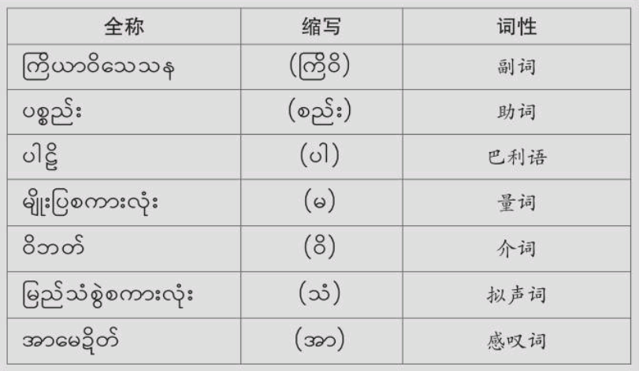
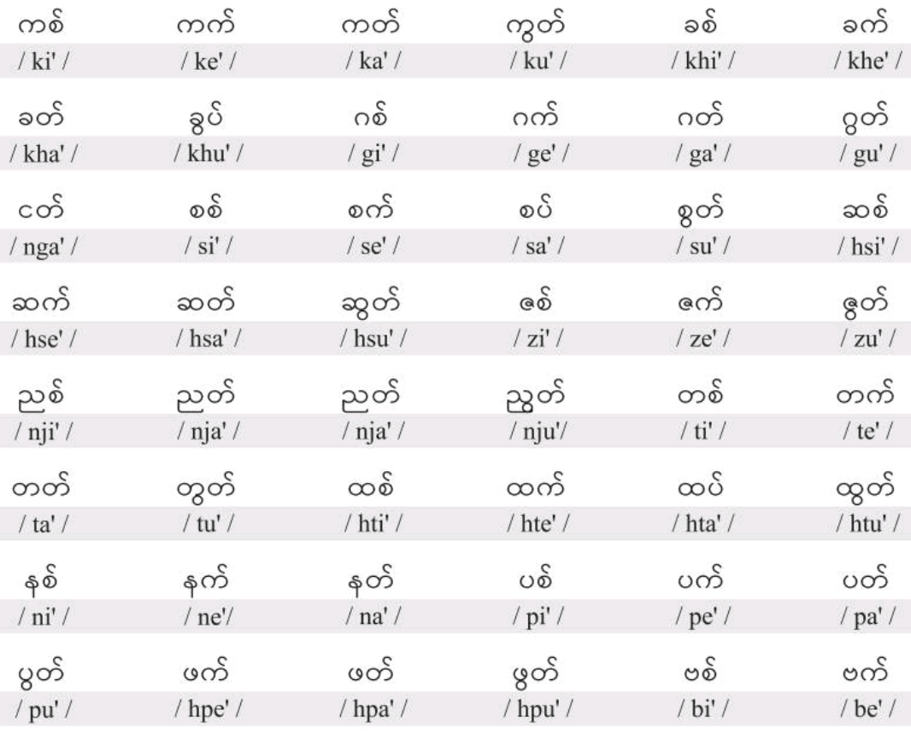

အသံထွက် အခြေခံ မြန်မာဖတ်စာ
Lec0 缅语语音概述
缅语简介
起源与历史缅语源自公元前500年到200年的印度婆罗米文字，使用人口约5000万。
语音特征拥有高低调和短促调四种声调，字母系统包括33个辅音字母和22个元音符号。
语法与词法基于辅音和元音的结合，常见音变现象包括清辅音变浊辅音和元音弱化。
语序基本语序为“主—宾—谓”。
缅语语音
缅语语音由辅音、元音和声调3部分组成
33个辅音

上述33个辅音实际只发23个音
က ခ ဂ ဃ င
စ ဆ ဇ ဈ ဉ
ဋ ဌ ဍ ဎ ဏ
တ ထ ဒ ဓ န
ပ ဖ ဗ ဘ မ
ယ ရ လ ဝ သ
ဟ ဠ အ
元音

အီ i အင် in အစ် i'
အေ ei အိန် ein အိတ် ei'
အယ် e -- အက် e'
အာ a အန် an အတ် a'
အော် o -- --
အို ou အုန် oun အုတ် ou'
အူ u အွန် un အွတ် u'
အိုင် ain အိုက် ai'
အောင် aun အောက် au'
缅语元音分类总结
缅语有22组元音符号，分为以下几类：
基本元音 包括基础的发音，如长元音等。
鼻化元音 鼻音发音，气流从鼻腔流出。
短元音 发音时间较短的元音。
央元音（半元音） 发音较为轻微，类似辅音的元音。
元音发音位置
元音的发音部位由口腔的气流决定，具体发音位置如下：

基本元音
7个基本元音：
အီ /i/
အေ /ei/
အယ် /e/
အာ /a/
အော် /o/
အို /ou/
အူ /u/
鼻化元音
鼻化元音的发音时，气流从鼻腔和口腔同时送出。
鼻化元音共7个，其中鼻化单元音有3个：
အင် /in/
အန် /an/
အွန် /un/
鼻化双元音有4个：
အိန် /ein/
အုန် /oun/
အိုင် /ain/
အောင် /aun/
这些元音是/e/和/i/，/o/和/u/，/a/和/i/，/a/和/u/结合的元音。
短促元音
短促元音的发音是由于气流经过喉腔与气管的合并后形成的。
短促音符号：“'”
短促元音共有8个，其中有4个为双元音。
单元音短促元音：
အစ် /i'/
အက် /e'/
အတ် /a'/
အွတ် /u'/
双元音短促元音：
အိတ် /ei'/
အုတ် /ou'/
အိုက် /ai'/
အောက် /au'/
半元音（央元音）
半元音，主要表现为/ə/音。在罗马化转写时，这个元音用字母 "a" 表示。发音时，/a/ 不需要刻意发音，舌位不发生明显的移动，通常是在口腔中自然发出。
发音特点： 该元音发音时舌位处于口腔中间，放松且不完全发音，因此被称为“半元音”。
半元音符号： 半元音在缅语中起到类似元音的作用，常常位于词首或词尾，但并不完全发音。
示例：
例如词汇အဖေ၊ အမေ၊ ဆရာ၊ ဆရာမ၊ မင်္ဂလာပါ等词中，အ ဆ မ ဂ等字母只发半元音
声调
声调特点：
缅语有4种声调：高降调、高平调、低平调、短促调。
发音特点：
高降调53、低平调22、高平调55、短促调4。轻音节没有稳定的调值。
功能：
区别词义
区别语法意义
Lec1 သင်ခန်းစာ ၁ 缅语辅音字母
辅音字母表
辅音字母名称
缅字母的名称对区分同音异体字至关重要。
辅音字母的名称大多依据其形状命名，具体如下：
形状命名：大部分辅音的名称源于字母形状。
区分同音异体字：名称用于辨别拼写中易混淆的字。

| 字母 | 名称 | 读音 |
|---|---|---|
| က | ကကြီး ka.kji: | ကဂျီး ka.gji: |
| ခ | ခကွေး kha.kewi: | ခဂွေး kha.gwei: |
| ဂ | ဂငဃ် ga.nge | ဂငဃ် ga.nge |
| ဃ | ဃကြီး ga.kji: | ဃဂျီး ga.gji: |
| င | င nga. | င nga. |
| စ | စလုံး sa.loun | စလုံး sa.loun |
| ဆ | ဆလိမ် hsa.lein | ဆလိမ် hsa.lein |
| ဇ | ဇကွဲ za.kwe: | ဇဂွဲ za.gwe: |
| ဈ | ဈမျဉ်းဆွဲ za.mjin:hswe: | ဈမျင်ဇွဲ za.mjin:zwe: |
| ည | ည nja. | ည nja. |
| ဋ | ဋသန်လျင်းချိတ် ta.than ljin:chei' | တတလင်းချိတ် ta.ta.lin:chei' |
| ဌ | ဌဝမ်းဘ hta.wan:ba. | ဌဝမ်ပဲ hta.wanbe: |
| ဍ | ဍရင်ကောက် da.jinkau' | ဒါ့ရင်ဂေါက် da.jin kau' |
| ဎ | ဎရေမှုတ် da.yei hmou' | ဒရေမှုတ် da.yei hmou' |
| ဏ | ဏကြီး na.kji: | ဏဂျီး na.gji: |
| တ | တဝမ်းပူ ta.wan:bu | တဝမ်းဗူ ta.wan:bu |
| ထ | ထဆင်ထူး hta.hsin htu: | ထဆင်ဒူး hta.hsin du: |
| ဒ | ဒထွေး da.htwei: | ဒထွေး da.htwei: |
| ဓ | ဓအောက်ချိုက် da.au'chai' | ဓအောက်ချိုက် da.au'chai' / ဓအောက်ချိုင့် da.au'chain. |
| န | နငယ် na.nge | နငယ် na.nge |
| ပ | ပစောက် pa.sau' | ပစဇောက် pa.zau' |
| ဖ | ဖဦးထုပ် hpa.u:htou' | ဖအုပ်ထုတ် pha.ou'htou' |
| ဗ | ဗထက်ချိုင့် ba.hta'chain. | ဗထက်ချိုက် ba.hta'chai' \/ ဗလချိုက် ba.la.chai' |
| ဘ | ဘကုန်း ba.koun: | ဘဂုန်း ba.goun: |
| မ | မ ma. | မ ma. |
| ယ | ယပက်လက် ja.pe'le' | ယပက်လက် ja.pe'le' |
| ရ | ရကောက် ja.kau' | ရဂေါက် ja.gau' |
| လ | လ la. | လ la. |
| ဝ | ဝ(ဝလုံး) wa.(wa.loun:) | ဝ wa. |
| သ | သ tha. | သ tha. |
| ဟ | ဟ ha. | ဟ ha. |
| ဠ | ဠကြီး la.kji: | ဠဂျီး la.gji: |
| အ | အ a. | အ a. |
书写规则
书写顺序：一般从左至右。不同开口方向的字母有不同书写顺序，开口朝下先下后上、先左后右；开口朝上先上后下、先左后右；开口朝右先右后左；开口朝左先左后右。
字母分类：分独体字（以一个圆圈为主体，如ခ၊ ဂ၊ ပ၊ စ၊ မ等）和联体字（以一个以上圆圈为主体构成，如က၊ ဆ၊ တ၊ လ၊ ဘ၊ ည၊ ယ等）。
字母位置：က၊ ခ၊ ဂ၊ ဃ၊ c၊ စ၊ ဆ၊ ဇ၊ ဎ၊ ဏ၊ တ၊ ထ၊ ဒ၊ ဓ၊ ပ၊ ဖ၊ ဗ၊ ဘ၊ မ၊ ယ၊ လ၊ o သ၊ ဟ၊ အ等字母在三格本居中格；ဈ ည၊ ဋ၊ ဌ၊ န၊ ရ၊ ဠ等字母在三格本居中格和下格。
元音符号：根据位置分上加、下加、前加、后加和再后加等。上加是加在基字上方；后加是加在基字后面，如ပါ၊ လာ中的“ါ”和“ာ”；再后加是在后加符号之后，如အား由基字"အ"、后加符号“ာ”、再加后加声调符号“း”构成。
书写范例
书写笔顺
辅音字母罗马字母转写

“ရ”还可以发卷舌音,但是多用于巴利语。
| 辅音字母 | 罗马字母 |
|---|---|
| က | /k/ |
| ခ | /kh/ |
| ဂ | /g/ |
| ဃ | /g/ |
| င | /ng/ |
| စ | /s/ |
| ဆ | /hs/ |
| ဇ | /z/ |
| ဈ | /z/ |
| ည | /nj/ |
| ဋ | /t/ |
| ဌ | /ht/ |
| ဍ | /d/ |
| ဎ | /d/ |
| ဏ | /n/ |
| တ | /t/ |
| ထ | /ht/ |
| ဒ | /d/ |
| ဓ | /d/ |
| န | /n/ |
| ပ | /p/ |
| ဖ | /hp/ |
| ဗ | /b/ |
| ဘ | /b/ |
| မ | /m/ |
| ယ | /y/ |
| ရ | /j/ 或 /r/ |
| လ | /l/ |
| ဝ | /w/ |
| သ | /th/ |
| ဟ | /h/ |
| ဠ | /l/ |
| အ | /a/ |
复辅音
复辅音指的是两个或两个以上辅音的组合。
根据组合的数量，分为：
双辅音：由两个辅音组合而成。
多辅音：由两个以上的辅音组合而成。
复辅音符号
共有 10 个复辅音符号，
-ျ (ယပင့် /ja.pin./)
-ြ (ရရစ် /ja.ji'/)
-ွ (ဝဆွဲ /wa.hswe:/)
-ှ (ဟထိုး /ha.htou:/)
-ျွ (ယပင့်ဝဆွဲ /ja.pin. wa.hswe:/)
-ြွ (ရရစ်ဝဆွဲ, /ja.ji' wa.hswe:/ )
-ျှ (ယပင့်ဟထိုး /ja.pin. ha.htou:/)
-ြှ (ရရစ်ဟထိုး /ja.ji' ha.htou:/)
ွှ (ဝဆွဲဟထိုး /wa.hswe: ha.htou:/)
-ြွှ (ရရစ်ဝဆွဲဟထိုး /ja.ji' wa.hswe: ha.htou:/)

快速记忆
ပင့်ရစ်ဆွဲထိုးဆယ်မျိုး "Ping-yit Hswe-htoe Seh Myo" 10种
双辅音
根据语音顺序，双辅音可分为前辅音和后辅音两种。缅语中33个字母代表的辅音，大部分可作为前辅音，而可作后辅音的较少，仅有以下4个：
| 字母 | 符号 | 发音 |
|---|---|---|
| ယ | -ျ | /j/ |
| ရ | -ြ | /j/ |
| ဝ | -ွ | /w/ |
| ဟ | -ှ | /h/ |
这些后辅音大部分是半元音。
它们在辅音中通过符号来表示。
| 字母 | 符号 | 名称 |
|---|---|---|
| ယ /j/ | -ျ | ယပင့် /ja.pin./ |
| ရ /j/ | -ြ | ရရစ် /ja.ji'/ |
| ဝ /w/ | -ွ | ဝဆွဲ /wa.hswe:/ |
| ဟ /h/ | -ှ | ဟထိုး /ha.htou:/ |
Note:
ဝဆွဲ /wa.hswe:/ 作为符号出现时，书写形式没有变化。书写时作为下加符号出现。
-可以是任何一个辅音字母。
(1)双辅音ယပင့်和ရရစ်
ယပင့် /ja.pin./ 和ရရစ် /ja.ji'/ 可以和其他字母组合，具体拼读方式如下表：
| က /k/ | + -ျ /j/ | ကျ /kj/ | က /k/ | + -ြ /j/ | ကြ /kj/ |
|---|---|---|---|---|---|
| ခ /kh/ | + -ျ /j/ | ချ /ch/ | ခ /kh/ | + -ြ /j/ | ခြ /chj/ |
| ဂ /g/ | + -ျ /j/ | ဂျ /gj/ | ဂ /g/ | + -ြ /j/ | ဂြ /gj/ |
| င /ng/ | + -ြ /j/ | ငြ /ngj/ | |||
| ပ /p/ | + -ျ /j/ | ပျ /pj/ | ပ /p/ | + -ြ /j/ | ပြ /pj/ |
| ဖ /hp/ | + -ျ /j/ | ဖျ /hpj/ | ဖ /hp/ | + -ြ /j/ | ဖြ /hpj/ |
| ဗ /b/ | + -ျ /j/ | ဗျ /bj/ | ဗ /b/ | + -ြ /j/ | ဗြ /bj/ |
| မ /m/ | + -ျ /j/ | မျ /mj/ | မ /m/ | + -ြ /j/ | မြ /mj/ |
| န /n/ | + -ျ /j/ | နျ /nj/ | |||
| လ /l/ | + -ျ /j/ | လျ /lj/ |
注意：(1)q/j/与c/ng/相拼时，发ည音。即：c+ရ=c=ည。(2)a/kh/和ယပC်၊ ရရစ合成复辅音时，使用的标识符号不是/j/而是变成/ch/。
NB:
ရ /j/ 与 င /ng/ 组合时，发ည音。i.e., င + ရ = ငြ = ည
ခ /kh/ 与 ယပင့် /ja.pin./, ရရစ် /ja.ji'/ 组合时，使用的标识符号不是 /j/ 而是 /ch/。
书写规则
符号"-ျ"加在辅音字母之后，居中、下两格。
符号"-ြ"加在辅音字母的外围，围在辅音字母的下、左、上方，居下、中、上三格。若辅音字母还有上加符号，则使用符号e.g.,"က်ြ"。
辅音字母"န"独立书写时，字形不变；若与复辅音相结合或以叠字出现时，字形变为e.g.,"နြ"。
书写范例
(2)双辅音ဝဆွဲ
ဝဆွဲ /wa.hswe:/ 的书写符号没有变化,可以直接跟其他辅音字母组合。
| က /k/ | + -ွ /w/ | ကွ /kw/ | န /n/ | + -ွ /w/ | နွ /nw/ |
|---|---|---|---|---|---|
| ခ /kh/ | + -ွ /w/ | ခွ /khw/ | ပ /p/ | + -ွ /w/ | ပွ /pw/ |
| ဂ /g/ | + -ွ /w/ | ဂွ /gw/ | ဖ /hp/ | + -ွ /w/ | ဖွ /hpw/ |
| င /ng/ | + -ွ /w/ | ငွ /ngw/ | ဗ /b/ | + -ွ /w/ | ဗွ /bw/ |
| စ /s/ | + -ွ /w/ | စွ /sw/ | ဘ /b/ | + -ွ /w/ | ဘွ /bw/ |
| ဆ /hs/ | + -ွ /w/ | ဆွ /hsw/ | မ /m/ | + -ွ /w/ | မွ /mw/ |
| ည /nj/ | + -ွ /w/ | ညွ /njw/ | ယ /j/ | + -ွ /w/ | ယွ /jw/ |
| တ /t/ | + -ွ /w/ | တွ /tw/ | ရ /j/ | + -ွ /w/ | ရွ /jw/ |
| ထ /ht/ | + -ွ /w/ | ထွ /htw/ | လ /l/ | + -ွ /w/ | လွ /lw/ |
| ဒ /d/ | + -ွ /w/ | ဒွ /dw/ | သ /th/ | + -ွ /w/ | သွ /thw/ |
| ဓ /d/ | + -ွ /w/ | ဓွ /dw/ | အ /a/ | + -ွ /w/ | အွ /aw/ |
书写规则
符号"-ွ"加在辅音字母(独体字)之正下方，加在辅音字母(联体字)之右下方，居下格。
"န"和ဝဆွဲ(-ွ)组合时，"န"的字形变为甩尾"နွ"。
"ရ"和ဝဆွဲ(-ွ)组合时，"ရ"的字形变为短的"ရွ"。
书写范例
(3)双辅音ဟထိုး
ဟထိုး /ha.htou:/ 可以和其他辅音字母组合。

| င /ng/ | + -ှ /h/ | ငှ /hng/ | ယ /j/ | + -ှ /h/ | ယှ /jh/ |
|---|---|---|---|---|---|
| ည /nj/ | + -ှ /h/ | ညှ /hnj/ | ရ /j/ | + -ှ /h/ | ရှ /jh/ |
| န /n/ | + -ှ /h/ | နှ /hn/ | လ /l/ | + -ှ /h/ | လှ /hl/ |
| မ /m/ | + -ှ /h/ | မှ /hm/ |
书写规则
符号"-ှ"加在辅音字母(独体字)之正下方，加在辅音字母(联体字)之右下方，居下格。
ဟထိုး (-ှ) 与辅音字母拼写时，位置与"ဝဆွဲ"相同。若与辅音字母"င ng"相拼时，向上挑时不宜太长。
"န"和ဟထိုး(-ှ)组合时，"န"的字形变为甩尾"နှ"。
书写范例

三合辅音、四合辅音
三合辅音和四合辅音，在这类复辅音中。
充当前音的只有：
က /k/ ခ /kh/ င /g/ ည /nja/ န /n/ မ /m/ ရ /j/ လ /l/ သ /th/等几个
充当后辅音的有：
ယ /j/ ရ /j/or/r/ ဝ /w/ ဟ /h/
它们均用符号来表示。例如：
| က /k/ | + ျ /j/ | + ွ /w/ | = ကျွ /kjw/ | |
|---|---|---|---|---|
| က /k/ | + ြ /j/ | + ွ /w/ | = ကြွ /kjw/ | |
| ခ /kh/ | + ျ /j/ | + ွ /w/ | = ချွ /chw/ | |
| ခ /kh/ | + ြ /j/ | + ွ /w/ | = ခြွ /chw/ | |
| ဂ /g/ | + ျ /j/ | + ွ /w/ | = ဂျွ /gjw/ | |
| ည /nj/ | + ွ /w/ | + ှ /h/ | = ညွှ /hnjw/ | |
| န /n/ | + ွ /w/ | + ှ /h/ | = နွှ /hnw/ | |
| မ /m/ | + ျ /j/ | + ှ /h/ | = မျှ /hmj/ | |
| မ /m/ | + ြ /j/ | + ှ /h/ | = မြှ /hmj/ | |
| မ /m/ | + ွ /w/ | + ှ /h/ | = မွှ /hmw/ | |
| ရ /j/ | + ွ /w/ | + ှ /h/ | = ရွှ /shw/ | |
| လ /l/ | + ျ /j/ | + ှ /h/ | = လျှ /hlj/ | |
| လ /l/ | + ွ /w/ | + ှ /h/ | = လွှ /hlw/ | |
| မ /m/ | + ြ /j/ | + ွ /w/ | + ှ /h/ | = မြွှ /hmjw/ |
NB:
ယ /j/ ဝ /w/ 两个辅音只能跟 က /k/ ခ /kh/ 辅音结合成三合辅音, 然后与元音结合成一个音节。 当三个辅音结合时,舌根软腭音က ခ音先与ယ拼,变成腭化音ကျ /kj/，然后再与 ဝ /w/ 音结合成三合辅音ကျွ /kjw/。
ရ /j/ + ဝ /w/ 也只能跟 က /k/ ခ /kh/ ပ /p/ မ /m/ 辅音结合成三合辅音, 然后与元音结合成一个音节。
ဟ /h/ ယ /j/ 辅音只能跟 မ /m/ လ /l/ သ /th/ 结合。而 လ /l/ ယ /th/ 分别与 ဟ+ယ (h+j) 相拼时，大多数情况下发音变成 /sh/ 音。例如：လ + ဟ + ယ = လျှ /sh/ 与元音အာ /a/ 相拼，成为 လျှာ /sha/。
ဟ /h/ + ရ /j/ 只能与鼻辅音 မ /m/ 结合。
ဝ /w/ + ဟ /h/ 只能与န /n/ မ /m/ ရ /j/ 相拼，而当它们与 ရ /j/ 结合成三合辅音时，发音变成 ရွှ/shw/。
书写规则
三合以上的辅音书写时
先写-ျ /j/ 或 -ြ /j/
再写 -ွ /w/，-ှ /h/
按ယ(-ျ) ရ(-ြ) ဝ(-ွ) ဟ(-ှ)的顺序依次书写。
书写范例

Lec2 သင်ခန်းစာ ၂ 基本元音အာ/a/

| 元音 | 符号 | 名称 |
|---|---|---|
| အာ့ /a./ | -ာ့ = -ါ့ | -ာ / -ါ = ရေးချ / jei: cha./ -့ = အောက်ကမြစ် /au'ka.mji'/ |
| အာ /a/ | -ာ = -ါ | -ာ = ရေးချ / jei: cha./ |
| အား /a:/ | -ား = -ါး | -ာ / -ါ = ရေးချ / jei: cha./ -း = ဝစ္စနှစ်လုံးပေါက် /wa.sa.hni'loun:bau'/ |
发音方法
元音အ/a/有两种符号：
| /a./ | /a/ | /a:/ |
|---|---|---|
| -ာ့ /a./ | -ာ /a/ | -ား /a:/ |
| -ါ့ /a./ | -ါ /a/ | -ါး /a:/ |
发音练习
"အ"、"အာ"、"အား"、"ကာ"、"ခါး" 和 "ငါ" 的发音：
အ (A.) 高降调
အာ (A) 低平调
အား (A:) 高平调
ကာ (Ka) 低平调
ခါး (Kha:) 高平调
ငါ (Nga) 低平调
NB:
虽然 အ/a./ 与 အာ့ /a./ 发音一样，但不同符号有不同意义。有时元音 အ /a./ 也会发成央元音 /a/，例如：ကစား /gaza:/ [玩；运动]。
အ /a./ 为高降调, 通常不用符号来表示, 但有时用符号"-ာ့"或"-ါ့"表示读音；အာ /a/ 为低平调, 符号为"-ာ"或"-ါ"；အား /a:/ 为高平调, 符号为"-ား"或"-ါး"。有些字母加"-ာ"容易混淆，所以ခ/kh/, ဂ /g/, င/ng/, ဝ /w/, ဒ /d/, ပ /p/ 之后加"-ါ"。分别为：ခါ /kha/, ဂါ /ga/, ငါ /nga/, ဝါ /wa/, ဒါ /da/, ပါ /pa/。
辅音字母 ခ /kh/, ဂ /g/, င /ng/, ဒ /d/, ပ /p/, ဝ /w/ 和符号မောက်ချ(-ါ) Mauk-cha 相拼，不与ဝိုက်ချ(-၁) Waiʔ-cha 相拼写。
ဝိုက်ချ(-၁) Waiʔ-cha 和 မောက်ချ(-ါ) Mauk-cha 在拼读时都读作ရေးချ Yay-cha。
书写规则
后加符号“(-၁)”、“-ါ”加在辅音字母之后，“-၁”居中格，“-ါ”居上、中两格
再后加符号“-း”置于后加符号“-၁”或“-ါ”之后，居中格。
书写范例

拼读练习
1 辅音字母拼读

2 复辅音字母拼读


句型练习
句型1：ဝါကျပုံစံ (၁) /wakja.pounsan/ (1)
လာ။ / la / 来。
လာပါ။ / la ba / 来吧。
မမ လာပါ။ / ma.ma. la ba / 姐姐来吧。
练习1：လေ့ကျင့်ရန် (၁) /lei.kjin.jan/ (1)
စား။ / sa: /吃。
စားပါ။ / sa:ba/ 吃吧。
ထားထား စားပါ။ / hta:hta: sa: ba/ 塔塔吃吧。
နား။ / na:/ 休息。
နားပါ။ / na: ba/ 休息吧。
မာမာ နားပါ။ / mama na: ba/ 玛玛休息吧。
ထ॥ /hta./ 起来。
ထပါ။ /hta.ba/ 起来吧。
ပပ ထပါ။ /pa.ba.hta.ba/ 巴巴起来吧。
က॥ /ka./ 跳舞。
ကပါ။ /ka.ba/ 跳舞吧。
ဝါဝါ ကပါ။/wawa ka.ba/ 瓦瓦跳舞吧。
ကစား॥ / ga za: / 玩。
ကစားပါ။ / gaza: ba/ 玩吧。
သားသား ကစားပါ။ / tha:tha:ga za: ba/ 宝宝(去)玩吧。
句型2：ဝါကျပုံစံ (၂) /wakja.pounsan/ (2)
ဒါ ငါးလား။ / da nga: la: / 这是鱼吗？
ဒါ ငါးပါ။ / da nga: ba/ 这是鱼。
练习2：လေ့ကျင့်ရန် (၂) /lei.kjin.jan/ (2)
ဒါ ကားလား။ / da ka: la:/ 这是车吗？
ဒါ ကားပါ။ / da ka: ba / 这是车。
ဒါ ဆရာလား။ / da hsaja la: / 这是男老师吗?
ဒါ ဆရာပါ။ / da hsaja ba/ 这是男老师。
ဒါ ညစာလား။ /da nja.za la: / 这是晚餐吗?
ဒါ ညစာပါ။ / da nja.za ba / 这是晚餐。
ဒါ ရထားလား။ / da jahta: la: / 这是火车吗？
ဒါ ရထားပါ။ /da jahta: ba / 这是火车。
ဒါ စားစရာလား။ / da sa:zaja la: / 这是食物吗？
ဒါ စားစရာပါ။ / da sa:zaja ba / 这是食物。
课文词汇

| 词汇 | 读音 | 词性 | 释义 |
|---|---|---|---|
| လာ | la | (ကြိ) v. | 来 |
| မမ | ma.ma | (န) n. | 姐姐 |
| စား | sa: | (ကြိ) v. | 吃 |
| ထားထား | hta:hta: | (န) n. | 塔塔（人名） |
| နား | na: | (ကြိ) v. | 休息 |
| မာမာ | ma.ma | (န) n. | 玛玛（人名） |
| ထ | hta | (ကြိ) v. | 起来，坐起 |
| ပပ | pa.ba | (န) n. | 巴巴（人名） |
| ကစား | ga za: | (ကြိ) v. | 玩，游戏 |
| သားသား | tha:tha: | (န) n. | 宝贝，儿子 |
| ဒါ | da | (နစ) pron. | 这，这个 |
| ငါး | nga: | (န) n. | 鱼 |
| ကား | ka: | (န) n. | 汽车 |
| ဆရာ | hsaja | (န) n. | 老师（男） |
| ညစာ | nja.za | (န) n. | 晚饭 |
| ရထား | jahta: | (န) n. | 火车 |
| စားစရာ | sa:zaja | (န) n. | 食品 |
语法 သဒ္ဒါအသုံးအနှုန်း /tha.d.da.a.thoun:a.hnoun:/
1 缅语词类
缅语词类可分为11种


| 全称 | 缩写 | 词性 |
|---|---|---|
| နာမ် Namn | (န) Na | 名词 n. |
| နာမ်စား Namn-sa | (နစ) Na-sa | 代词 pron. |
| နာမဝိသေသန Na-ma wi-thay-tha-na | (နဝိ) Na-wi | 形容词 adj. |
| ကြိယာ Kyi-ya | (ကြိ) | 动词 v. |
| ကြိယာဝိသေသန Kyi-ya wi-thay-tha-na | (ကြိဝိ) Kyi-wi | 副词 adv. |
| ပစ္စည်း Pyit-syi | (စည်း) Syi | 助词 part. |
| ပါဠိ Pa-li | (ပါ) Pa | 巴利语 Pāḷi |
| မျိုးပြစကားလုံး Myo-pya-za-ga-lone | (မ) Ma | 量词 meas. |
| ဝိဘတ် Wi-bat | (ဝိ) Wi | 介词 prep. |
| မြည်သံစွဲစကားလုံး Mye-tha-swe-za-ga-lone | (သံ) Tha | 拟声词 ono. |
| အာမေဍိတ် A-me-dait | (အာ) Aa | 感叹词 int. |
2 缅语基本句子结构和词序
最简单句式由单个动词构成，例如：က။ /ka/ 跳。 စား။ /sa:/ 吃。 သွား။ /swa:/ 走。
基本词序是:主语+谓语; 主语+宾语+谓语。谓语永远在句子的最后。有时候“动词+句尾助词”或“名词+句尾助词”也可以独立成句。
动词+句尾助词→祈使句名词+句尾助词→表语句例如：
E.g.,ထပါ။ /hta.ba/ 起来吧！
ကပါ။ /ka.ba/ 跳舞吧！
စားပါ။ /sa:ba/ 吃吧！
မမပါ။ /ma.ma.ba/ 是姐姐。
ဆရာပါ။ /hsaja.ba/ 是老师。
စားစရာပါ။ /sa:zaja.ba/ 是食品。
按照基本语序，句子可加入主语、宾语进行拓展。例如：
မမ ကပါ။ /ma.ma ka.ba/ 姐姐跳舞吧！
ဆရာမ နားပါ။ /hsaja na: ba/ 女老师休息吧！
ဝါဝါ ညစာစားပါ။ /wawa nja.za sa: ba/ 瓦瓦吃晚饭吧！
注意：口语中“ပါ”除了跟在短促调词语后之外，跟在其他声调词语后都变为浊音，读作“ဗါ”。
3 指示代词 ဒါ da
ဒါ da 为指示代词，意为“这是...”，后面不能加所指代的名词，例如：
ဒါ အစားအစာပါ။ / da a me daiʔ ba / 这是食物
ဒါ ကားပါ။ / da ka: ba / 这是汽车
ဒါ တာယာပါ။ / da ta ja ba / 这是轮胎
4 一般疑问句及其回答
缅语中，一般疑问句需要用句尾助词来体现。
本课中涉及的一般疑问句的基本句型为“名词、代词或名词、代词性词组+句尾助词လား”意为“是……吗？”
其中，လား为一般疑问句句尾助词。
一般疑问句可用句型“名词、代词+ပါ။ ”或“ဒါ+名词、代词+ပါ။ ”进行肯定回答。
例如：
ဆရာလား။ /hsaja la:/ 是老师吗？
ဆရာပါ။ /hsaja ba/ 是老师。
အသားလား။ /a tha: la:/ 是肉吗？
အသားပါ။ /a tha: ba/ 是肉。
ဒါ ငါးလား။ /da nga: la:/ 这是鱼吗？
ဒါ ငါးပါ။ /da nga: ba/ 这是鱼。
ဒါ လှလှလား။ /da hla hla la:/ 这是拉拉吗？
ဒါ လှလှပါ။ /da hla hla ba/ 这是拉拉。
ဒါ ကရားလား။ /da ka ra: la:/ 这是壶吗？
ဒါ ကရားပါ။ /da ka ra: ba/ 这是壶。
ဒါ ဘွားဘွားလား။ /da bwa: bwa: la:/ 这是奶奶（姥姥）吗？
ဒါ ဘွားဘွားပါ။ /da bwa: bwa: ba/ 这是奶奶（姥姥）。
5 标点符号
传统标点符号：
“၊” 表示句中的停顿，相当于汉语的逗号、分号或顿号。
“။” 表示句子的结束，相当于句号。
使用习惯：缅语使用标点符号主要是根据朗读时的停顿来定，因此传统标点符号较为简单。
现代标点符号的引入：受外来语言的影响，现代缅语逐渐引入了其他标点符号，如问号“？”，省略号“……”，引号“”和括号“（）”，使标点符号更加丰富和多样化。
补充词汇 ဖြည့်စွက်ဝေါဟာရများ /phji.swe'wo:haja.mja:/
| 词汇 | 读音 | 释义 |
|---|---|---|
| ခဏ | kha. na | 一会儿 |
| ခဏခဏ | kha. na kha. na | 经常，多次 |
| ခါးနာ | kha: na | 腰痛 |
| ခါး | kha: | 腰 |
| ငါ | nga | 我 |
| စ | sa. | 开始 |
| စာ | sa | 文字，字 |
| ဆာ | hsa | 饿，渴 |
| ဆား | hsa: | 盐 |
| ည | nya. | 晚上 |
| ညာ | nya | 右 |
| ထား | hta: | 放 |
| ဓား | da: | 刀 |
| နာ | na | 难过，痛 |
| နား | na: | 耳 |
| ပဝါ | pa. wa | 头巾，披巾 |
| ဘဘ | ba ba | 伯父，大舅 |
| မာ | ma | 硬 |
| များ | mya: | 多 |
| ယာ | ya | 右 |
| ယား | ya: | 痒 |
| ရ | ya. | 得到，收到 |
| ရွာ | ywa | 下雨，农村 |
| လ | la. | 月亮，月 |
| လခ/လစာ | la kha / la sa | 月薪，工资 |
| လှ | hla. | 好看，漂亮 |
| ဝ | wa. | 胖，肥 |
| အ | a. | 哑，傻 |
| အား | a: | 有空 |
Lec3 သင်ခန်းစာ ၃ 基本元音အီ /i/

| 元音 | 符号 | 名称 |
|---|---|---|
| အိ /i./ | -ိ = -ည့် | -ိ = လုံးကြီးတင် /loun: gji: tin/ -ည် = ညသတ် /nja.tha'/ -့ = အောက်ကမြစ် /au'ka.mji'/ |
| အီ /i/ | -ီ = -ည် | -ီ = လုံးကြီးတင်ဆန်ခတ် /loun: gji: tin hsan kha'/ -ည် = ညသတ် /nja.tha'/ |
| အိး /i:/ | -ိး = -ည်း | -ီ = လုံးကြီးတင်ဆန်ခတ် /loun: gji: tin hsan kha'/ -း = ဝစ္စနှစ်လုံးပေါက် /wa.sa.hni'loun:bau'/ -ည် = ညသတ် /nja.tha'/ |
发音方法
元音 အီ /i/ 有两种符号：
| /i./ | /i/ | /i:/ |
|---|---|---|
| -ိ /i./ | -ီ /i/ | -ီး /i:/ |
| -ည့် /i./ | -ည် /i/ | -ည်း /i:/ |
发音练习
"အိ"、"အီ"、"အီး"、"စီ"、"စည်း"、"နီး" 的发音：
အိ /i./ 为高降调
အီ /i/ 为低平调
အီး /i:/ 为高平调
စီ /si/ 为低平调
စည်း /si:/ 为高平调
နီး /ni:/ 为高平调
NB:
ဝစ္စနှစ်လုံးပေါက်(-း) 还可以叫ဝစ္စပေါက် 或 ရှေ့ကပေါက် 或 ရှေ့စီး,但是书写的符号只有一种。
词汇 发音 ဝစ္စနှစ်လုံးပေါက် (-း) /wa.sa.hni'loun:bau'/ ဝစ္စပေါက် /wa.sa.pau'/ ရှေ့ကပေါက် /shei.ka.pau'/ ရှေ့စီး /shei.si:/
书写规则
上加符号"-ိ"、"-ီ"加在独体字母的正上方，居上格；若辅音字母是联体字，则符号"-ိ"、"-ီ"加在右上方，居上格。
后加符号 "-ည်" 加在辅音字母之后。先写"-ည"，居中、下格，再写"-်"，居上格。
书写范例

拼读练习
1 辅音字母拼读

2 复辅音字母拼读

句型练习
句型1：ဝါကျပုံစံ (၁) /wakja.pounsan/ (1)
စီးပါ။ / si: ba/ 乘坐(骑)。
ကားစီးပါ။ / ka: si: ba/ 坐车吧。
练习1：လေ့ကျင့်ရန် (၁) /lei.kjin.jan/ (1)
တီးပါ။ / ti: ba / 弹奏吧。
ဂီတာတီးပါ။ / gita: ti: ba / 弹吉他吧。
စီပါ။ /si ba/ 排列。
ညီညီစီပါ။ / nji nji si ba / 排整齐吧。
လှီးပါ။ / hli: ba/ 切(削)吧。
အသီးလှီးပါ။ /athi: hli: ba/ 切果吧。
မြည်းပါ။ /mji: ba/ 尝吧。
ဆီးသီး မြည်းပါ။ /zi:dhi: mji: ba / 尝枣子吧。
ကြည့်ပါ။ /kji.ba/看吧。
လကြည့်ပါ။/la.kji. ba / 看月亮吧（赏月吧)。
句型2：ဝါကျပုံစံ (၂) /wakja.pounsan/ (2)
မီးမီး ဒီမှာလား။ / mi:mi: di hma la: / 米米在这吗?
မီးမီး ဒီမှာပါ။ / mi:mi: di hma ba / 米米在这。
练习2：လေ့ကျင့်ရန် (၂) /lei.kjin.jan/ (2)
ထီး ဒီမှာလား။ / hti: di hma la: / 伞在这吗?
ထီး ဒီမှာပါ။ / hti: di hma ba / 伞在这。
ပီပီ ဒီမှာလား။ / pipi di hma la:/ 哨子在这吗?
ပီပီ ဒီမှာပါ။ / pipi di hma ba / 哨子在这。
ဌာန ဒီမှာလား။ / htana. di hma la:/ 系(部门)办公室在这吗？
ဌာန ဒီမှာပါ။ / htana. di hma ba/ 系(部门)办公室在这。
ဆရာ ဒီမှာလား။ / hsaja di hma la: / 男老师在这吗？
ဆရာ ဒီမှာပါ။ / hsaja di hma ba/ 男老师在这。
နီနီ ဒီမှာလား။ /nini di hma la: / 尼尼在这吗？
နီနီ ဒီမှာပါ။ / nini di hma ba / 尼尼在这。
课文词汇
| 词汇 | 读音 | 词性 | 释义 |
|---|---|---|---|
| စီး | si: | (ကြိ) v. | 骑、乘、坐 |
| တီး | ti: | (ကြိ) v. | 弹，敲 |
| ဂီတာ | gita: | (န) n. | 吉他 |
| စီ | si. | (ကြိ) v. | 排列 |
| ညီညီ | nji nji | (ကြိဝိ) adv. | 整齐排列 |
| လှီး | hli: | (ကြိ) v. | 切，削 |
| အသီး | a thi: | (န) n. | 果实 |
| မြည်း | mji: | (ကြိ) v. | 尝，尝试 |
| ဆီးသီး | zi: dhi: | (န) n. | 红枣 |
| ကြည့် | kji. | (ကြိ) v. | 看 |
| လ | la | (န) n. | 月亮 |
| မီးမီး | mi:mi: | (န) n. | 米米（人名） |
| ဒီ | di | (နစ) pron. | 这，这个 |
| ထီး | hti: | (န) n. | 雨伞，阳伞 |
| ပီပီ | pi pi | (န) n. | 哨子 |
| ဌာန | htana. | (န) n. | 系，部门 |
| နီနီ | ni ni | (န) n. | 尼尼（人名） |
语法 သဒ္ဒါအသုံးအနှုန်း /tha.d.da.a.thoun:a.hnoun:/
1 一般疑问句 ဒီမှာလား။ Di hma la:
ဒီ /di/ 为指示代词，意为“这”
မှာ /hma/ 为地点状语助词，意为“在”
လား /la:/ 为一般疑问句句尾助词
三者结合后，“ဒီမှာလား။” /di hma la:/ 意思是“在这里吗？”。
该问句用于对人物、事物所在地进行提问。
“ဒီမှာပါ။” /di hma ba/ 在这里。是对上述问句的肯定回答形式。
那么，以上问答句型可拓展为：
问：名词、代词或名词代词性词组 + ဒီမှာလား။ /di hma la:/
答：名词、代词或名词代词性词组 + ဒီမှာပါ /di hma ba/
例句：
ထီး ဒီမှာလား။ / hti: di hma la: / 伞在这吗?
ထီး ဒီမှာပါ။ / hti: di hma ba / 伞在这。
မီးမီး ဒီမှာလား။ / mi:mi: di hma la: / 米米在这吗?
မီးမီး ဒီမှာပါ။ / mi:mi: di hma ba / 米米在这。
2 缅语中的变音现象
辅音的变化：
清辅音变为浊辅音。
浊辅音变为清辅音。
非鼻化音变成鼻化音。
但大多数变音情况是:清辅音->浊辅音。
示例：
က /k/, ခ /kh/ -> ဂ /g/
စ /s/ -> ဇ /z/
တ /t/, ထ /ht/ -> ဒ /d/
例如：ကစား၊ စကား၊ ညစာ၊ တကာ၊ ထားဝယ်
ကစား /ka.sa:/ 吃饭
စကား /sa.ka:/ 走路
ညစာ /nja.sa:/ 晚饭
တကာ /ta.ka:/ 放下
ထားဝယ် /hta:wai/
辅音字母在多音节词中的作用：
辅音字母位于多音节词的词首时，本身没有独立意义，并且和其他辅音字母连续时，通常轻读，即元音变为央元音。
在多音节词的最后一个音节时，辅音字母一般不轻读。
示例：
变音：အသီး /a.thi:/ 果实
အအေး /a.e:/ 冷的
不变音：
အက /a.ka./ 有
ခဏ /kha.na./ 一会儿
နဝမ /na.wa.ma./ 第九
ပထမ /pa.tha.ma/ 第一
补充词汇 ဖြည့်စွက်ဝေါဟာရများ /phji.swe'wo:haja.mja:/
| 词汇 | 读音 | 释义 |
|---|---|---|
| ကီဝီသီးကျီး | ki wi thi: kyi: | 猕猴桃 |
| ကျီး | kyi: | 乌鸦 |
| ကြီး | kri: | 大 |
| ကြည်း | kji: | 陆地 |
| ချည် | chi | 绑，扎，掴 |
| ချည် | chi | 纱线 |
| ဆီ | si | 油 |
| ညီ | ni | 弟弟（男） |
| ထိ | thi. | 触，碰 |
| ထီ | thi | 彩票 |
| နီ | ni | 红的，红色的 |
| နီး | ni: | 近 |
| ပီ | pi | 清楚，准确 |
| ပြီး | pji: | 完结 |
| ပြည် | pji | 国家 |
| ဖီး | hpi: | 把（香蕉） |
| ဖြီး | hpji: | 梳，刷 |
| ဘီစီ | bhi si | 纪元前（BC） |
| ဘီး | bhi: | 梳子，刷子 |
| မိမိ | mi mi | 自己 |
| မြည် | mji | 响 |
| သိ | thi. | 知道，懂得 |
| ရှိ | hri. (shi.) | 有 |
| အီ | i | 感到油腻 feel queasy |
| အီး | i: | 屁 |
Lec4 သင်ခန်းစာ ၄ 基本元音အူ /u/
| 元音 | 符号 | 名称 |
|---|---|---|
| အု /u./ | -ု | -ု = တစ်ချောင်းငင် /ti' chaun: ngin/ |
| အူ /u/ | -ူ | -ူ = နှစ်ချောင်းငင် /hni' chaun: ngin/ |
| အူး /u:/ | -ူး | -ု = တစ်ချောင်းငင် /ti' chaun: ngin/ -ူ = နှစ်ချောင်းငင် /hni' chaun: ngin/ |
发音方法
元音 အူ /u/
发音练习
"အု", "အူ", "အူး", "ခု", "ညူး", "သူ"的发音：
အု /u./ 为高降调
အူ /u/ 为低平调
အူး /u:/ 为高平调
ခု /khu/ 为高降调
ညူး /nyu:/ 为高平调
သူ /thu/ 为低平调
书写规则
下加符号"-ု"、"-ူ"加在独体辅音字母正下方,居下格;若辅音字母是联体字,则符号加在右下方，居下格。
与辅音字母"န"相拼写时，န要改写。"-ု"、"-ူ"加在"န"正下方，居下格。写成"နု"、"နူ"。
辅音字母"ရ"有下加符号时,尾巴要缩短，"-ု"、"-ူ"加在"句"的正下方，居下格。写成"ရု"、"ရူ"、"ရူး"。
辅音字母"ဠ"、"ည"等长体字遇有下加符号时，元音符号"-ု"、"-ူ"、"-ူ"要写在基字之后，并且将其拉长与基字等同，居中、下两格，写成"ဠု"、"ညု"、"ညူ"、 "ညူး"
书写范例
拼读练习
1 辅音字母拼读


2 复辅音字母拼读

句型练习
句型1：ဝါကျပုံစံ (၁) /wakja.pounsan/
ကူးပါ။ /ku: ba/抄写。
မကူးဘူး။ /ma ku: bu:/ 不抄写。
练习1：လေ့ကျင့်ရန် (၁) /lei.kjin.jan/
စုပါ။ / su. ba / 集合吧。
မစုဘူး။ / ma su. bu: / 不集合。
တူးပါ။ / tu: ba / 挖吧。
မတူးဘူး။ / ma tu: bu: / 不挖。
သွားပါ။ / thwa: ba / 走吧。
မသွားဘူး။ / ma thwa: bu: / 不走。
ထီးယူပါ။ / hti: ju ba/ 拿伞吧。
မယူဘူး။ / ma ju bu:/ 不拿。
ကစားပါ။ / gaza: ba / 去玩吧。
မကစားဘူး။ / ma gaza: bu: / 不去玩。
句型2：ဝါကျပုံစံ (၂) /wakja.pounsan/ (2)
စုစု ဘူးသီးခူးပါ။ / su.su. bu:dhi: khu: ba / 苏苏摘葫芦吧。
မခူး(ပါ)ဘူး။ / ma khu: ba bu: /不摘(了)。
练习2：လေ့ကျင့်ရန် (၂) /lei.kjin.jan/ (2)
လူစုပါ။ / lu su.ba/ (大家)集合吧。
မစု(ပါ)ဘူး။ / ma su. ba bu: / 不集合(了)。
မူမူ အသီးစားပါ။ / mumu athi: sa: ba / 慕慕吃果吧。
မစား(ပါ)ဘူး။ / ma sa: ba bu: / 不吃(了)。
မမ ရထားစီးပါ။ / ma.ma. jahta: si: ba / 姐姐坐火车吧。
မစီး(ပါ)ဘူး။ / ma si: ba bu:/ 不坐(了)。
မာလာ ကူညီပါ။ / mala kunji ba / 玛拉(来)帮忙吧。
မကူညီ(ပါ)ဘူး။ /ma kunji ba bu: / 不帮。
ဖြူဖြူ ဘုရားဖူးပါ။ / hpuhpu hpaja: hpu: ba / 漂漂拜佛吧。
မဖူး(ပါ)ဘူး။ / ma hpu: ba bu: / 不拜(了)。
句型3：ဝါကျပုံစံ (၃)
ဒီဟာ ဘူတာလား။ / di ha buta la: / 这是火车站吗?
ဒီဟာ ဘူတာပါ။ / di ha buta ba/ 这是火车站。ဒီဟာ သမီးလား။ / di ha thami: la: / 这是女儿吗?
ဒီဟာ သမီးပါ။ / di ha thami: ba/ 这是女儿。
练习3：လေ့ကျင့်ရန် (၃)
ဒီဟာ တူလား။ / di ha tu la: / 这是筷子吗?
ဒီဟာ တူပါ။ / di ha tu ba/ 这是筷子。ဒီဟာ နာရီလား။ / di ha naji la: / 这是钟吗?
ဒီဟာ နာရီပါ။ / di ha naji ba / 这是钟。ဒီဟာ မီးပူလား။ / di ha mi:bu la: / 这是熨斗吗?
ဒီဟာ မီးပူပါ။ / di ha mi:bu ba / 这是熨斗。ဒီဟာ တူးတူးလား။ / di ha tu:tu: la: / 这是杜杜吗?
ဒီဟာ တူးတူးပါ။ / di ha tu:tu: ba /这是杜杜。ဒီဟာ သခွားသီးလား။ / di ha thakhwa:dhi: la: / 这是黄瓜吗?
ဒီဟာ သခွားသီးပါ။ / di ha thakhwa:dhi: ba / 这是黄瓜。
课文词汇
| 词汇 | 读音 | 词性 | 释义 |
|---|---|---|---|
| ကူး | ku: | (ကြိ) v. | 抄写 |
| စု | su | (ကြိ) v. | 集合 |
| တူး | tu: | (ကြိ) v. | 挖 |
| သွား | thwa: | (ကြိ) v. | 去，走 |
| ယူ | ju | (ကြိ) v. | 拿，取 |
| စုစု | su.su. | (န) n. | 苏苏（人名） |
| ဘူးသီး | bhu: dhi: | (န) n. | 瓠瓜，葫芦 |
| ခူး | khu: | (ကြိ) v. | 采，摘 |
| လူ | lu | (န) n. | 人 |
| မူမူ | mumu | (န) n. | 慕慕（人名） |
| မာလာ | mala | (န) n. | 玛拉（人名） |
| ကူညီ | ku ni | (ကြိ) v. | 帮助，帮忙 |
| ဖြူဖြူ | hpuhpu | (န) n. | 漂漂（人名） |
| ဘုရား | bhu. ya | (န) n. | 佛塔 |
| ဖူး | hpu: | (ကြိ) v. | 朝拜 |
| ဘူတာ | bu ta | (န) n. | 火车站 |
| သမီး | thami: | (န) n. | 女儿 |
| တူ | tu | (န) n. | 筷子 |
| နာရီ | na ji | (န) n. | 小时，钟表 |
| မီးပူ | mi: bu | (န) n. | 熨斗 |
| တူးတူး | tu: tu: | (န) n. | 杜杜（人名） |
| သခွားသီး | thakhwa: dhi: | (န) n. | 黄瓜 |
语法 သဒ္ဒါအသုံးအနှုန်း /tha.d.da.a.thoun:a.hnoun:/
1 否定句
否定句的基本句型为:မ /ma/ + 动词、形容词 + ဘူး /bu:/, 意为“不……”。
其中，မ 为然否副词，ဘူး 为否定句句尾助词。
例如：
မလာ(ပါ)ဘူး။ /ma la ba bu:/ 不来。
မသွား(ပါ)ဘူး။ /ma thwa: ba bu:/ 不走。
မလှ(ပါ)ဘူး။ /ma hla. ba bu:/ 不漂亮。
မသိ(ပါ)ဘူး။ /ma thi. ba bu:/ 不知道。
ဘဘ မစား(ပါ)ဘူး။ /ba.ba. ma sa: ba bu:/ 伯伯不吃。
မမ မထ(ပါ)ဘူး။ /ma.ma. ma tha. ba bu:/ 姐姐不起来。
NB:缅语中，ပါ 加在谓语后，表示文雅、尊敬。
若句子中的谓语是由 主谓结构词组 或 宾动结构词组充当时, 然否副词 မ 必须放在 主谓结构词组 和宾动结构词组中的动词或形容词的前面。
例如：
ဘုရားဖူးပါ။ / hpaja: hpu: ba / 拜佛吧！
ဘုရား မဖူးပါဘူး။ / hpaja: ma hpu: ba bu:/ 不拜佛。ရထား စီးပါ။ / jahta: si: ba / 坐火车吧！
ရထား မစီးပါဘူး။ / jahta: ma si: ba bu:/ 不坐火车。
2 ဒီဟာ /di ha/ 这是
ဒီဟာ /di ha/ 等于 ဒါ /da/, 表示"这个"或“这是"。
其中，ဟာ /ha/ 为缅语中的主语助词。
例如：
ဒီဟာ/ဒါ သခွားသီးလား။ /di ha(da) thakhwa:dhi: la:/ 这是黄瓜吗？
ဒီဟာ/ဒါ သခွားသီးပါ။ /di ha(da) thakhwa:dhi: ba/ 这是黄瓜。
补充词汇 ဖြည့်စွက်ဝေါဟာရများ /phji.swe'wo:haja.mja:/
| 词汇 | 读音 | 释义 |
|---|---|---|
| ကုသ | ku tha | 治疗，医治 |
| ငါးခူ | nga: khu | 鲇鱼 |
| ဂူ | gu | 山洞 |
| ငုဝါ | nu wa | 金链花 |
| စု | su. | 集中 |
| စူး | su: | 扎，刺 |
| ဆု | hsu. | 奖品 |
| ဆူ | hsu | 沸腾 |
| ဆူး | hsu: | 刺 |
| တူ | tu | 侄儿,外甥 |
| တူမ | tu ma. | 侄女，外甥女 |
| ထု | thu. | 掏，敲，捶 |
| ထူ | thu | 厚 |
| ဒူးနာ | du: na | 膝盖疼 |
| နု | nu. | 嫩 |
| ပု | pu. | 矮 |
| ပူ | pu | 热 |
| ပြု | pju. | 做，干 |
| မူး | mu: | 头晕，醉 |
| ရူး | ju: | 发疯的 |
| ရှူ | shu | 呼吸，闻 |
| လု | lu | 抢，争 |
| လှူ | hlu | 捐献，布施 |
| ဝူရှူး | wu shu: | 武术 |
| သူ | thu | 他，她 |
| အခု | a khu. | 现在 |
| အပူ | a pu | 热 |
| အဖု | a hpu. | 疙瘩 |
| အူ | u | 肠 |
Lec5 သင်ခန်းစာ ၅ 基本元音အေ /ei/

| 元音 | 符号 | 名称 |
|---|---|---|
| အေ့ /ei./ | ေ-့ = - ည့် | ေ- = သဝေထိုး /tha.wei htou:/ -့ = အောက်ကမြစ် /au'ka.mji'/ -ည် = ညသတ် /nja.tha'/ |
| အေ /ei/ | ေ- = ည် | ေ- = သဝေထိုး /tha.wei htou:/ -ည် = ညသတ် /nja.tha'/ |
| အေး /ei:/ | ေ-း = ည်း | ေ- = သဝေထိုး /tha.wei htou:/ -း = ဝစ္စနှစ်လုံးပေါက် /wa.sa.hni'loun:bau'/ -ည် = ညသတ် /nja.tha'/ |
发音方法
元音 အေ /ei/ 有2种符号：
| /ei./ | /ei/ | /ei:/ |
|---|---|---|
| ေ-့ | ေ- | ေ-း |
| -ည့် | -ည် | -ည်း |
发音练习
" အေ့ ", " အေ ", " အေး ", " စေ ", " ရေး ", " သေး " 的发音:
အေ့ /ei./ 为高降调
အေ /ei/ 为低平调
အေး /ei:/ 为高平调
စေ /sei/ 为高降调
ရေး /yei:/ 为高平调
သေး /thei:/ 为高平调
NB:特殊符号 "ဧ" 发 "အေ" /ei/ 音
书写规则
"ေ-" 为为前加符号，加在辅音字母之前，居中格。
"-့" 为下加符号，加在独体辅音字母正下方或联体字母的右下方，居下格。
当单词是由多个符号组成时，下加符号“-့”得加在整体符号的后下方，居下格。
书写范例

拼读练习
1 辅音字母拼读

2 复辅音字母拼读
句型练习
句型1：ဝါကျပုံစံ (၁) /wakja.pounsan/ (1)
မေးပါရစေ။ / mei: baja. zei / 请问……
မေးပါ။ /mei: ba/ 问吧。
练习1：လေ့ကျင့်ရန် (၁) /lei.kjin.jan/ (1)
ရေအေး ပေးပါရစေ။ /jeiei: pei: baja.zei/ 让我给你冷水吧。
ပေးပါ။ /pei: ba/ 好的。ဆေးပေးပါရစေ။ /hsei: pei: ba ja.zei/ 让我给你药吧。
ပေးပါ။ /pei: ba/ 好的。လှေစီးပါရစေ။ /hlei si: baja.zei/ 请允许我乘船。
စီးပါ။ /si: ba/ 坐吧。ဆွေးနွေးပါရစေ။ /hswei:nwei: baja.zei/ 请让我参与讨论吧。
ဆွေးနွေးပါ။ /hswei:nwei: ba/ 讨论吧。ခွေး မွေးပါရစ။ /khwei:mwei: ba ja. zei/ 请允许我养狗吧。
မွေးပါ။ / mwei: ba/ 养吧。
句型2：ဝါကျပုံစံ (၂) /wakja.pounsan/ (2)
ကလေး ပြေးသလား။ / kalei: pjei: dhala: / 孩子跑步吗?
မပြေးပါဘူး။ / ma pjei: ba bu: /不跑步。
练习2：လေ့ကျင့်ရန် (၂) /lei.kjin.jan/ (2)
အမေ ဈေးသွားသလား။ / amei zei thwa: dhala:/ 妈妈去市场吗？
မသွားပါဘူး။ / ma thwa: ba bu: / 不去
ဖေဖေ လှေစီးသလား။ / hpeihpei hlei si: dhala: / 爸爸坐船吗?
မစီးပါဘူး။ / masi: ba bu: / 不坐。မမ ရေပေးသလား။ / ma.ma. jei pei: dhala: / 姐姐给水(给某人)吗?
မပေးပါဘူး။ / ma pei: ba bu:/ 不给。အေးအေး စာမေးသလား။ /ei:ei: sa mei: dhala: / 埃埃问问题?
မမေးပါဘူး။ / ma mei: ba bu: / 不问。ထွေးထွေး စာရေးသလား။ / htwei:htwei: sajei: dhala: / 推推写信吗？
မရေးပါဘူး။ / majei: ba bu:/ 不写。
课文词汇
| 词汇 | 读音 | 词性 | 释义 |
|---|---|---|---|
| မေး | mei: | (ကြိ) v. | 问 |
| ရေအေး | jeiei: | (န) n. | 凉水，冷水 |
| ပေး | pei: | (ကြိ) v. | 给 |
| ဆေး | hsei: | (န) n. | 药 |
| လှေစီး | hlei si: | (ကြိ) v. | 乘船 |
| ဆွေးနွေး | hswei:nwei: | (ကြိ) v. | 讨论 |
| ခွေး | khwei: | (န) n. | 狗 |
| မွေး | mwei: | (ကြိ) v. | 养 |
| ကလေး | kalei: | (န) n. | 小孩 |
| ပြေး | pjei: | (ကြိ) v. | 跑 |
| အမေ | amei | (န) n. | 妈妈，母亲 |
| ဈေး | zei | (န) n. | 市场 |
| ဖေဖေ | hpeihpei | (န) n. | 爸爸，父亲 |
| အေးအေး | ei:ei: | (န) n. | 埃埃（人名） |
| ထွေးထွေး | htwei:htwei: | (န) n. | 推推（人名） |
| စာရေး | sajei: | (န) n. | 写字，写信 |
语法 သဒ္ဒါအသုံးအနှုန်း /tha.d.da.a.thoun:a.hnoun:/
1 ပါရစေ။ /ba.zei/
祈使句句尾助词。
句型" 动词 + ပါရစေ။ "表示请求对方允许自己进行某个动作，为较文雅的用语。
相当于汉语“请允许我……”，例如:
သိပါရစေ။ /thi.baja.zei/ 请允许我知道！
စီးပါရစေ။ /si:baja.zei/ 请允许我坐（骑）！
ဈေးသွားပါရစေ။ /zei thwa: ba ja.zei/ 请允许我去市场！
စာမေးပါရစေ။ /sa mei: ba ja.zei/ 请允许我问问题！
အသီး ခူးပါရစေ။ /a.thi: khu: ba ja.zei/ 请允许我摘果！
သခွားသီး စားပါရစေ။ /thakhwa:dhi: sa: ba ja.zei/ 请允许我吃黄瓜
2 一般疑问句（二）
“动词、形容词 + သလား။ /dha.la:/ ”句型用于对动词、形容词的提问,意为“……吗?”例如：
စားသလား။ /sa: dha.la:/ 吃吗？
သွားသလား။ /thwa: dha.la:/ 去吗？
အးသလား။ /ei: dha.la:/ 冷吗？
ဝေးသလား။ /wei: dha.la:/ 远吗？
否定回答
“ မ /ma/ + 动词、形容词 + ဘူး။ /ba bu:/ ”句型进行否定回答，意为“不……”。例如：
မမ ရေကူးသလား။ /ma ma rei: khu: dha.la:/ 姐姐游泳吗？
မမ ရေမကူးပါဘူး။ /ma ma rei: ma khu: ba bu:/ 姐姐不游泳。ဘဘ ထီးယူသလား။ /bha:bha: thi: yu dha.la:/ 伯伯拿伞吗？
ဘဘ ထီးမယူပါဘူး။ /bha:bha: thi: ma yu ba bu:/ 伯伯不拿伞。စားစရာ ရှိသလား။ /sa:saya shi. dha.la:/ 有吃的吗？
စားစရာ မရှိပါဘူး။ /sa:saya ma shi. ba bu:/ 没有吃的。
补充词汇 ဖြည့်စွက်ဝေါဟာရများ /phji.swe'wo:haja.mja:/
| 词汇 | 读音 | 释义 |
|---|---|---|
| ကြေး | kjei: | 铜，钱币 |
| ကွေ့ | kwei | 转弯，拐弯 |
| ကျွေး | kjwei: | 喂养，请吃 |
| ကြွေ | kjwei | 陶瓷 |
| ကြွေး | kjwei: | 债务 |
| ချေး | chei: | 借（钱） |
| ချေး | chei: | 屎，粪 |
| ခြေဖဝါး | chei hpa. wa: | 脚掌，脚心 |
| ခြေမ | chei ma. | 脚拇指 |
| ချွေး | chwei: | 汗 |
| ချွေးမ | chwei: ma | 儿媳妇 |
| ငွေ | ngwei | 银，钱 |
| စေတီ | sei thi | 佛塔 |
| ဆေး | hsei: | 洗，检查 |
| တေးဂီတ | tei: gita. | 歌曲 |
| တွေ့ | twei. | 看到，遇见 |
| တွေး | twei: | 想 |
| နေ့ | nei. | 天，日 |
| နေ | nei | 太阳 |
| နွေရာသီ | nwei ya: thi | 夏季 |
| နွေး | nwei: | 温暖 |
| နှေး | hnei: | 慢 |
| နွှေး | hnwei: | 加热，温习 |
| ပွေ့ | pwei. | 抱，搂抱 |
| ဖြေ | hpjei | 回答，解答 |
| ဖြည့် | hpjei. | 填满，填充 |
| ဖြည်းဖြည်း | hpjei: hpjei: | 慢慢地 |
| မေ့ | mei. | 忘记 |
| မေး | mei: | 下巴 |
| မေးစေ့ | mei: sei. | 下巴尖 |
| မေ့ဆေး | mei. hsei: | 全身麻醉药 |
| မေဒေးနေ့ | mei dei: nei. | 五一国际劳动节 |
| မြီးရှည် | mji: shei | 米线 |
| မြေ | mjei | 土地 |
| မြွေ | mjwei | 蛇 |
| မွှေး | hmwei: | 香 |
| ရေနွေး | yei nwei: | 热水，开水 |
| ရွေး | jwei: | 选择，挑选 |
| ရှာလကာရည် | sha la. ka jei | 醋 |
| ရှေ့ | shei. | 前面 |
| ရွှေ | shwei | 黄金 |
| လေ | lei | 风，空气 |
| လေအေး | lei ei: | 冷风 |
| လေး | lei: | 重 |
| ဝေး | wei: | 远 |
| သေ | thei | 死 |
| သေး | thei: | 小 |
| သွေး | thwei: | 血 |
| အီကြာကွေး | i kya kwei: | 油条 |
| အီးမေးလ် | 邮件 | |
| အေး | ei: | 冷，凉 |
Lec6 သင်ခန်းစာ ၆ 基本元音 အယ် /e/

| 元音 | 符号 | 名称 |
|---|---|---|
| အဲ့ / အယ့် /e./ | -ဲ့ = -ယ့် = -ည့် | -ဲ = နောက်ပစ် /nau'pi'/ -့ = အောက်ကမြစ် /au'ka.mji'/ -ယ် = ယပက်လက်သတ် /ja.pe'le'tha'/ -ည် = ညသတ် /nja.tha'/ |
| အယ် /e/ | -ယ် = -ည် | -ယ် = ယပက်လက်သတ် /ja.pe'le'tha'/ -ည် = ညသတ် /nja.tha'/ |
| အဲ /e:/ | -ဲ = -ည်း | -ဲ = နောက်ပစ် /nau'pi'/ -ည် = ညသတ် /nja.tha'/ -း = ဝစ္စနှစ်လုံးပေါက် /wa.sa.hni'loun:bau'/ |
发音方法
基本元音 အယ် /e/ 有2种符号：
| /e./ | /e/ | /e:/ |
|---|---|---|
| -ဲ့ | -ယ့် | -ဲ |
| -ည့် | -ည် | -ည်း |
发音练习
" အဲ့ ", " အယ် ", " အဲ ", " တဲ ", " ဝဲ ", " ဘယ် " 的发音:
အဲ့ /e./ 为高降调
အယ် /e/ 为低平调
အဲ /e:/ 为高平调
တဲ /te:/ 为高平调
ဝဲ /we:/ 为高平调
ဘယ် /bhe/ 为低平调
书写规则
上加符号 "-ဲ" 加在独体辅音字母的正上方，居上格; 若是联体辅音字母，则加在联体辅音字母的右上方，居上格。
后加符号 "-ယ်" 加在辅音字母之后，先写"ယ"，居中格; 再写“-်”，居上格。
书写范例

拼读练习
1 辅音字母拼读

NB:
ဧည့် 发 အဲ့ /e./ 音
2 复辅音字母拼读


句型练习
句型1：ဝါကျပုံစံ (၁) /wakja.pounsan/ (1)
မေမေ ဈေးဝယ်သလား။ / meimei zei: we dhala: / 妈妈买东西吗?
ဝယ်(ပါ)တယ်။ / we ba de /买了。အေးအေး ငွေလဲသလား။ /ei:ei: ngwei le: dhala: /埃埃要换钱吗
လဲ(ပါ)တယ်။ / le: ba de /换了。
练习1：လေ့ကျင့်ရန် (၁) /lei.kjin.jan/ (1)
ရဲရဲ မြေပဲပေးသလား။ /je:je: mjeibe: pei: dhala:/ 耶耶给花生了吗?
ပေး(ပါ)တယ်။ / pei:ba de / 给了。လဲ့လဲ့ ဘဲဥဝယ်သလား။ / le.le.be:u. we dhala:/ 列列买鸭蛋了吗？
ဝယ်(ပါ)တယ်။ / we ba de / 买了。နွယ်နွယ် ရေကဲ့သလား။ / newnwe jei ke. dhala: / 内内舀水了吗？
ကဲ့(ပါ)တယ်။ / ke. ba de / 舀了。သမီး ရေသယ်သလား။ / thami: jeithe dhala: / 女儿你挑水了吗？
သယ်(ပါ)တယ်။ / the ba de / 挑了。
句型2：ဝါကျပုံစံ (၂) /wakja.pounsan/ (2)
စားပါရစ။ / sa: baja.zei/ 请允许我吃。
မစား(ပါ)နဲ့။/ ma sa: ba ne. / 别吃了！တွေ့ပါရစ။ /twei.baja.zei / 请允许我见面。
မတွေ့(ပါ)နဲ့။/ ma twei. ba ne. / 别见了！
练习2：လေ့ကျင့်ရန် (၂) /lei.kjin.jan/ (2)
ပွဲကြည့်ပါရစေ။ /pwe: kji.baja.zei/ 请让我去看晚会吧。
မကြည့်(ပါ)နဲ့။/ ma kji. ba ne. / 别看了！မဲပေးပါရစေ။ / me: pei: baja.zei / 请允许我投票吧。
မပေး(ပါ)နဲ့။ / ma pei: ba ne. / 别投了!ဆားဝယ်ပါရစ။ / hsa: we baja. zei / 请让我买盐吧。
မဝယ်(ပါ)နဲ့။/ ma we ba ne./ 别买了！ဖရဲသီး ကျွေးပါရစေ။ / hpaje:dhi: kjwei: baja.zei / 我请你吃西瓜吧。
မကျွေး(ပါ)နဲ့။/ ma kjwei: ba ne. / 别请了！
课文词汇
| 词汇 | 读音 | 词性 | 释义 |
|---|---|---|---|
| ဈေးဝယ် | zei: we | (ကြိ) v. | 购物 |
| ဝယ် | we | (ကြိ) v. | 买 |
| လဲ | le: | (ကြိ) v. | 换 |
| ရဲရဲ | je:je: | (န) n. | 耶耶（人名） |
| မြေပဲ | mjeibe: | (န) n. | 花生 |
| လဲ့လဲ့ | le.le. | (န) n. | 列列（人名） |
| ဘဲဥ | be:u | (န) n. | 鸭蛋 |
| နွယ်နွယ် | newnwe | (န) n. | 内内 |
| ရေကဲ့ | yei ke. | (န) v. | 舀水 |
| ကဲ့ | ke. | (ကြိ) v. | 舀 |
| သယ် | the | (ကြိ) v. | 挑，搬 |
| တွေ့ | twei. | (ကြိ) v. | 见面 |
| ပွဲ | pwe: | (န) n. | 节会 |
| မဲ | me: | (န) n. | 票 |
| ဆား | hsa: | (န) n. | 盐 |
| ဖရဲသီး | hpaje:dhi: | (န) n. | 西瓜 |
语法 သဒ္ဒါအသုံးအနှုန်း /tha.d.da.a.thoun:a.hnoun:/
1 တယ် /de/ 助词
谓语助词 或 一般陈述句句尾助词
"动词、形容词 + တယ်။ /de/" 可用于对以"သလား" /dha.la:/ 结尾的一般疑问句进行肯定回答。
例如：
ပေးသလား။ /pei: dha.la:/ 给吗？
ပေးပါတယ်။ /pei: ba de/ 给了。ပုလဲဆွဲကြိုး ဝယ်သလား။ /pu.le: swe: kyou: we dha.la:/ 买珍珠项链吗？
ဝယ်ပါတယ်။ /we ba de/ 买了。စာမေးပွဲ လွယ်သလား။ /sa: mei: pwe: lwe dha.la:/ 考试容易吗？
လွယ်ပါတယ်။ /lwe ba de/ 容易。
2 祈使句：မ /ma/ + 动词 + ပါနဲ့။ /ba ne/
表示请求、劝导对方不要发出某种动作，或 对对方所请求的事情表示不同意、不应允。
相当于汉语中的“别…”、“不要…”
与表示请求、劝导对方发出某种动作的祈使句"动词 + ပါ။ /ba/" 相反
例如：
ဈေးသွားပါရစေ။ /zei: thwa:baja.zei/ 请允许我去市场！
မသွား(ပါ)နဲ့။ /ma thwa: ba ne./ 别去！ထီးဝယ်ပါရစေ။ /hti: we baja.zei/ 请允许我买伞！
မဝယ်(ပါ)နဲ့။ /ma we ba ne./ 别买！ကျွေးပါရစေ။ /kjwei: baja.zei/ 请允许我请客！
မကျွေး(ပါ)နဲ့။ /ma kjwei: ba ne./ 别请！
3 句子的停顿
句子可以按照意思和结构分为几段
每段叫做一个“义群”
义群和义群之间就会有一定的停顿
在同一义群中的各个词之间不应该停顿，更不能在词中间停顿
例如：
ဆရာမက ငါးစားတယ်။ /hsayama.ka. nga: sa: te/ 女教师吃鱼。
缅语由助词表明句子成分之间的关系,助词与其表明的对象不能分割。
上述例句换一种停顿方式，就会变为：
ဆရာ မက ငါးစားတယ်။ /hsaya ma.ka. nga: sa: te/ 不仅男教师吃鱼。
例句1，主语是“女教师”，例句2主语是“除了男教师之外的其他人”。
再如：
ဆရာမ ကပါ။ /hsayama. ka ba/ 女老师跳舞吧！
ဆရာ မကပါ။ /hsaya ma ka ba/ 男老师不跳舞。
补充词汇 ဖြည့်စွက်ဝေါဟာရများ /phji.swe'wo:haja.mja:/
| 词汇 | 读音 | 释义 |
|---|---|---|
| ကဲ့ရဲ့ | ke.ye. | 嘲笑 |
| ကယ် | ke | 救 |
| ကျယ် | kje | 宽 |
| ကျွဲ | kjwe: | 水牛 |
| ချယ်ရီ | cheyi | 樱花 |
| ခွဲ | khwe: | 分开 |
| ငယ် | nge | 小，年幼 |
| ဆဲ | hse: | 骂 |
| ဆည်းလည်း | hse:le: | 合得来 |
| ဆွဲ | hswe: | 拉，拖 |
| ဆွဲကြိုး | hswe: kyou: | 项链 |
| တပည့် | ta:pei. | 学生 |
| တဲ | te: | 茅屋 |
| တည့် | tei. | 合得来 |
| တည်သီး | tei. thi: | 柿子 |
| နဲ့ | ne. | 和，与 |
| နယ် | ne | 拌，搓，揉 |
| ပဲ | pe: | 豆 |
| ပယ် | pe | 排除 |
| ပွဲစား | pwe: sa: | 中介 |
| ဖဲ | hpe: | 牌（赌具） |
| ဖယ် | hpe | 让开，避开 |
| ဘဲ | be: | 鸭，铃 |
| ဘယ် | be | 左边 |
| ဘွဲ့ | bwe. | 头衔，学位 |
| မည်း | me: | 黑 |
| ရဲ | je: | 警察 |
| ရဲမေ | je:mei | 女警官 |
| ရယ် | je | 笑 |
| လည် | le | 转，玩 |
| လယ် | le | 水田，稻田 |
| လွယ် | lwe | 容易 |
| လှည်း | hle: | 牛车，马车 |
| ဝဲ | we: | 左 |
| သဲ | the: | 沙 |
| ဧည့်သည် | e.the | 客人，来宾 |
Lec7 သင်ခန်းစာ ၇ 基本元音 အော် /o/

| 元音 | 符号 | 名称 |
|---|---|---|
| အော့ /o./ | ေ-ာ့ = ေ-ါ့ | ေ- = သဝေထိုး /tha.wei htou:/ -ာ / -ါ = ရေးချ /jei: cha. / -့ = အောက်ကမြစ် /au'ka.mji'/ |
| အော် /o/ | ေ-ာ် = ေ-ါ် | ေ- = သဝေထိုး /tha.wei htou:/ -ာ် = -ါ် = ရေးချရှေ့ထိုး /jei: cha.shei.htou:/ |
| အော /o:/ | ေ-ာ= ေ-ါ | -ာ / -ါ = ရေးချ /jei: cha. / |
发音方法
基本元音 အော် /o/ 有2种符号：
| /o./ | /o/ | /o:/ |
|---|---|---|
| ေ-ာ့ | ေ-ာ် | ေ-ာ |
| ေ-ါ့ | ေ-ါ် | ေ-ါ |
发音练习
" အော့ ", " အော် ", " အော ", " တော ", " လော့ ", " သော " 的发音:
အော့ /o./ 为高降调
အော် /o/ 为低平调
အော /o:/ 为高平调
တော /to:/ 为高平调
လော့ /lo./ 为高降调
သော /tho:/ 为高平调
NB:
“ဩ” 和 “သြော” 发 “အော” 音 /o:/
“သြော်” 发 “အော်” 音 /o/
书写规则
上加符号 “-်” 加在后加符号的正上方，或“-ါ”的右上方，居上格。
书写范例

拼读练习
1 辅音字母拼读

2 复辅音字母拼读

句型练习
句型1：ဝါကျပုံစံ (၁) /wakja.pounsan/ (1)
မခေါ်(ပါ)နဲ့။ / ma kho ba ne. / 别叫。
ခေါ်မယ်။ /kho me/ 要叫。
练习1：လေ့ကျင့်ရန် (၁) /lei.kjin.jan/ (1)
မအော်(ပါ)နဲ့။ / ma o ba ne. / 别喊。
အော်မယ်။ /o me/ 要喊。မမော့(ပါ)နဲ့။ / ma mo. ba ne. / 别抬头。
မော့မယ်။ / mo. me / 要抬头。မရော(ပါ)နဲ့။/ ma jo: ba ne. / 别混。
ရာမယ်။ / jo: me / 要混。မလော(ပါ)နဲ့။ / ma lo: ba ne. / 别急。
လာမယ်။ /lo: me / 要急。မကြော်(ပါ)နဲ့။ / ma kjo ba ne. / 别炒。
ကြော်မယ်။ / kjo me / 要炒。
句型2：ဝါကျပုံစံ (၂) /wakja.pounsan/ (2)
စကား မပြော(ပါ)နဲ့။ / zaga: ma pjo: ba ne. / 别说话。
စကား မပြော(ပါ)ဘူး။ / zaga: ma pjo: ba bu: / 没说话。
练习2：လေ့ကျင့်ရန် (၂) /lei.kjin.jan/ (2)
မဆော့(ပါ)နဲ့။ / ma hso. ba ne. / 别玩。
မဆော့(ပါ)ဘူး။ / ma hso. ba bu: / 没玩。မလျှော့(ပါ)နဲ့။ / ma sho. ba ne. / 别减少。
မလျှော့(ပါ)ဘူး။ / ma sho. ba bu: / 不减少မလျှော်(ပါ)နဲ့။/ ma sho ba ne. / 别洗。
မလျှော်(ပါ)ဘူး။ / ma sho ba bu: /没洗。မချော့(ပါ)နဲ့။/ ma cho. ba ne. / 别哄(小孩)。
မချော့(ပါ)ဘူး။ / ma cho. ba bu: / 没哄。မမျှော်(ပါ)နဲ့။ / ma hmjo ba ne. / 别盼望。
မမျှော်(ပါ)ဘူး။ / ma hmjo ba bu: /没盼望。
课文词汇
| 词汇 | 读音 | 词性 | 释义 |
|---|---|---|---|
| ခေါ် | kho | (ကြိ) v. | 叫 |
| အော် | o | (ကြိ) v. | 大声叫，吼 |
| မော့ | mo. | (ကြိ) v. | 抬头 |
| ရော | jo: | (ကြိ) v. | 弄混 |
| လော | lo: | (ကြိ) v. | 着急 |
| ကြော် | kjo | (ကြိ) v. | 炸，煎，炒 |
| ပြော | pjo: | (ကြိ) v. | 说，讲 |
| ဆော့ | hso. | (ကြိ) v. | 淘气，调皮 |
| လျှော့ | sho. | (ကြိ) v. | 减少，减轻 |
| လျှော် | sho | (ကြိ) v. | 洗 |
| ချော့ | cho. | (ကြိ) v. | 哄，劝说 |
| မျှော် | hmjo | (ကြိ) v. | 盼望 |
语法 သဒ္ဒါအသုံးအနှုန်း /tha.d.da.a.thoun:a.hnoun:/
1 မ + 动词 + ပါ + နဲ့။ ma + v + ba + ne: (ref. Lecture 6)
表示阻止对方发出某动作，或劝说对方不要发出某动作。
例如：
မခေါ်ပါနဲ့။ / ma kho ba ne. / 别叫。
မအော်ပါနဲ့။ / ma o ba ne. / 别喊。
မဆော့ပါနဲ့။ / ma hso. ba ne. / 别玩。
2 将来时句型：动词+ မယ်။ /me/
"动词 + မယ်" 为将来时态。
其中，"မယ်" 是将来时态陈述句的句尾助词。
对别人阻止自己发出某种动作表示不同意，并确信会继续发出该动作。
例如：
မရယ်ပါနဲ့။ 别笑！ရယ်မယ်။要笑！
မရယ်ပါနဲ့။ / ma je ba ne. / 别笑。
ရယ်မယ်။ /je me/ 要笑。အသီး မခူးပါနဲ့။ /a.thi: ma khu: ba ne./ 别摘果！
ခူးမယ်။ /khu: me/ 要摘！မဆော့ပါနဲ့။ / ma hso. ba ne. / 别玩。
ဆော့မယ်။ /hso. me/ 要玩！
3 မ + 动词 + ပါ + ဘူး။ ma + v + ba + bu: (ref. Lecture 4, 5)
မ + 动词 + ဘူး။ /ma + (verb) + bu:/
မ 为然否副词
ဘူး 为否定句句尾助词
对别人阻止自己发出某种动作表示同意，并确信不会发出该动作。
例如：
မပြောပါနဲ့။ / ma pjo: ba ne. / 别说！
မပြောပါဘူး။ /ma pjo: ba bu:/ 不说。မအော်ပါနဲ့။ / ma o ba ne. / 别喊！
မအော်ပါဘူး။ /ma o ba bu:/ 不喊。မဝယ်ပါနဲ့။ / ma we ba ne. / 别买！
မဝယ်ပါဘူး။ /ma we ba bu:/ 不买。
补充词汇 ဖြည့်စွက်ဝေါဟာရများ /phji.swe'wo:haja.mja:/
| 词汇 | 读音 | 释义 |
|---|---|---|
| ကော်ပီ | ko pi | 复印稿 |
| ကော်ဖီ | ko hpi | 咖啡 |
| ကော်ဇော | ko jaw | 地毯 |
| ကျော် | kjo | 超过 |
| ချော | cho: | 漂亮 |
| ဂေါ်ဖီ | go: hpi | 卷心菜 |
| တော် | to | 优秀 |
| တော | to: | 森林 |
| ဒေါ်လာ | do la | 美元 |
| ဒေါ်လေး | do lei: | 小姨妈，小姑妈 |
| ဒေါသ | do: tha | 气愤 |
| ပေါ့ | po. | 轻，淡 |
| ပေါ် | po | 出现 |
| ပေါ | po: | 多，丰富 |
| ပျော် | pjo | 高兴 |
| အသီးဖျော်ရည် | a.thi: pjo je | 果汁 |
| ဘော်လီဘော | bo li bo: | 排球 |
| မော | mo: | 累 |
| ရောဂါ | jo: ga | 疾病 |
| လောက | lo: ka. | 社会，界 |
| လောဘ | lo: ba. | 贪心，贪欲 |
| လျော့ | ljo. | 减弱 |
| လျော်ကြေး | ljo kjei: | 赔款 |
| လျှော့ဈေး | sho.zei: | 减价 |
| ဝေါဟာရ | o ha ja | 词汇 |
| သော့ | tho. | 钥匙，锁 |
| ဟောပြောပွဲ | ho pjo pwe: | 演讲，讲座 |
| အော်ဒါ | o da | 订购，订货 |
| အော်ပရာ | o pa ja | 歌剧 |
| အော်ပရေတာ | o pa rei. tha | 报务员，操作员 |
Lec8 သင်ခန်းစာ ၈ 基本元音 အို /ou/
| 元音 | 符号 | 名称 |
|---|---|---|
| အို့ /ou./ | -ို့ | -ိ = လုံးကြီးတင် /loun: gji: tin/ -ု = တစ်ချောင်းငင် /ti' chaun: ngin/ -့ = အောက်ကမြစ် /au'ka.mji'/ |
| အို /ou/ | -ို | -ိ = လုံးကြီးတင် /loun: gji: tin/ -ု = တစ်ချောင်းငင် /ti' chaun: ngin/ |
| အိုး /ou:/ | -ိုး | -ိ = လုံးကြီးတင် /loun: gji: tin/ -ု = တစ်ချောင်းငင် /ti' chaun: ngin/ -း = ဝစ္စနှစ်လုံးပေါက် /wa.sa.hni'loun:bau'/ |
发音方法
基本元音 အို /ou/
| /ou./ | /ou/ | /ou:/ |
|---|---|---|
| အို့ | အို | အိုး |
发音练习
" အို့ ", " အို ", " အိုး ", " နို ", " ရို ", " သိုး " 的发音:
အို့ /ou./ 为高降调
အို /ou/ 为低平调
အိုး /ou:/ 为高平调
နို /nou/ 为低平调
ရို /jou/ 为低平调
သိုး /thou:/ 为高平调
书写规则
符号“ -ို ”是由“ -ိ ”和“ -ု ”组成
书写范例

拼读练习
1 辅音字母拼读

2 复辅音字母拼读
句型练习
句型1：ဝါကျပုံစံ (၁) /wakja.pounsan/ (1)
ကိုမိုး လာမလား။ / koumou: la mala: / 哥沫要来吗?
လာ(ပါ)မယ်။ / la ba me / 要来的。မိုးမိုး ရေချိုးသလား။ / mou:mou: jeichou: dhala: / 莫莫洗澡吗?
မချိုးပါဘူး။ / ma chou: ba bu: / 不洗。
练习1：လေ့ကျင့်ရန် (၁) /lei.kjin.jan/ (1)
သားသား ကြိုးစားမလား။ / tha:tha: kjou:za: mala: / 儿子你会努力学习吗?
ကြိုးစားမယ်။ / kjou:za: me / 会努力的。တိုးတိုး နို့ကျိုမလား။ / tou:tou: nou. kjou mala: / 朵朵要煮奶吗?
ကျို(ပါ)မယ်။ / kjou ba me / 要煮的。ကလေး ငိုမလား။ / kalei: ngou mala: / 孩子要哭了吗?
မငို(ပါ)ဘူး။ / ma ngou ba bu: / 不哭。အမိုးက မိုးယိုသလား။ / amou: ga. mou:jou dhala: / 屋顶漏雨吗?
ယိုပါတယ်။ /jou ba de / 漏雨了。ဘိုးဘိုး မိုးခိုသလား။ / hpou:hpou: mou: khou dhala: / 爷爷避雨吗?
ခို(ပါ)တယ်။ / khou ba de / 避的。ညိုညို ခိုးသလား။ / njounjou khou: dhala: / 妞妞会偷吗?
မခိုး(ပါ)ဘူး။ / ma khou: ba bu: / 不会偷。
句型2：ဝါကျပုံစံ (၂) /wakja.pounsan/ (2)
ဟိုဟာ ဘာလဲ။ / hou ha ba le: / 那是什么?
(ဟိုဟာ)အိုးပါ။ /hou ha ou: ba / (那)是锅。ဟိုးကဟာ ဘယ်သူလဲ။ / hou: ga. ha ba dhu le: / 那是谁?
(ဟိုးကဟာ)ချိုချိုပါ။ / hou: ga. ha chouchou ba / (那)是秋秋。
练习2：လေ့ကျင့်ရန် (၂) /lei.kjin.jan/ (2)
ဟိုဟာ ဘာလဲ။ / hou ha ba le: / 那是什么?
(ဟိုဟာ)ကြိုးပါ။ / hou ha kjou: ba/ (那)是绳子。ဟိုဟာ ဘာလဲ။. / hou ha ba le: / 那是什么？
(ဟိုဟာ)မှိုပါ။ / hou ha hmou ba/ (那)是蘑菇。ဟိုးကဟာ ဘာလဲ။ / hou: ga. ha ba le: / 那是什么?
(ဟိုးကဟာ)နို့ဆီပါ။ / hou: ga. ha nou.zi ba / (那)是炼乳。ဟိုဟာ ဘယ်သူလဲ။ / hou ha ba dhu le: / 那是谁?
(ဟိုဟာ)ကိုဖြိုးပါ။ / hou ha kohpjou: ba/ (那)是哥朴。ဟိုဟာ ဘယ်သူလဲ။ / hou ha ba dhu le: / 那是谁?
(ဟိုဟာ)စိုးစိုးပါ။ / hou ha sou:sou: ba / (那)是梭梭。ဟိုးကဟာ ဘယ်သူလဲ။ / hou: ga. ha ba dhou le: / 那是谁?
(ဟိုးကဟာ)ကိုကိုပါ။ ၊/ hou: ga. ha koukou ba / (那)是哥哥。
课文词汇
| 词汇 | 读音 | 词性 | 释义 |
|---|---|---|---|
| ကိုမိုး | koumou: | (န) n. | 哥沫（人名） |
| မိုးမိုး | mou:mou: | (န) n. | 莫莫（人名） |
| ရေချိုး | jeichou: | (ကြိ) v. | 洗澡 |
| ချိုး | chou: | (ကြိ) v. | 洗澡 |
| ကြိုးစား | kjou:za: | (ကြိ) v. | 努力 |
| တိုးတိုး | tou:tou: | (န) n. | 朵朵（人名） |
| နို့ကျို | nou. kjou | (ကြိ) v. | 煮奶 |
| ကျို | kjou | (ကြိ) v. | 烧水 |
| ငို | ngou | (ကြိ) v. | 哭 |
| မိုးယို | mou:jou | (ကြိ) v. | 漏雨 |
| ယို | jou | (ကြိ) v. | 漏 |
| ဘိုးဘိုး | hpou:hpou: | (န) n. | 爷爷，外公 |
| မိုးခို | mou:khou | (ကြိ) v. | 避雨 |
| ခို | khou | (ကြိ) v. | 避 |
| ညိုညို | njounjou | (န) n. | 妞妞（人名） |
| ခိုး | khou: | (ကြိ) v. | 偷 |
| အိုး | ou: | (န) n. | 锅 |
| ချိုချို | chouchou | (န) n. | 秋秋（人名） |
| ကြိုး | kjou: | (န) n. | 绳子 |
| မှို | hmou | (န) n. | 蘑菇 |
| နို့ဆီ | nou.zi | (န) n. | 奶油，炼乳 |
| ကိုဖြိုး | kohpjou: | (န) n. | 哥朴（人名） |
| စိုးစိုး | sou:sou: | (န) n. | 梭梭（人名） |
| ကိုကို | koukou | (န) n. | 哥哥 |
语法 သဒ္ဒါအသုံးအနှုန်း /tha.d.da.a.thoun:a.hnoun:/
1 ကို /kou/
缅甸人只有名字，没有姓
常在名字前冠以不同的人名冠词，表示这个人的性别、长幼和社会地位
ကို(哥)即为缅甸人称呼同辈男性或长辈称呼年轻男性时，在其名字前加上的人名冠词，表示亲切和尊敬
例如：
ကိုမိုး /koumou:/ 哥摩
ကိုအောင်လင်း /kou aung lin/ 哥昂林
ကိုကျော် /kou kje / 哥觉
另外，在平辈或年轻女性(无论婚否)姓名前冠以 မ (玛)字。例如：
မလှလှဝင်း /ma. hla.hla. win:/ 玛拉拉雯
မဖြူစင် //ma. phyu.sin/ 玛朴欣
မဝတီ /ma.wa.di/ 玛瓦迪
2 动词+ မလား။ /ma.la:/
"动词 + မလား။" 为将来时态的疑问句。
其中，"မလား" 为一般疑问句将来时态句尾助词, 放在动词后,对将来发生的动作表示疑问。
例如：
ကိုကို လာမလား။ /koukou la ma la:/ 哥哥要来吗？
မိုးမိုး ရေကူးမလား။ /mou:mou: jeikou: ma la:/ 莫莫要游泳吗？
3 ဟိုဟာ 与 ဟိုးကဟာ
指示代词ဟုဟာ /hou ha/，在对稍远处的人或物提问时用。
指示代词ဟုးကဟာ /hou: ga. ha/，则是在对更远处的人或物提问时用。
例如：
ဟိုဟာ ဘာလဲ။ /hou ha ba le:/ 那是什么？
ဟိုဟာ ကားပါ။ /hou ha ka ba/ 那是车。ဟိုးကဟာ ဘယ်သူလဲ။ /hou:ga ha ba dhu le:/ 那是谁？
ဟိုးကဟာ ဆရာမပါ။ /hou:ga hsa.ya ma.ba/ 那是老师。
4 特殊疑问代词 与 特殊疑问句
特殊疑问代词:ဘာ /ba/ 与 ဘယ်သူ /be: dhu/
ဘ（什么），用于对事或物的提问。
ဘယ်သူ(谁)，用于对人的提问。
特殊疑问代词 加 表示疑问的句尾助词 လဲ，便构成了缅语的特殊疑问句。
例如：
ဘာလဲ။ /ba le:/ 什么？
ဘယ်သူလဲ။ /be: dhu le:/ 谁？
ဟိုဟာ ဘာလဲ။ /hou ha ba le:/ 那是什么？
ဟိုးကဟာ ဘယ်သူလဲ။ /hou: ga. ha ba dhu le:/ 那是谁？
补充词汇 ဖြည့်စွက်ဝေါဟာရများ /phji.swe'wo:haja.mja:/
| 词汇 | 读音 | 释义 |
|---|---|---|
| ကိုး | kou: | 九 |
| ကျိုး | kjou: | 断 |
| ကြာညို့ | kja njou. | 酱油 |
| ကြိုဆို | kjou hsou | 欢迎 |
| ချို | chou | 甜 |
| ချိုး | chou: | 折断 |
| ဂိုး | gou: | 足球门 |
| ဆို | hsou | 说，讲 |
| ဆိုး | hsou: | 坏 |
| တို့ | tou. | 蘸，轻轻捅 |
| တို | tou | 短 |
| တိုး | tou: | 上涨，增多 |
| ထိုး | htou: | 捅，敲 |
| နွားနို့ | nwa: nou. | 牛奶 |
| ပဲနို့ | pei: nou. | 豆浆 |
| ပို့ | pou. | 送 |
| ပို | pou | 多，超出 |
| ပိုး | pou: | 虫 |
| လူပျို | lu: pjou | 男青年 |
| ပြို | pjou | 倒塌，解体 |
| မိုးရွာ | mou: jwa | 下雨 |
| မိုးရာသီ | mou: ja thi | 雨季 |
| မျို | mjou | 吞，咽 |
| မြို့ | mjou. | 城市 |
| မြို့တော် | mjou. to | 首都，首府 |
| ရိုသေ | jou the | 尊敬，尊重 |
| ရိုးသား | jou: tha: | 老实 |
| ရှို့ | shou. | 放火，点燃 |
| လို | lou | 需要 |
| သိုးသား | thou: tha: | 绵羊肉 |
| ဟိုတယ် | ho te | 酒店 |
| အိုး | ou | 年岁大，年老 |
Lec9 သင်ခန်းစာ ၉ 鼻化单元音 အင် /in/
| 元音 | 符号 | 名称 |
|---|---|---|
| အင့် /in./ | -င့် = -ဥ့် | -င့် = ငသတ် အောက်ကမြစ် /nga.tha' au'ka.mji'/ -ဥ့် = ညကလေးသတ် အောက်ကမြစ် /nja.ka.lei:tha' au'ka.mji'/ |
| အင် /in/ | -င် = -ဥ် | -င် = ငသတ် /nga.tha'/ -ဥ် = ညကလေးသတ် /nja.ka.lei:tha'/ |
| အင်း /in/ | -င်း = -ဥ်း | -င်း = ငသတ် ဝစ္စနှစ်လုံးပေါက် /nga.tha' wa.sa.hni'loun:bau'/ -ဥ်း = ညကလေးသတ် ဝစ္စနှစ်လုံးပေါက် /nja.ka.lei:tha' wa.sa.hni'loun:bau'/ |
发音方法
鼻化单元音 အင် /in/ 是 元音 အီ /i/ 鼻化而成
鼻化单元音 အင် /in/ 有两种符号：
| /in./ | /in/ | /in/ |
|---|---|---|
| -င့် | -င် | -င်း |
| -ဥ့် | -ဥ် | -ဥ်း |
发音练习
" အင့် ", " အင် ", " အင်း ", " ဆင်း ", " ယင်း ", " ဟင်း " 的发音:
အင့် /in./ 为高降调
အင် /in/ 为低平调
အင်း /in:/ 为高平调
ဆင်း /hsin:/ 为高平调
ယင်း /jin:/ 为高平调
ဟင် /hin/ 为高平调
书写规则
后加符号“င့်”加在辅音字母之后,居上、中、下三格。
后加符号“င်” 或 “-င်း” 加在辅音字母之后,居中、上两格。
书写范例
拼读练习
1 辅音字母拼读
2 复辅音字母拼读
句型练习
句型1：ဝါကျပုံစံ (၁) /wakja.pounsan/ (1)
မင်း ဘယ်ကလာသလဲ။ / min: be ga. la dhale: / 你从哪过来?
(ငါ)အားကစားကွင်းက လာတယ်။ /nga a:gaza:gwin:ga. la de/(我)从运动场那来。
练习1：လေ့ကျင့်ရန် (၁) /lei.kjin.jan/ (1)
ဝင်းဝင်း ဘယ်က လာသလဲ။ / win:win: be ga. la dhale: /温溫从哪来?
(ငါ) နေပြည်တော်က လာတယ်။ / nga neipyidaw ga.lade / (我)从内比都来。သင်းသင်း ဘယ်က လာသလဲ။ / thin:thin: be ga. la dhale: / 叮叮从哪里来？
(ငါ) ဘေကျင်းက လာတယ်။ / nga beikjin:ga. la de / (我)从北京来。မင်းမင်း ဘယ်က လာသလဲ။ /min:min: be ga. la dhale: / 敏敏从哪里来？
(ငါ) ကူမင်းက လာတယ်။ / nga kumin:ga. la de/(我)从昆明回来。သူ ဘယ်က လာသလဲ။ / thu be ga. la dhale: / 他从哪里?
(သူ) ဟန်ကျိုးက လာ(ပါ)တယ်။ /thu hankjou:ga. la ba de / 他来自杭州。ရှင် ဘယ်က လာသလဲ။ / shin be ga. la dhale: / 你来自哪里?
(ကျွန်မ) နန်ကျင်းက လာ(ပါ)တယ်။ / kjama. nankjin:ga. la ba de/ 我来自南京。
句型2：ဝါကျပုံစံ (၂) /wakja.pounsan/ (2)
သူ ဘယ်(ကို) သွားမလဲ။ / thu be gou thwa: male: / 他要去哪?
(သူ) အင်းလေး (ကို) သွားမယ်။ / thu in:lei: gou thwa: me/ (他)要去菌菜湖
练习2：လေ့ကျင့်ရန် (၂) /lei.kjin.jan/ (2)
လင်းလင်း ဘယ် (ကို) သွားမလဲ။ / lin:lin: be gou thwa: male: / 林林要去哪?
(သူ) မြို့ထဲ(ကို) သွားမယ်။ / thu mjou. de: gou thwa: me/ (他)要去市里。ဦးလေး ဘယ်(ကို) သွားမလဲ။ / u:lei: be gou thwa: male: / 舅舅要去哪?
(သူ) ဈေးဝယ်သွားမယ်။ / thu zei: we thwa: me/ (他)去买东西。ဘွားဘွား ဘယ်(ကို) သွားမလဲ။ / hpwa:hpwa: be gou thwa: male:/ 奶奶要去哪?
(သူ) တော(ကို) သွားမယ်။ / thu to: gou thwa: me/ (她)要去乡下。ယဉ်ယဉ် ဘယ်ကို သွားမလဲ။ /jinjin be gou thwa: male: / 颖颖要去哪里?
ပီကင်း(ကို)သွားမယ်။ / pikin: gou thwa: me / 要去北京。ခင်ဗျား ဘယ်ကို သွားမလဲ။ / khjama: be gou thwa: male: / 您要去哪里?
ပြည်သွားမယ်။ / pji thwa: me / 要去卑谬。
句型3：ဝါကျပုံစံ (၃) /wakja.pounsan/ (3)
ဟိုဟာ ခင်ခင်လား၊ တင်တင်လား။ / hou ha khinkhin la: tintin la: / 那是钦钦还是丁丁？
တင်တင်ပါ။ / tintin ba / 是丁丁。ဒီဟာ မြည်းလား၊ မြင်းလား။ / diha mji: la: mjin: la: / 这是驴还是马?
မြင်းပါ။ / mjin: ba / 是马。
练习3：လေ့ကျင့်ရန် (၃) /lei.kjin.jan/ (3)
ဒီဟာ ကိုကိုလား၊ ညီညီလား။ / di ha koukou la: njinji la: /这是哥哥还是弟弟?
ညီညီပါ။ / njinji ba/ 是弟弟。ဟိုဟာ ရဲလား၊ လူဆိုးလား။ / hou ha je: la: luzou: la: / 那是警察是坏人？
လူဆိုးပါ။ / luzou: ba / 是坏人。ဒီဟာ ခြင်လား၊ ယင်လား။ / di ha chin la: jin la: / 这是蚊子还是苍蝇?
ယင်ပါ။ / jin ba / 是苍蝇。ဟိုဟာ နွားလား၊ ကျွဲလား။ / hou ha nwa: la: kjwe: la: / 那是黄牛还是水牛？
ကျွဲပါ။ / kjwe: ba / 是水牛。ဟိုဟာ အချိုလား၊ အချဉ်လား။ / hou ha achou la: achin la: / 那是甜的还是酸的?
အချဉ်ပါ။ / achin ba / 是酸的。
课文词汇
| 词汇 | 读音 | 词性 | 释义 |
|---|---|---|---|
| အားကစားကွင် | /a:ga:za:gwin:/ | (န) n. | 运动场 |
| မြည်း | /mji:/ | (န) n. | 驴 |
| မြင်း | /mjin:/ | (န) n. | 马 |
| ဝင်းဝင်း | /win:win:/ | (န) n. | 温温（人名） |
| နေပြည်တော် | /neipyidaw/ | (န) n. | 内比都 |
| သင်းသင်း | /thin:thin:/ | (န) n. | 叮叮（人名） |
| ဘေကျင်း OR ပီကင်း | /beikjin:/ OR / pikin:/ | (န) n. | 北京 |
| မင်းမင်း | /min:min:/ | (န) n. | 敏敏（人名） |
| ကူမင်း | /kumin:/ | (န) n. | 昆明 |
| ခြင်း | /chin:/ | (န) n. | 蚊子 |
| ယင် | /jin:/ | (န) n. | 苍蝇 |
| ရဲ | /je:/ | (န) n. | 警察 |
| လူဆိုး | /luzou:/ | (န) n. | 坏人 |
| နွား | /nwa:/ | (န) n. | 黄牛 |
| ကျွဲ | /kjwe:/ | (န) n. | 水牛 |
| အချို | /achou:/ | (န) n. | 甜的 |
| အချဉ် | /achin:/ | (န) n. | 酸的 |
| အင်းလေး | /in:lei:/ | (န) n. | 菌菜湖 |
| ခင်ခင် | /khinkhin/ | (န) n. | 钦钦（人名） |
| တင်တင် | /tintin/ | (န) n. | 丁丁（人名） |
| လင်းလင်း | /lin:lin:/ | (န) n. | 林林（人名） |
| ဦးလေး | /u:lei:/ | (န) n. | 舅舅 |
| တော | /to:/ | (န) n. | 乡下，农村 |
| ပြည် | /pji/ | (န) n. | 卑谬 |
语法 သဒ္ဒါအသုံးအနှုန်း /tha.d.da.a.thoun:a.hnoun:/
1 ဘယ်ကို 与 ဘယ်က
ဘယ်ကို /begou/
ဘယ်က / bega./
疑问代词ဘယ်意为“哪儿”
ဘယ် 加上表示动作趋向性的助词 က
或 ဘယ် 加上 表示方位的助词က，在问处所的情况下用。
ဘယ်ကို 意为“去哪儿”，是ဘယ်နေရာကို /be nei ja gou/ 的省略形式 (其中,ကို是可以省略的。)
ဘယ်က 意为“从哪儿”,是ဘယ်နေရာက /be nei ya ga/的省略形式。
ဘယ်ကို 句型,一般使用 一般现在时的陈述句进行回答
ဘယကို 句型, 由于问的是还未发生的事情，所以用一般将来时的陈述句进行回答。
例如：
ဘယ်က လာသလဲ။ / be ga. la dhale: / 你从哪里来？
မြို့ထဲက လာတယ်။ / mjou. de: ga. la de / 从城里来。
ဘယ်(ကို) သွားမလဲ။ / be gou thwa:ma.le: / 你要去哪里？
ကျောင်းကို သွားမယ်။ / kjaun: gou thwa: me / 要去学校。
2 မလဲ /me.le:/
မလဲ 是特殊疑问句将来时态句尾助词
放在动词后
对将要发生的动作进行提问
例如：
ဘာ စားမလဲ။ / ba hsa: ma.le:/ 你要吃什么？
ဘာ မှာမလဲ။ / ba hma: ma.le:/ 有什么要交代？
ဘယ်သူ ခွင့်ယူမလဲ။ / be thu khwin. yu ma.le:/ 谁要请假？
ဘယ်မှာ ကျင်းပမလဲ။ / be hma kjin: ba ma.le:/ 在哪里举行？
ဘယ်ကား စီးမလဲ။ / be ga: si: ma.le:/ 你要买什么车？
3 将来时态句尾助词မယ် /me/ (ref. lec 7)
မယ် 是缅语将来时态陈述句句尾助词
放在动词后,表示将来发生的动作
句型 “动词 + မယ်။” 可用于回答将来时态的疑问句
例如：
ဘယ် သွားမလဲ။ / be thwa: ma.le:/ 去哪儿？
ဘုရား သွားမယ်။ / bu. ya: thwa: me / 去佛塔。
ဘာ ဝယ်မလဲ။ / ba wema.le:/ 要买什么？
ထင်း ဝယ်မယ်။ /htin: weme/ 要买柴
ဘယ်သူ မြင်းစီးမလဲ။ /bethu mjin:si:ma.le:/ 谁要骑马？
ဦးလေး မြင်းစီးမယ်။ /u:lei: mjin:si:me/ 叔叔（舅舅）要骑马。
ဘယ်နေ့ ထမင်းကျွေးမလဲ။ /benei. hta.min:kjwei:ma.le:/ 哪天请客吃饭?
ထမင်းကျွေးမယ်။ /inganei. hta.min:kjwei:me/ 星期天请客吃饭。
4 人称代词
မင်း /min:/ 你(不限男女，称平辈或晚辈时用，不得用于称呼长辈。)
ငါ /nga/ 我(不限男女，与平辈或晚辈讲话时自称用，与长辈讲话时不得自称ငါ。)
သူ /thu/ 他或她（一般来说不分男女。）
5 ...လား...လား။
两个一般疑问句的连用
该类提问要求听者有选择性地回答
有“是……还是……?”的意思。
例如：
သူလား၊ ငါလား။ / thu la: nga la:/ 他还是我？
သူပါ။ / thu ba/ 他。
ဟိုဟာ နွားနို့လား၊ ပဲနို့လား။ / hou ha nwa:nou.la: pe:nou.la:/ 那是牛奶还是豆浆？
ပဲနို့ပါ။ / pe: nou. ba/ 豆浆。
ဒါ မြန်မာအစားအစာလား၊ ယိုးဒယားအစားအစာလား။ / da mjan ma a:hsa: a:hsa: la: jou:da.ja: a sa: a sa: la:/ 这是缅甸食品还是泰国食品？
မြန်မာအစားအစာပါ။ / mjan ma a sa: a sa: ba/ 是缅甸食品。
补充词汇 ဖြည့်စွက်ဝေါဟာရများ /phji.swe'wo:haja.mja:/
| 词汇 | 读音 | 释义 |
|---|---|---|
| ဘဲကင် | be:kin | 烤鸭 |
| ခင်ဗျား | khjinbja: | 您（男） |
| ခင်မင် | khin min | 亲密 |
| စဉ်းစား | sin: sa: | 考虑，想 |
| ဆင် | hsin | 象 |
| ဆင်း | hsin: | 下，下来 |
| ဆင်းရဲ | hsin:ye: | 贫困，穷苦 |
| တင့်ကား | tin.ka: | 坦克车 |
| တင် | tin | 放，升起 |
| ထင်ရှား | htin:sha: | 著名，明显 |
| ထင်း | htin: | 柴 |
| နင် | nin | 你 |
| နင်း | nin: | 踩，踏，骑 |
| မင် | min | 墨水，印泥 |
| မင်း | min: | 你 |
| လင် | lin | 丈夫 |
| လင်း | lin: | 天亮，发光 |
| ဝင် | win | 进入 |
| သင် | thin | 学习，你 |
| ဟင်း | hin: | 菜 |
| ထမင်း | hta.min: | 饭 |
| ကျင်းပ | kjin:pa. | 举行 |
| ကျဉ်း | kjin: | 缩小，弄窄 |
| ချင်း | chin: | 姜 |
| ခြင်းလုံး | chin:loun: | 藤球 |
| ငြင်း | njin: | 否认，拒绝 |
| မြင့် | mjin. | 高 |
| မြင် | mjin | 看见 |
| ရင်ပြင် | yinbin | 广场 |
| ခွင့်တိုင် | khwin.tain | 请假 |
| ရေတွင်း | yeitwin: | 水井 |
| ထွင်းထု | htwin:tu. | 雕刻 |
| အပင် | a.pin | 植物 |
| အင်္ကျီ | in kji | 衣服 |
| အင်္ဂါနေ့ | in gane. | 星期二 |
| အင်ဂျင်နီယာ | in gyin ni ya | 工程师 |
| ဟင်းချို | hin:chou | 汤 |
Lec10 သင်ခန်းစာ ၁၀ 鼻化单元音 အန် /an/
| 元音 | 符号 | 名称 |
|---|---|---|
| အန့် /an./ | -ဏ့် = -န့် = -မ့် = -ံ့ | -ဏ် = ဏကြီးသတ်/ဏသတ် /na.kji:tha'/ or /na.tha'/ -န် = နငယ်သတ်/နသတ် /na.nge tha'/ or /na.tha'/ -မ် = မသတ် /ma.tha'/ -ံ = သေးသေးတင်း /thei:thei:tin/ -့ = အောက်ကမြစ် /au'ka.mji'/ |
| အန် /an/ | -ဏ် = -န် = -မ် = -ံ | -ံ = သေးသေးတင်း /thei:thei:tin/ |
| အန်း /an:/ | -ဏ်း = -န်း = -မ်း | -း = ဝစ္စနှစ်လုံးပေါက် /wa.sa.hni'loun:bau'/ |
发音方法
鼻化单元音 အန် /an/ 有4种符号
| /an./ | /an/ | /an:/ |
|---|---|---|
| -န့် | -န် | -န်း |
| -မ့် | -မ် | -မ်း |
| -ံ့ | -ံ | --- |
| --- | -ဏ် | -ဏ်း |
发音练习
" အန့် ", " အမ် ", " အဏ်း ", " ငံ ", " ခန်း ", " ရန်း " 的发音:
အန့် /an./ 为高降调
အမ် /an/ 为低平调
အဏ်း /an:/ 为高平调
ငံ /ngan/ 为低平调
ခန်း /khan:/ 为高平调
ရန်း /jan:/ 为高平调s
书写规则
后加符号“-န်”加在辅音字母之后,居上、中、下三格。
后加符号“-မ်”加在元音字母之后,居上、中两格。
后加符号“-ံ့ ”加在元音字母上、下方，居上、下两格。
后加符号“-ဏ်”加在元音字母之后,居上、中两格。
书写范例
拼读练习
1 辅音字母拼读
2 复辅音字母拼读
句型练习
句型1：ဝါကျပုံစံ (၁) /wakja.pounsan/ (1)
ဒီဟာ ဘာလဲ။ / di ha bale:/ 这是什么?
ဒီဟာ ဆန်(ပါ)။ / di ha hsan ba / 这是稻米。ဒါ ဘာလဲ။ / da ba le: / 这是什么?
ဒါ ဗန်းပါ။ / da ban: ba/ 这是托盘。
练习1：လေ့ကျင့်ရန် (၁) /lei.kjin.jan/ (1)
ဒီဟာ ဘာလဲ။ / di ha ba le: / 这是什么?
ဒီဟာ ပန်းသီး(ပါ)။ / di ha pan:dhi: ba / 这是苹果。ဒီဟာ ဘာလဲ။ / di ha ba le: / 这是什么?
ဒီဟာ ကံ့ကော်ပန်း(ပါ)။ / di ha gan.goban: ba/ 这是铁力木花。ဒါ ဘာလဲ။ / da ba le: / 这是什么?
ဒါ ခန်းဆီး(ပါ)။ / da khan:zi: ba / 这是窗帘。ဒါ ဘာလဲ။ / da ba le: / 这是什么?
ဒါ စမ်းရေ(ပါ)။ / da san:jei ba / 这是泉水。ဒါ ဘာလဲ။ / da ba le: / 这是什么?
ဒါ ပန်းကန်(ပါ)။/ da bagan ba / 这是碗。
句型2：ဝါကျပုံစံ (၂) /wakja.pounsan/ (2)
ဒီဟာ ဘယ်သူလဲ။ / di ha ba dhu le: / 这是谁?
ဒီဟာ သန်းသန်းပါ။ / di ha than:than: ba/ 这是丹丹。ဒါ ဘယ်သူလဲ။ / da ba dhu le: / 这是谁?
ဒါ ဝန်ထမ်းပါ။ / da wundan: ba/ 这是员工。
练习2：လေ့ကျင့်ရန် (၂) /lei.kjin.jan/ (2)
ဒီဟာ ဘယ်သူလဲ။ / di ha ba dhu le: / 这是谁?
ဒီဟာ ရန်လင်းပါ။ / di ha yanlin: ba / 这是杨林。ဒီဟာ ဘယ်သူလဲ။ / di ha ba dhu le: / 这是谁?
ဒီဟာ ဟန်မင်းပါ။ / di ha hanmin: ba / 这是韩明。ဒါ ဘယ်သူလဲ။ / da ba dhu le: / 这是谁?
ဒါ ချွေးမပါ။ /da chwei:ma. ba / 这是儿媳妇。ဒါ ဘယ်သူလဲ။ / da ba dhu le: / 这是谁?
ဒါ မန်နေဂျာပါ။ / da manneigja ba/ 这是经理。ဒါ ဘယ်သူလဲ။ / da ba dhu le: / 这是谁?
ဒါ ဌာနမှူးပါ။ / da htana.hmu: ba / 这是系主任。
句型3：ဝါကျပုံစံ (၃) /wakja.pounsan/ (3)
ဟိုဟာ ဘာလဲ။ /hou ha ba le:/ 那是什么?
ဟိုဟာ ထန်းပင်(ပါ)။ /hou ha htan:bin ba/ 那是棕榈树。ဟိုဟာ ဘာလဲ။ /hou ha ba le:/ 那是什么?
ဟိုးကဟာ နန်းတော်(ပါ)။ / hou: ga.ha nan:do ba / 那是皇宫。
练习3：လေ့ကျင့်ရန် (၃) /lei.kjin.jan/ (3)
ဟိုဟာ ဘာလဲ။ /hou ha ba le:/ 那是什么?
ဟိုဟာ ပန်ကာ(ပါ)။ / hou ha panga ba / 那是电风扇。ဟိုဟာ ဘာလဲ။ /hou ha ba le:/ 那是什么?
ဟိုဟာ တံတား(ပါ)။ / hou ha dada: ba / 那是桥。ဟိုဟာ ဘာလဲ။ /hou ha ba le:/ 那是什么?
ဟိုးကဟာ ဘဏ်(ပါ)။ / hou: ga. ha ban ba/ 那是银行。ဟိုဟာ ဘာလဲ။ /hou ha ba le:/ 那是什么?
ဟိုးကဟာ ပန်းခြံ(ပါ)။ / hou: ga. ha pan:gjan ba/ 那是花园。ဟိုဟာ ဘာလဲ။ /hou ha ba le:/ 那是什么?
ဟိုးကဟာ ကမ်းခြေ(ပါ)။ / hou: ga. ha kan:gjei ba / 那是海滩。
句型4：ဝါကျပုံစံ (၄) /wakja.pounsan/ (4)
ဟိုဟာ ဘယ်သူလဲ။ / huo ha ba dhu le: / 那是谁?
ဟိုဟာ မနန်းပါ။ / huo ha ma.nan: ba / 那是玛楠。ဟိုးကဟာ ဘယ်သူလဲ။ / huo: ga. ha badhu le: / 那是谁?
ဟိုးကဟာ သံမှူးပါ။ /huo: ga. ha thanhmu: ba/ 那是参赞。
练习4：လေ့ကျင့်ရန် (၄) /lei.kjin.jan/ (4)
ဟိုဟာ ဘယ်သူလဲ။ / huo ha ba dhu le: / 那是谁?
ဟိုဟာ ဒေါ်မြင့်မြင့်ပါ။ / huo ha domjin.mjin. ba/ 那是杜敏敏。ဟိုဟာ ဘယ်သူလဲ။ / huo ha ba dhu le: / 那是谁?
ဟိုဟာ မင်းသမီးပါ။ / huo ha min:dhami: ba / 那是女主角。ဟိုးကဟာ ဘယ်သူလဲ။ / huo: ga. ha badhu le: / 那是谁?
ဟိုးကဟာ အဆိုတော်ပါ။ / huo: ga. ha ahsoudaw ba / 那是歌手。ဟိုးကဟာ ဘယ်သူလဲ။ / huo: ga. ha badhu le: / 那是谁?
ဟိုးကဟာ သူဌေးပါ။ / huo: ga. ha tha htei: ba /那是老板。ဟိုးကဟာ ဘယ်သူလဲ။ / huo: ga. ha badhu le: / 那是谁?
ဟိုးကဟာ သူငယ်ချင်းပါ။ / huo: ga. ha thangegjin: ba / 那是我朋友。
课文词汇
| 词汇 | 读音 | 词性 | 释义 |
|---|---|---|---|
| ဆန် | /hsan/ | (န) n. | 大米，稻米 |
| ဗန်း | /ban:/ | (န) n. | 托盘 |
| ပန်းသီး | /pan:thi:/ | (န) n. | 苹果 |
| ကံ့ကော်ပန်း | /gan.goban:/ | (န) n. | 铁力木花 |
| ခန်းဆီး | /khan:zi:/ | (န) n. | 窗帘 |
| စမ်းရေ | /san:jei/ | (န) n. | 泉水 |
| ပန်းကန် | /pan:kan:/ | (န) n. | 碗 |
| သန်းသန်း | /than:than:/ | (န) n. | 丹丹（人名） |
| ဝန်ထမ်း | /wundan:/ | (န) n. | 员工 |
| ရန်လင်း | /yanlin:/ | (န) n. | 杨林（人名） |
| ဟန်မင်း | /hanmin:/ | (န) n. | 韩明（人名） |
| ချွေးမ | /chwei:ma./ | (န) n. | 儿媳妇 |
| မနန်ေဂျာ | /manneigja/ | (န) n. | 经理 |
| ဌာနမှူး | /htana.hmu:/ | (န) n. | 系主任 |
| ထန်းပင် | /htan:bin/ | (န) n. | 棕榈树 |
| နန်းတော် | /nan:do/ | (န) n. | 皇宫，宫阙 |
| ပန်ကာ | /panga/ | (န) n. | 电风扇 |
| တံတား | /ta.da:/ | (န) n. | 桥 |
| ဘဏ် | /ban/ | (န) n. | 银行 |
| ပန်းခြံ | /pan:gjan/ | (န) n. | 花园 |
| ကမ်းခြေ | /kan:gjei/ | (န) n. | 海滩 |
| မနန်း | /ma.nan:/ | (န) n. | 玛楠（人名） |
| သံမှူး | /than.hmu:/ | (န) n. | 参赞 |
| ဒေါ်မြင့်မြင့် | /domjin.mjin./ | (န) n. | 杜敏敏（人名） |
| မင်းသမီး | /min:dhami:/ | (န) n. | 女主角 |
| အဆိုတော် | /ahsoudaw/ | (န) n. | 歌手 |
| သူဌေး | /tha htei:/ | (န) n. | 老板 |
| သူငယ်ချင်း | /thangegjin:/ | (န) n. | 朋友 |
语法 သဒ္ဒါအသုံးအနှုန်း /tha.d.da.a.thoun:a.hnoun:/
1 特殊疑问句及回答
参照 lec8 可以得知，လဲ 为特殊疑问句的句尾助词，特殊疑问代词加လဲ，便构成了缅语的特殊疑问句。
参照 lec4, 指示代词 ဒီ 表示 “这”， ဒီဟာ 等于 ဒါ，意为“这是”。
指示代词 ဟို /hou/ 表示 “那”， ဟိုဟာ，ဟိုးကဟာ 意为“那是”。
本课中，特殊疑问句可加入指示代词 进行扩展：
ဒီဟာ OR ဒါ 用于指示近处
ဟိုဟာ 用于指示远处
ဟိုးကဟာ 用于指示更远处
例如：
ဒီဟာ/ဒါ ဘာလဲ။ / di ha(da) ba le: / 这是什么?
ဟိုဟာ ဘာလဲ။ / huo ha ba le:/ 那是什么?
ဟိုးကဟာ ဘာလဲ။ / huo: ga. ha ba le: / 那是什么?
ဒီဟာ/ဒါ ဘယ်သူလဲ။ / di ha(da) ba dhu le: / 这是谁?
ဟိုဟာ ဘယ်သူလဲ။ / huo ha ba dhu le: / 那是谁?
ဟိုးကဟာ ဘယ်သူလဲ။ / huo: ga. ha ba dhu le: / 那是谁?
2 句尾助词 ပါ
对上述特殊疑问句的回答，可用“指示代词 +名词/代词 + ပါ” 句型，意为“这是……”或“那是…”
句尾用 ပါ 表示文雅的语气，可省略。
例如：
ဒီဟာ/ဒါ ပန်းသီးပါ။ / di ha(da) pan:thi: ba / 这是苹果。
ဟိုဟာ ထန်းပင်ပါ။ / huo ha htan:bin ba / 那是棕榈树。
ဟိုးကဟာ နန်းတော်ပါ။ / huo: ga. ha nan:do ba / 那是皇宫。
ဒီဟာ/ဒါ ရန်ဝင်းပါ။ / di ha(da) yanwin: ba / 这是杨文。
ဟိုဟာ သန်းသန်းပါ။ / huo ha than:than: ba / 那是丹丹。
ဟိုးကဟာ မူမူပါ။ / huo: ga. ha mu:mu: ba / 那是慕慕。
补充词汇 ဖြည့်စွက်ဝေါဟာရများ /phji.swe'wo:haja.mja:/
| 词汇 | 读音 | 释义 |
|---|---|---|
| ကံဆိုး | khan.hsou: | 倒霉 |
| ကန် | kan | 踢 |
| ကန်ဘေး | kanbe: | 湖边 |
| ကန်း | kan: | 瞎，失明 |
| ကျန် | kjan | 剩下，剩余 |
| ကျန်းမာ | kjan:ma | 健康，健壮 |
| ကြံ | kjan | 甘蔗 |
| ခံ့ညား | khan.nja: | 隆重 |
| ခန့် | khan. | 聘用，任命 |
| ခန့်မှန်း | khan.hman: | 预计，估计 |
| ချမ်း | chan: | 冷 |
| ခြမ်း | chan: | 分成两半，切开 |
| ငန် | ngan | 咸 |
| ငန်း | ngan: | 天鹅，雁 |
| ဆံ့ | san. | 容纳得下 |
| ညံ့ | njan. | 差劲 |
| ညံ | njan | 吵 |
| တန်း | tan: | 班，级别 |
| ထမ်း | htan: | 挑，抬，扛 |
| ဒဏ်ရာ | danya ra | 伤口 |
| ဒန်အိုး | dan ou: | 铝锅 |
| ဒန်း | dan: | 秋千 |
| နံ့သာ | nan. tha | 香味 |
| နမ်း | nan: | 吻，嗅，闻 |
| နှမ်းဆီ | hnan:hsi | 芝麻油 |
| ဖမ်း | phan: | 捉，捕 |
| ရေဖျန်း | jei phjan: | 洒水 |
| မြန် | mjan | 快 |
| မှန် | hman | 正确，玻璃 |
| ရှမ်းလူမျိုး | shan: lu mjou: | 掸族 |
| လမ်း | lan: | 路，道，街 |
| လှန်း | hlan: | 晒，晾 |
| ဝမ်းသာ | wan:tha | 高兴，愉快 |
| သန့်စင်ခန်း | than. hsin khan: | 洗手间 |
| သန်း | than: | 百万 |
| သမ်း | than: | 打哈欠 |
| အခန်း | a.khan: | 房间 |
| အံဆွဲ | an hswe: | 抽屉 |
| အန် | an | 吐，呕吐 |
| အမ်း | an: | 找钱 |
| ရေသန့် | jei than. | 纯净水 |
Lec11 သင်ခန်းစာ ၁၁ 鼻化单元音 အွန် /un/
| 元音 | 符号 | 名称 |
|---|---|---|
| အွန့် /un./ | -ွန့် = -ွံ့ | -ွ = ဝဆွဲ /wa.hswe:/ -န် = နသတ် /na.tha'/ -ံ = သေးသေးတင်း /thei:thei:tin/ -့ = အောက်ကမြစ် /au'ka.mji'/ |
| အွန် /un/ | -ွန် = -ွံ | -ွ = ဝဆွဲ /wa.hswe:/ -န် = နသတ် /na.tha'/ -ံ = သေးသေးတင်း /thei:thei:tin/ |
| အွန်း /un:/ | -ွန်း = -မ်း | -ွ = ဝဆွဲ /wa.hswe:/ -န် = နသတ် /na.tha'/ -မ် = မသတ် /ma.tha'/ |
发音方法
鼻化单元音 အွန် /un/ 有3种符号
| /un./ | /un/ | /un:/ |
|---|---|---|
| -ွံ့ | -ွံ | --- |
| -ွန့် | -ွန် | -ွန်း |
| -ွမ့် | -ွမ် | -ွမ်း |
发音练习
" အွန့် ", " အွန် ", " အွန်း ", " ဇွန် ", " မွန် ", " လွမ်း " 的发音:
အွန့် /un./ 为高降调
အွန် /un/ 为低平调
အွန်း /un:/ 为高平调
ဇွန် /zun/ 为低平调
မွန် /mun/ 为低平调
လွမ်း /lun:/ 为高平调
NB:
鼻化元音符号 ( အွမ့် / အွမ် / အွမ်း ) 各有2种发音, 有时发 အွမ် / awan / 音, 有时发 အွန် / un / 音。
စွမ်း 可读作 စွမ်း / swan:/, 也可读作 စန်း / sun:/
လွမ်း 可读作 လွမ်း / lwan:/，也可读作 လွန်း / lun:/
书写规则
鼻化元音 အွန် /un/ 与3个声调相拼写时,先书写辅音符号，再写元音符号
书写范例
拼读练习
1 辅音字母拼读
2 复辅音字母拼读
NB:
-ဝံ့ 读/wun./音；-ဝန့် 读/wun/音；-ဝန် 读/wun/音；-ဝန်း 读/wun:/音。
句型练习
句型1：ဝါကျပုံစံ (၁) /wakja.pounsan/ (1)
ဒါ ဘယ်သူ့ဟာလဲ။ / da ba dhu. ha le: / 这是谁的东西?
ဒါ မွန်မွန့်ဟာပါ။ / da munmun. ha ba/ 是孟盂的。ဒါ ဘယ်သူ့နီလာလဲ။ / da ba dhu. nila le: / 这是谁的蓝宝石?
သူ့ နီလာပါ။ / thu. nila ba / 是他的。ဒီဟာ ဘယ်သူ့ ကွန်ပျူတာလဲ။ / di ha ba dhu. kunpjuta le: / 这是谁的电脑?
ကျွန်တော့် ကွန်ပျူတာပါ။ / kjano. kunpjuta ba/ 是我的。
练习1：လေ့ကျင့်ရန် (၁) /lei.kjin.jan/ (1)
ဒါ ဘယ်သူ့ဟာလဲ။ / da ba dhu. ha le: / 这是谁的东西?
ဒါ ရွှန်းလဲ့ဟာပါ။ / da shun:le. ha ba/ 这是孙列的。ဒါ ဘယ်သူ့ဟာလဲ။ / da ba dhu. ha le: / 这是谁的东西?
ဒါ ကိုကို့ဟာပါ။ / da koukou. ha ba / 这是哥哥的。ဒါ ဘယ်သူ့ကွမ်းယာလဲ။ / da ba dhu. kunja le: / 这是谁的槟榔?
သူ့ ကွမ်းယာပါ။ / thu. kun:ja ba/ 是他的槟榔。ဒါ ဘယ်သူ့ဇွန်းလဲ။ / da ba dhu. zun: le: / 这是谁的勺子?
ငါ့ ဇွန်းပါ။ /nga. zun: ba / 是我的。ဒါ ဘယ်သူ့အင်္ကျီလဲ။ / da ba dhu. in:gji le: / 这是谁的衣服？
ကိုလွှမ်းမိုး အင်္ကျီပါ။ / kou hlwun:mou: in:gji ba / 是哥峦莫的。ဒီဟာ ဘယ်သူ့ ထမင်းလဲ။ / di ha ba dhu. htamin: le: / 这是谁的饭?
ကျွန်မ ထမင်းပါ။ / khjama. htamin: ba/ 是我的。ဒီဟာ ဘယ်သူ့ယွန်းပန်းကန်လဲ။ / di ha ba dhu.jun:bagan le: / 这是谁的漆器盘子？
ထွန်းမဟာ ယွန်းပန်းကန်ပါ။ /htun:maha jun:bagan ba/ 这是吞马哈的。
句型2：ဝါကျပုံစံ (၂) /wakja.pounsan/ (2)
ဟိုဟာ ဘယ်သူ့ဟာလဲ။ / hou ha ba dhu. ha le: / 那是谁的东西？
ကျွန်မဟာပါ။ / khjama. ha ba / 是我的。ဟိုသင်္ဘောသီး ဘယ်သူ့သင်္ဘောသီးလဲ။ / hou thin:bo:dhi: ba dhu. thin:bo:dhi: le: / 那是谁的木瓜？
မွန်ရည့် သင်္ဘောသီးပါ။ /munji. thin:bo:dhi: ba/ 是蒙易的。
练习2：လေ့ကျင့်ရန် (၂) /lei.kjin.jan/ (2)
ဟိုဟာ ဘယ်သူ့ဟာလဲ။ / hou ha ba dhu. ha le: / 那是谁的东西？
သူ့ဟာပါ။ / thu. ha ba / 是他的。ဟိုကော်ဖီ ဘယ်သူ့ကော်ဖီလဲ။ / hou kohpi ba dhu. kohpi le: / 那是谁的咖啡?
ညွှန်မှူး ကော်ဖီပါ။ / hnjunhmu: kohpi ba / 是处长的咖啡。ဟိုသတင်းစာ(က) ဘယ်သူ့သတင်းစာလဲ။ /hou dhadin:za ga. ba dhu. dhadin:za le:/
ဆရာဝန့် သတင်းစာပါ။ / hsa.jawun. dhadin:za ba / 是医生的。ဟိုအချိုရည် ဘယ်သူ့အချိုရည်လဲ။ /hou achoujei ba dhu. achoujei le: / 那是谁的饮料？
ဇာမွန့် အချိုရည်ပါ။ /zamun. achoujei ba/ 是沙蒙的。ဟိုကြာပန်း ဘယ်သူ့ကြာပန်းလဲ။ / hou kjaban: ba dhu. kjaban: le: / 那是谁的荷花？
ခင်ခင်ထွန်း ကြာပန်းပါ။ / khinkhinhtun: kjaban: ba/是钦钦吞的。ဟိုကာတွန်း ဘယ်သူ့ကာတွန်းလဲ။ / hou katun: ba dhu katun: le: / 那是谁的卡通片？
ဖိုးသဲ ကာတွန်းပါ။ / hpou:the: katun: ba / 是珀叠的。
句型3：ဝါကျပုံစံ (၃) /wakja.pounsan/ (3)
ခင်ဗျားနာမည် ဘယ်သူလဲ။ / khamja: nanme ba dhu le: / 您叫什么名字?
(ကျွန်တော့်နာမည်) ထွန်းထွန်းပါ။ /khjano. nanme htun:htun: ba / 我叫吞吞。ရှင့်နာမည် ဘယ်သူလဲ။ /shin. nanme ba dhu le: / 您叫什么名字？
(ကျွန်မနာမည်) ဇွန်ပွင့်ပါ။ / kjama. nanme zunbwin. ba/ 我叫孙并。
练习3：လေ့ကျင့်ရန် (၃) /lei.kjin.jan/ (3)
မင်းနာမည် ဘယ်သူလဲ။ / min: nanme ba dhu le: / 你叫什么名字?
(ငါနာမည်) လှမင်းပါ။ / nga. nanme hla.min: ba / 我叫拉明。ညီလေးနာမည် ဘယ်သူလဲ။ /njilei: nanme ba dhu le:/ (小弟)你叫什么名字？
(ကျွန်တော့်နာမည်) နေဝင်းပါ။ / khjano. nanme neiwin: ba/ 我叫内温。နင့်နာမည် ဘယ်သူလဲ။ / nin. nanme ba dhu le:/ 你叫什么名字?
(ငါနာမည်) လွင်ကိုပါ။ / nga. nanme lwinkou ba/ 我叫伦哥。မမနာမည် ဘယ်သူလဲ။ / ma.ma. nanme ba dhu le: / 姐姐您叫什么名字？
(ကျွန်မနာမည်) မြလေးညိုပါ။ / khjama. nanme mja.lei:njo ba/ 我叫妙蕾努。
句型4：ဝါကျပုံစံ (၄) /wakja.pounsan/ (4)
သူ့နာမည် ဘယ်လိုခေါ်သလဲ။ / thu. nanme ba lou kho dhale: / 她叫什么名字?
(သူ့နာမည်) စန်းစန်းလို့ခေါ်ပါတယ်။ / thu. nanme san:san: lou. kho ba de / 她叫珊珊。သူ့အဖေနာမည် ဘယ်လိုခေါ်ပါသလဲ။ / thu. ahpei nanme ba lou kho ba dhale: / 爸爸叫什么名字？
(သူ့အဖေနာမည်) ဦးဝင်းမြင့်လို့ခေါ်ပါတယ်။ /thu. ahpei nanme u: win:mjin.lou. kho ba de/ 叫吴温敏。
练习4：လေ့ကျင့်ရန် (၄) /lei.kjin.jan/ (4)
သူ့နာမည် ဘယ်လိုခေါ်သလဲ။ / thu. nanme ba lou kho dhale: /她叫什么名字?
(သူ့နာမည်) မနီနီပါ။ / thu. nanme ma.nini ba / 叫玛尼尼。မင်းအဖေနာမည် ဘယ်လိုခေါ်သလဲ။ / min: ahpei nanme ba lou kho dhale: / 你爸爸叫什么名字？
(ကျွန်တော့်အဖေနာမည်) ဦးဝင်းဖေပါ။/ kjano. ahpei nanme u: win:hpei ba/ 我爸爸叫吴温佩。ရှင့်အမေနာမည် ဘယ်လိုခေါ်ပါသလဲ။ / shin. amei nanme ba lou kho ba dhale: / 你妈妈叫什么名字？
(ကျွန်မအမေနာမည်) ဒေါ်ရီရီလွင်လို့ခေါ်ပါတယ်။ / kjama. amei nanme do jiji lwin lou. kho ba de/ 我妈妈叫杜依依伦。သူ့သမီးနာမည် ဘယ်လိုခေါ်ပါသလဲ။ / thu. thami: nanme ba lou kho ba dhale: / 他的女儿叫什么名字？
(သူ့သမီးနာမည်) ချောချောလို့ခေါ်ပါတယ်။ / thu. thame: nanme cho:cho: lou. kho ba de/ 他的女儿叫乔乔。
课文词汇
| 词汇 | 读音 | 词性 | 释义 |
|---|---|---|---|
| မွန်မွန် | /munmun/ | (န) n. | 孟孟（人名） |
| နီလာ | /nila/ | (န) n. | 蓝宝石 |
| ကျွန်တော် | /khjano/ | (နစ) pron. | 我（男） |
| ကွန်ပျူတာ | /kunpjuta/ | (န) n. | 电脑 |
| ရွှန်းလဲ့ | /shun:le/ | (န) n. | 孙列（人名） |
| ကွမ်းယာ | /kunja/ | (န) n. | 槟榔 |
| ဇွန်း | /zun:/ | (န) n. | 汤匙 |
| ကိုလွှမ်းမိုး | /kou hlwun:mou:/ | (န) n. | 哥峦莫（人名） |
| ထမင်း | /htamin:/ | (န) n. | 饭 |
| ကျွန်မ | /khjama/ | (နစ) pron. | 我（女） |
| ယွန်းပန်းကန် | /jun:bagan/ | (န) n. | 漆器碗 |
| ထွန်းမဟာ | /htun:maha/ | (န) n. | 吞马哈（人名） |
| သင်္ဘောသီး | /thin:bo:dhi:/ | (န) n. | 木瓜 |
| မွန်ရည့် | /munji/ | (န) n. | 蒙易（人名） |
| ညွှန်မှူး | /hnjunhmu:/ | (န) n. | 处长 |
| သတင်းစာ | /dhadin:za/ | (န) n. | 报纸 |
| ဆရာဝန် | /hsa.jawun/ | (န) n. | 医生 |
| အချိုရည် | /achoujei/ | (န) n. | 饮料 |
| ဇာမွန် | /zamun/ | (န) n. | 沙蒙（人名） |
| ကြာပန်း | /kjaban:/ | (န) n. | 荷花 |
| ခင်ခင်ထွန်း | /khinkhinhtun:/ | (န) n. | 钦钦吞（人名） |
| ကာတွန်း | /katun:/ | (န) n. | 卡通片 |
| ဖိုးသဲ | /hpou:the:/ | (န) n. | 珀叠（人名） |
| နာမည် | /nanme/ | (န) n. | 名字 |
| ထွန်းထွန်း | /htun:htun:/ | (န) n. | 吞吞（人名） |
| ဇွန်ပွင့် | /zunbwin/ | (န) n. | 孙并（人名） |
| လှမင်း | /hla.min:/ | (န) n. | 拉明（人名） |
| နေဝင်း | /neiwin:/ | (န) n. | 内温（人名） |
| လွင်ကို | /lwinkou/ | (န) n. | 伦哥（人名） |
| မြလေးညို | /mja.lei:njo/ | (န) n. | 妙蕾努（人名） |
| ဦးဝင်းဖေ | /u: win:hpei/ | (န) n. | 吴温佩（人名） |
| ဒေါ်ရီရီလွင် | /do jiji lwin/ | (န) n. | 杜依依伦（人名） |
| ချောချော | /cho:cho:/ | (န) n. | 乔乔（人名） |
语法 သဒ္ဒါအသုံးအနှုန်း /tha.d.da.a.thoun:a.hnoun:/
1 定语成分助词 ရဲ့ 以及 ရဲ့ 的省略
定语成分助词 ရဲ့ /ye./ 用于名词、代词后，修饰和限制后面的名词，表示领属关系，意为“的”。
例如
စန်းစန်းရဲ့ ပန်းသီး /san:san:ye. pan:thi:/ 珊珊的苹果
သူ့ရဲ့ ထမင်း /thu. ye. htamin:/ 他的饭
ဖေဖေ့ရဲ့ သိုးကလေး /hpeihpei.ye. thu:ka.le:/ 爸爸的小羊
တိုးတိုးရဲ့ ကော်ဖီ /tou:tou:ye. kohpi/ 朵朵的咖啡
当 “ရဲ့” 位于人称代词后面时，可以按下列情况加以省略
情况1：如果 ရဲ့ 前面的代词最后一个音节是高降调或高平调时,可以省略。
xxxxxxxxxx11例如：
ကျွန်မ + ရဲ့ + ကင်မရာ -> ကျွန်မကင်မရာ /khjama.kema.ra/ 我的相机
စန်းစန်း + ရဲ့ + ပန်းသီး -> စန်းစန်းပန်းသီး /san:san.pan:thi/ 珊珊的苹果
တိုးတိုး + ရဲ့ + ကော်ဖီ -> တိုးတိုးကော်ဖီ /tou:tou.kohpi/ 朵朵的咖啡
情况2：如果 ရဲ့ 前面的代词最后一个音节是低平调时，要把它改成高降调后省略 ရဲ့
例如：
ကျွန်တော် + ရဲ့ + အခန်း -> ကျွန်တော့်အခန်း /khjano.a.khan:/ 我的房间
သူ + ရဲ့ + ထမင်း -> သူ့ထမင်း /thu.htamin:/ 他的饭
ငါ + ရဲ့ + ဘူးသီး -> ငါ့ဘူးသီး /nga.bhu:thi:/ 我的葫芦
ဖေဖေ + ရဲ့ + သိုးကလေး -> ဖေဖေ့သိုးကလေး /hpeihpei.thu:ka.le:/ 爸爸的小羊
မေမေ + ရဲ့ + ထီး -> မေမေ့ထီး /meime.hti:/ 妈妈的伞
ကျော်ကျော် + ရဲ့ + ဂီတာ -> ကျော်ကျော့ဂီတာ /khoukhou.gita/ 觉觉的吉他
2 人称代词的单数与复数
单数形式
第一人称代词
男性：ကျွန်တော် (khjano) 或 ငါ (nga)
女性：ကျွန်မ (khjama) 或 ငါ (nga)
第二人称代词
男性：ခင်ဗျား (khamja) 或 နင် (nin) /မင်း (min:)
女性：ရှင် (shin) 或 နင် (nin) /မင်း (min:)
第三人称代词
通用：သူ (thu)
复数形式
第一人称代词
男性：ကျွန်တော်တို့ (khjano.tou.) 或 ငါတို့ (nga.tou.)
女性：ကျွန်မတို့ (khjama.tou.) 或 ငါတိ့ (nga.tou.)
第二人称代词
男性：ခင်ဗျားတို့ (khamja.tou./) 或 နင့်တို့ (nin.tou.) /မင့်တို့ (min:.tou.)
女性：ရှင်တို့ (shin.tou.) 或 နင့်တို့ (nin.tou.) /မင့်တို့ (min:.tou.)
第三人称代词
通用：သူတို့ (thu.tou.)
3 缅语的物主代词
ငါ့ ဆရာ့ ဆရာမ သူ့ ကျွန်တော့် 等在缅语中表示所属关系的代词
表示所属关系的物主代词如下表所示：
第一人称
单数：
男：ကျွန်တော် /khjano/ → ကျွန်တော့် /khjano./
女：ကျွန်မ /khjama/ → ကျွန်မ့ /khjama./
通用：ငါ /nga/ → ငါ့ /nga./
复数：
男：ကျွန်တော်တို့ /khjano tou./ → ကျွန်တော်တို့ /khjano tou./
女：ကျွန်မတို့ /khjama tou./ → ကျွန်မတို့ /khjama tou./
通用：ငါတို့ /nga tou./ → ငါတို့ /nga tou./
第二人称
单数：
男：ခင်ဗျား /khamja/ → ခင်ဗျား /khamja/
女：ရှင် /shin/ → ရှင့် /shin./
通用：နင် /nin/ → နင့် /nin./
复数：
男：ခင်ဗျားတို့ /khamja tou./ → ခင်ဗျားတို့ /khamja tou./
女：ရှင်တို့ /shin tou./ → ရှင်တို့ /shin tou./
通用：နင်တို့ /nin tou./ → နင်တို့/nin tou./
第三人称
单数：
通用：သူ /thu/ → သူ့ /thu./
复数：
通用：သူတို့ /thu tou./ → သူတို့ /thu tou./
4 缅甸人的姓名
Lec8提到，缅甸人没有姓，只有名字
习惯在名字前冠以 မောင်，ကို，ဦး(男性) 或 မ，ဒေါ် (女性) 等人名冠词
以区分男女、长幼
男性：
童年：မောင် / maun /
青年：ကို / kou /
中老年：ဦး / u: /
女性：
童年：မေ / mei /
青年：မ / ma /
中老年：ဒေါ် / dei /
具体例子：
男性：
童年：မောင်လွင် / maun lwin /
青年：ကိုအောင်လင်း / kou aun lin:/
中老年：ဦးအောင်သိန်း / u: aun thein: /
女性：
童年：မေချိုချို / mei chou chou /
青年：မရေမောင် / ma jei maun /
中老年：ဒေါ်လေးနု / dei lei: nu. /
补充词汇 ဖြည့်စွက်ဝေါဟာရများ /phji.swe'wo:haja.mja:/
| 词汇 | 读音 | 释义 |
|---|---|---|
| ကွန်ဖူး | kunbhu: | 功夫 |
| ကွမ်းစား | kun: sa: | 嚼槟榔 |
| ကျွန်း | khjun | 岛屿 |
| ကျွန်းပင်း | khjun:pin: | 柚木 |
| ကျွမ်းဘား | khjum:ba: | 体操 |
| ဂွမ်း | gun: | 棉花 |
| ဆေးဂွမ်း | hsei: gun: | 医用棉签 |
| ဇွန်လ | zun:la. | 公历六月 |
| ဖွံ့ဖြိုး | hpun:hpjou: | 发展 |
| မွန်လူမျိုး | mun:lu:myou: | 孟族 |
| ယွန်းထည် | jun:hti | 漆器 |
| ရွှံ့ | shun. | 泥 |
| လွမ်း | lun: | 想念，怀念 |
Lec12 သင်ခန်းစာ ၁၂ 鼻化双元音 အိန် /ein/
| 元音 | 符号 | 名称 |
|---|---|---|
| အိန့် /ein./ | -ိန့် = -ိမ့် | -ိ = လုံးကြီးတင် /loun: gji: tin/ -န် = နသတ် /na.tha'/ -့ = အောက်ကမြစ် /au'ka.mji'/ -မ် = မသတ် /ma.tha'/ |
| အိန် /ein/ | -ိန် = -ိမ် | -ိ = လုံးကြီးတင် /loun: gji: tin/ -န် = နသတ် /na.tha'/ -မ် = မသတ် /ma.tha'/ |
| အိန်း /ein:/ | -ိန်း = -ိမ်း | -ိ = လုံးကြီးတင် /loun: gji: tin/ -န် = နသတ် /na.tha'/ -း = ဝစ္စနှစ်လုံးပေါက် /wa.sa.hni'loun:bau'/ -မ် = မသတ် /ma.tha'/ |
发音方法
鼻化双元音 အိန် /ein/ 有2种符号：
| /ein./ | /ein/ | /ein:/ |
|---|---|---|
| -ိန့် | -ိန် | -ိန်း |
| -ိမ့် | -ိမ် | -ိမ်း |
发音练习
" အွန့် ", " အွန် ", " အွန်း ", " ဒိန် ", " မွန် ", " လွမ်း " 的发音:
အိန့် /ein./ 为高降调
အိန် /ein/ 为低平调
အိန်း /ein:/ 为高平调
ဒိန် /dein/ 为低平调
မိန် /mein/ 为低平调
လိမ်း /lein:/ 为高平调
书写规则
鼻化元音 鼻化双元音 အိန် /ein/ 与3个声调相拼写时,先书写辅音符号，再写元音符号。
在书写"-ိ" 和 "-ီ" 时，若与独体字拼写，则写在独体字的正上方；若与联体字拼写，则写在联体字的右上方。
书写范例
拼读练习
1 辅音字母拼读
2 复辅音字母拼读
句型练习
句型1：ဝါကျပုံစံ (၁) /wakja.pounsan/ (1)
ဒိန်ချဉ် ဘယ်မှာလဲ။ / deingjin be hma le: / 酸奶在哪?
ဒီမှာပါ။ / di hma ba/ 在这。အိမ်ရှင် ဘယ်မှာလဲ။ / einshin be hma le: / 主人在哪?
ဧည့်ခန်းထဲမှာပါ။ /e.gan: de: hma ba/ 在客厅里。
练习1：လေ့ကျင့်ရန် (၁) /lei.kjin.jan/ (1)
ပိန်းပန်း ဘယ်မှာလဲ။ / pein:ban: be hma le: / 芋头花在哪？
ဒီမှာပါ။ / di hma ba / 在这。အိမ်သာ ဘယ်မှာလဲ။ / eindha be hma le:/ 卫生间在哪?
ဟိုမှာပါ။ / hou hma ba/ 在那。စိန်ဆွဲကြိုး ဘယ်မှာလဲ။ / sein hswe:gjou: be hma le: / 钻石项链在哪?
အံဆွဲထဲမှာပါ။ / anhswe: de: hma ba / 在抽屉里。ငြိမ်းငြိမ်း ဘယ်မှာလဲ။ / njein:njein: be hma le: / 迎迎在哪?
ရေကန်ဘေးမှာပါ။ /jeigan bei: hma ba / 在湖边。သိန်းသိန်း ဘယ်မှာလဲ။ / thein:thein: be hma le: / 登登在哪?
အခန်းထဲမှာပါ။ /akhan: de: hma ba/ 在房间里。
句型2：ဝါကျပုံစံ (၂) /wakja.pounsan/ (2)
လှလှ ဈေးကို ဘာနဲ့ သွားမလဲ။ /hla.hla. zei: gou ba ne. thwa: male: / 拉拉要怎么去市场？
ကားနဲ့ သွားမယ်။ / ka: ne. thwa:me / 坐车去。ဘဘ ဆေးခန်းကို ဘာနဲ့သွားသလဲ။ / ba.ba. hsei:gan: gou ba ne. thwa: dhale: / 伯伯怎么去门诊？
ကားနဲ့ သွားတယ်။ / ka: ne. thwa:de /坐车去。
练习2：လေ့ကျင့်ရန် (၂) /lei.kjin.jan/ (2)
မင်းအိမ်ကို ဘာနဲ့ပြန်မလဲ။ / min: ein gou ba ne. pjan male: / 你要怎么回家？
ကားနဲ့ ပြန်မယ်။ / ka: ne. pjan me / 坐车回去。
စိမ်းစိမ်း ဇာတိကို ဘာနဲ့ပြန်မလဲ။ / sein: sein: zati. gou ba ne. pjan male: / 升升要怎么回家乡？
အဝေးပြေးကားနဲ့ ပြန်မယ်။ / awei:bjei:ka:ne. pjan me/ 坐长途汽车回去。
ကိုစိန်ဝင်း လေ့လာရေးခရီးကို ဘာနဲ့သွားမလဲ။ / kou seinwin: lei.lajei: kaji:gou ba ne. thwa: male: / 哥盛温怎么去旅游？
အမြန်ရထားနဲ့ သွားမယ်။ /amjan jahta:ne. thwa: me / 坐快铁去。
စိန်စိန် ဒီကို ဘာနဲ့လာသလဲ။ / seinsein di gou ba ne. la dhale: / 盛盛怎么到这里的？
သင်္ဘောနဲ့ လာတယ်။ / thin:bo: ne. la de / 坐轮船来的。
ပိန်ပိန် ငပလီကို ဘာနဲ့သွားသလဲ။ / peinpein nga.pali gou ba ne. thwa: dhale: / 笨笨怎么去额不里的？
လေယာဉ်နဲ့ သွားတယ်။ / leijin ne. thwa: de/ 乘飞机去的。
句型3：ဝါကျပုံစံ (၃) /wakja.pounsan/ (3)
ဒီပန်းပုံကို ဘာနဲ့ဆွဲတာလဲ။ / di pan: poun gou ba ne. hswe: da le: / 这花的图案是用什么画的？
ခဲတံနဲ့ ဆွဲတာပါ။ / khe:dan ne. hswe: da ba/ 用铅笔画的。
练习3：လေ့ကျင့်ရန် (၃) /lei.kjin.jan/ (3)
ဒီစာကို ဘာနဲ့ရေးတာလဲ။ / di sa gou ba ne. jei:da le: / 这是用什么写的?
ခဲတံနဲ့ ရေးတာပါ။ / khe:dan ne.jei: da ba / 用铅笔写的。ဒီပန်းကို ဘာနဲ့ ဆွဲတာလဲ။ /di pan: gou ba ne. hswe: da le:/ 这花是用什么画的?
မင်နဲ့ ဆွဲတာပါ။ / hmin ne. hswe: da ba/ 用墨水画的。ဒီပန်းချီကို ဘာနဲ့ ဆွဲတာလဲ။ / di bagji gou ba ne. hswe: da le: / 这幅画是用什么画的？
ရေဆေးနဲ့ ဆွဲတာပါ။ / jeizei: ne. hswe: da ba/ 用水彩画的。ထမင်းကို ဘာနဲ့ စားလဲ။ / htamin: gou bane. sa: le:/ 吃饭吃什么？
အသားနဲ့ စားတယ်။ / atha: ne. sa: de/ 吃肉。
课文词汇
| 词汇 | 读音 | 词性 | 释义 |
|---|---|---|---|
| ပန်းပုံ | /pan:poun/ | (န) n. | 花的图案 |
| ဆွဲ | /hswe:/ | (ကြိ) v. | 画 |
| ဒိန်ချဉ် | /deingjin/ | (န) n. | 酸奶 |
| အိမ်ရှင် | /einshin/ | (န) n. | 主人 |
| ဧည့်ခန်း | /e.gan:/ | (န) n. | 客厅 |
| ပိန်းပန်း | /pein:ban:/ | (န) n. | 芋头花 |
| အိမ်သာ | /eintha/ | (န) n. | 卫生间 |
| စိန် | /sein/ | (န) n. | 钻石 |
| အံဆွဲ | /anhswe:/ | (န) n. | 抽屉 |
| ငြိမ်းငြိမ်း | /njein:njein:/ | (န) n. | 迎迎（人名） |
| သိန်းသိန်း | /thein:thein:/ | (န) n. | 登登（人名） |
| ဆေးခန်း | /hsei:gan:/ | (န) n. | 门诊 |
| စိမ်းစိမ်း | /seinsein:/ | (န) n. | 升升（人名） |
| ဇာတိ | /zati/ | (န) n. | 家乡 |
| အဝေးပြေးကား | /awei:bjei:ka:/ | (န) n. | 长途汽车 |
| ကိုစိန်ဝင်း | /kou seinwin:/ | (န) n. | 哥盛温（人名） |
| အမြန်ရထား | /amjan ja.hta:/ | (န) n. | 快铁 |
| သင်္ဘော | /thin:bo:/ | (န) n. | 轮船 |
| ငပလီ | /nga.pali/ | (န) n. | 额不里 |
| ခဲတံ | /khe:dan/ | (န) n. | 铅笔 |
| မင်း | /min:/ | (န) n. | 墨水 |
| ပန်းချီ | /pan:ji / | (န) n. | 图画 |
| ရေဆေး | /jeizei:/ | (န) n. | 水彩 |
| ပိန်ပိန် | /peinpein/ | (န) n. | 笨笨（人名） |
语法 သဒ္ဒါအသုံးအနှုန်း /tha.d.da.a.thoun:a.hnoun:/
1 ဘယ်မှာလဲ။ / be hma le: /
Ref Lec3，"ဘယ်" 为疑问代词，意为“哪”
မှာ 为地点状语助词，意为“在”
လဲ 为特殊疑问句句尾助词
三者结合，即"ဘယ်မှာလဲ" 为“在哪儿？”
该文具用于对人物、事物所在地进行提问。
例如：
အအေး ဘယ်မှာလဲ။ / aei: be hma le: / 冷饮在哪儿？
စားပွဲပေါ်မှာပါ။ / sa:pwe po hma ba / 在餐厅里。အိမ်သူအိမ်သားတွေ ဘယ်မှာလဲ။ / einthu:eintha:twei be hma le: / 家人在哪儿？
ဇာတိမှာပါ။ / zati hma ba / 在家乡。မြေဖြူ ဘယ်မှာလဲ။ / mjei phju be hma le: / 粉笔在哪儿?
အံဆွဲထဲမှာပါ။ / anhswe: de: hma ba / 在抽屉里。
2 ကို / kou /
Ref Lec9, "ကို" 表示动作的方向，是表示动作趋向性的助词，加在表示地点的名词后。
此外，"ကို" 还是宾语助词，置于名词、代词、词组或句子之后表示宾语。
例如：
မြို့ထဲကို ကားနဲ့သွားမယ်။ / mjou.the: kou ka: ne. thwa: me / 乘汽车进城。
ကျွန်တော်အိမ်ကို လာလည်ပါ။ / khjun to ein kou la le ba / 来我家玩吧！
ရေကန်ဘေးကို မသွားနဲ့။ / jei kan bei: kou ma thwa: ne. / 坐别去湖边！
လူထုကို အားကိုးရမယ်။ / lu:htu kou a: kou: ya. me / 要依靠群众。
ပန်းချီကို ရေဆေးနဲ့ဆွဲတယ်။ / pan:ji kou jeizo: ne. hswe: de / 用水彩画画。
ထမင်းကို တူနဲ့စားတယ်။ / htamin: kou tu ne. sa: de / 用筷子吃饭。
3 နဲ့ / ne. /
(1) နဲ့ 用于连接两个名词、名词性词组或代词，表示“……和……”或“……与…”。
例如：
ခဲတံနဲ့ မြေဖြူ ဝယ်တယ်။ / khe:dan ne. mjei phju we de /买铅笔和粉笔。
ကိုကိုနဲ့ နီနီ ဈေးသွားတယ်။ / koukou ne. ni:ni: zei: thwa: de / 哥哥和尼尼去上街。
(2) နဲ့ 与 အတူတူ 连用，变成 နဲ့အတူတူ，放在名词、代词后面，表示“和……一起”、“与……一块儿”的意思。
例如：
မမနဲ့ အတူတူနေတယ်။ / ma.ma ne. a.tutu nei de / 和姐姐一起住。
အဖေနဲ့အတူတူ ထမင်းစားတယ်။ /a.phei ne. a.tutu tha.min: sa: de / 和爸爸一块儿吃饭。
(3) နဲ့ 在句子中置于名词、代词或名词性词组后,构成表方式的状语,修饰后面的动词。含有“用”、“以”的意思。因此,句型“疑问代词 ဘာ + နဲ့ + 动词 + 特殊疑问句句尾助词”，表示“以什么方式……？”或“用什么方式……？”的意思。
例如：
ဘာနဲ့ လာသလဲ။ / ba ne. la thale: / 怎么来的？
လှေနဲ့ လာတယ်။ / hlei ne. la de / 乘船来。ဘာနဲ့ သွားမလဲ။ / ba ne thwa:ma.le: / 要怎么去？
ရထားနဲ့ သွားမယ်။ / ja.hta: ne. thwa: me / 坐火车去。ဘာနဲ့ ရေးသလဲ။ / ba ne. jei:tha.le: / 用什么写的？
ခဲတံနဲ့ ရေးတယ်။ / khe:dan ne. jei: de / 用铅笔写的。
4 တာ / ta /
တာ 放在动词、形容词或动词性词组后,将动词名词化。
经由တာ转换的名词，如用作宾语，相当于တဲ့ဟာ / te.ha /, 表示“...的东西”
如名化用作主语,可省略主语成分助词 ဟာ 等
例如：
မြေဖြူနဲ့ ဆွဲတာပါ။ / mjei phju ne. hswe: ta ba / 是用粉笔画的。
ငါပြောတာကို သေသေချာချာ ရေးပါ။ / nga phjo: ta kou theitheichacha jei:ba / 请认真按我说的写。
သူလိမ်းတာ လှပါတယ်။ / thu lein: ta hla ba de / 她涂抹得很好。
ချဉ်တာကို နည်းနည်းစားပါ။ / chin ta kou ne:ne: sa: ba / 吃点酸的吧！
မတွေ့ရတာ ကြာပြီနော်။ / mathwei. ya.ta kja pji no / 好久没见了！
补充词汇 ဖြည့်စွက်ဝေါဟာရများ /phji.swe'wo:haja.mja:/
| 词汇 | 读音 | 释义 |
|---|---|---|
| ကိန်းဂဏန်း | kein: ga. nan: | 数字 |
| ချိန် | chein | 称，过磅 |
| စိမ် | sein | 泡，浸 |
| စိမ်း | sein: | 绿，青 |
| တိမ် | tein | 云，浅 |
| ထိန်းသိမ်း | htein:thein: | 抑制，克制 |
| ထိမ်းမြား | htein:mja: | 结婚，成亲 |
| နိမ့် | nein. | 低的，矮的 |
| ပိန်း | pein | 瘦 |
| ဖိန်းနွှဲခါ | pein:nhwe:kha | 大后天 |
| ဘိန်း | bein: | 罂粟，鸦片 |
| ဘိန်းဖြူ | bein:hpju | 海洛因 |
| ဘိန်းမုန့် | bein:moun. | 棕糖米糕 |
| မိန့်ခွန်း | mein.khwan: | 演说，报告 |
| ယိမ်းအက | jein:a.ka. | 集体舞，多人舞 |
| လိမ် | lein | 拧，扭，骗 |
| လိမ်း | lein: | 涂，抹 |
| သိန်း | thein: | 十万 |
| သိမ်း | thein: | 收拾，没收 |
| အိမ်စာ | einsa | 家庭作业 |
| အိမ်ရှင်မ | einshinma. | 家庭主妇 |
| အိမ်သူအိမ်သား | einthueintha: | 家庭成员 |
Lec13 သင်ခန်းစာ ၁၃ 鼻化双元音 အုန် /oun/
| 元音 | 符号 | 名称 |
|---|---|---|
| အုန့် /oun./ | -ုန့် = -ုံ့ | -ု = တစ်ချောင်းငင် /ti' chaun: ngin/ -န် = နသတ် /na.tha'/ -့ = အောက်ကမြစ် /au'ka.mji'/ -ံ = သေးသေးတင်း /thei:thei:tin/ |
| အုန် /oun/ | -ုန် = -ုံ | -ု = တစ်ချောင်းငင် /ti' chaun: ngin/ -န် = နသတ် /na.tha'/ -ံ = သေးသေးတင်း /thei:thei:tin/ |
| အုန်း /oun:/ | ုန်း = -ုံး | -ု = တစ်ချောင်းငင် /ti' chaun: ngin/ -န် = နသတ် /na.tha'/ -း = ဝစ္စနှစ်လုံးပေါက် /wa.sa.hni'loun:bau'/ -ံ = သေးသေးတင်း /thei:thei:tin/ |
发音方法
鼻化双元音 အုန် / oun / 有2种符号：
| /oun./ | /oun/ | /oun:/ |
|---|---|---|
| -ုန့် | -ုန် | ုန်း |
| -ုံ့ | -ုံ | -ုံး |
发音练习
" အုန့် ", " အုန် ", " အုန်း ", " ခုံ ", " နုန်း ", " သုံး " 的发音:
အုန့် /oun./ 为高降调
အုန် /oun/ 为低平调
အုန်း /oun:/ 为高平调
ခုံ /khoun/ 为低平调
နုန်း /noun:/ 为高平调
သုံး /thoun:/ 为高平调
书写规则
鼻化元音 鼻化双元音အုန် / oun / 与3个声调相拼写时,先书写辅音符号，再写元音符号。
书写范例
拼读练习
1 辅音字母拼读
2 复辅音字母拼读

句型练习
句型1：ဝါကျပုံစံ (၁) /wakja.pounsan/ (1)
ကြိုးခုန်မလား။ ပြေးမလား။ / kjou: khoun mala: //pjei: mala: / 要跳绳还是跑步?
ကြိုးခုန်မယ်။ / kjou: khoun me / 跳绳。
练习1：လေ့ကျင့်ရန် (၁) /lei.kjin.jan/ (1)
ရုံးသွားမလား။ ဈေးသွားမလား။ / joun: thwa: mala: // zei: thwa: mala: / 要去办公室还是逛街？
ရုံးသွားမယ်။ /joun: thwa: me / 去办公室。
အုန်းသီးစားမလား။ ပန်းသီးစားမလား။ / oun:dhi: sa: mala: // pan:dhi: sa: mala: / 吃椰子还是苹果？
ပန်းသီးစားမယ်။ / pan:dhi: sa: me / 吃苹果。
စုန်မလား။ ဆန်မလား။ / soun mala: // hsan mala: / 是顺流还是逆流？
ဆန်မယ်။ / hsan me / 逆流。
မုန့်လုံး ဝယ်မလား။ မုန်လာဥ ဝယ်မလား။ / moun.loun: we mala: // mounlau. we mala: / 是买汤圆还是买萝卜？
မုန်လာဥ ဝယ်မယ်။ / mounlau. we me / 买萝卜。
ပြုံးပြုံး လာမလား။ အုန်းအုန်း လာမလား။ / pjoun:pjoun: la mala: // oun:oun: la mala: / 冰冰要来还是翁翁要来？
အုန်းအုန်း လာမယ်။ / oun:oun: la me / 翁翁要来。
句型2：ဝါကျပုံစံ (၂) /wakja.pounsan/ (2)
ပြုံးပြုံး မုန့်စားပြီးပြီလား။ / pjoun:pjoun: moun. sa: pi: bi la: / 冰冰吃了糕点了吗？
စားပြီးပါပြီ။ / sa: pi: ba bi / 吃了。
练习2：လေ့ကျင့်ရန် (၂) /lei.kjin.jan/ (2)
ယဉ်ယဉ် စုံစမ်းပြီးပြီလား။ / jinjin sounzan: pi: bi la: / 颖颖询问了吗？
(စုံစမ်း) ပြီးပါပြီ။ / sounzan: pi: ba bi / 询问了。
ရေပုံးကို ဖုံးပြီးပြီလား။ / jeiboun: gou hpoun: pi: bi la: / 水桶盖了吗？
(ဖုံး)ပြီးပါပြီ။ / hpoun: pi: ba bi / 盖了。
မွှေးမွှေး ဖုန်းဝယ်ပြီးပြီလား။ / hmwei:hmwei: hpoun: we pi: bi la: /玫玫买电话了吗?
(ဝယ်) ပြီးပါပြီ။ / we pi: ba bi / 买了。
အဖေ ဆုံးမပြီးပြီလား။ / ahpei hsoun:ma. pi: bi la: /爸爸教训完了吗?
ဆုံးမပြီးပါပြီ။ / hsoun:ma. pi: ba bi / 教训完了。
ညီညီ ဖုန်လှည်းပြီးပြီလား။ / njinji hpoun hle: pi: bi la: /小弟打扫卫生了吗?
(လှည်း) ပြီးပါပြီ။ / hle: pi: ba bi / 打扫了。
句型3：ဝါကျပုံစံ (၃) /wakja.pounsan/ (3)
စာရေးကိရိယာ ဟိုမှာလား။ / sajei:kari.ja hou hma la: / 文具在那边吗?
(စာရေးကိရိယာ) ဟိုမှာပါ။ / sajei:kari.ja hou hma ba / (文具)在那边。
ဂွမ်းပုံ ဟိုမှာလား။ / gun:boun hou hma la: /坤蓬在那边吗?
(ဂွမ်းပုံ) ဟိုမှာပါ။ / gun:boun hou hma ba / (坤蓬)在那边。
练习3：လေ့ကျင့်ရန် (၃) /lei.kjin.jan/ (3)
မြေပုံ ဟိုမှာလား။ / mjeiboun hou hma la: /地图在那边吗?
(မြေပုံ) ဟိုမှာပါ။ / mjeiboun hou hma ba /（地图）在那边。
ရေဇလုံ ဟိုမှာလား။ / jeizaloun hou hma la: / 脸盆在那边吗？
(ရေဇလုံ) ဟိုမှာပါ။ / jeizaloun hou hma ba /(脸盆)在那边。
အုန်းပင် ဟိုမှာလား။ / oun:bin hou hma la: / 椰子树在那边吗?
(အုန်းပင်) ဟိုမှာပါ။ / oun:bin hou hma ba / （椰子树）在那边。
လုံခြုံရေးသမား ဟိုမှာလား။ / loungjounjei: dhama: hou hma la: / 保安在那边吗？
(လုံခြုံရေးသမား) ဟိုမှာပါ။ / loungjounjei: dhama: hou hma ba / （保安）在那边。
လုံးလုံး ဟိုမှာလား။ / loun:loun: hou hma la: / 龙龙在那边吗？
(လုံးလုံး) ဟိုမှာပါ။ / loun:loun: hou hma ba / （龙龙）在那边。
课文词汇
| 词汇 | 读音 | 词性 | 释义 |
|---|---|---|---|
| ကြိုးခုန် | /kjou:khoun/ | (ကြိ) v. | 跳绳 |
| ပြေး | /pjei:/ | (ကြိ) v. | 跑步 |
| ရုံး | /joun:/ | (န) n. | 办公室 |
| အုန်းသီး | /oun:thi:/ | (န) n. | 椰子 |
| စုန် | /soun/ | (ကြိ) v. | 顺流 |
| ဆန် | /hsan/ | (ကြိ) v. | 逆流 |
| မုန့်လုံး | /moun.loun:/ | (န) n. | 汤圆 |
| မုန်လာဥ | /mounlau:/ | (န) n. | 萝卜 |
| ပြုံးပြုံး | /pjoun:pjoun:/ | (န) n. | 冰冰（人名） |
| အုန်းအုန်း | /oun:oun:/ | (န) n. | 翁翁（人名） |
| မုန့် | /moun./ | (န) n. | 糕点 |
| ယဉ်ယဉ် | /jinjin/ | (န) n. | 颖颖（人名） |
| စုံစမ်း | /sounzan:/ | (ကြိ) v. | 询问 |
| ရေပုံး | /jeiboun:/ | (န) n. | 水桶 |
| ဖုံး | /hpoun:/ | (န) n. | 盖，遮盖 |
| မွှေးမွှေး | /hmwei:hmwei:/ | (န) n. | 玫玫（人名） |
| ဖုန်း | /hpoun:/ | (န) n. | 电话 |
| ဆုံးမ | /hsoun:ma./ | (ကြိ) v. | 教训 |
| ဖုန် | /hpoun/ | (န) n. | 灰尘 |
| လှည်း | /hle:/ | (ကြိ) v. | 打扫 |
| စာရေးကိရိယာ | /sajei:kari.ja/ | (န) n. | 文具 |
| ရေဇလုံ | /jeizaloun/ | (န) n. | 脸盆 |
| မြေပုံ | /mjeiboun/ | (န) n. | 地图 |
| လုံခြုံရေး | /lounjounjei:/ | (န) n. | 保安，护工 |
| အုန်းပင် | /oun:bin/ | (န) n. | 椰子树 |
| ဂွမ်းပုံ | /gun:boun/ | (န) n. | 坤蓬（人名） |
| လုံးလုံး | /loun:loun:/ | (န) n. | 龙龙（人名） |
语法 သဒ္ဒါအသုံးအနှုန်း /tha.d.da.a.thoun:a.hnoun:/
1 ...မလား။ ...မလား။
Ref Lec9, 两个格式一致的一般疑问句连用时，表示“是……呢？还是……呢？” 或 “是……还是……？”的意思。
让听者有选择性地回答问题
例如：
သူ ဆရာလား။ လယ်သမားလား။ / thu sa.yala: // letha.ma:la: / 他是教师还是农民？
သူ ဆရာပါ။ / thu sa.ya ba / 他是教师。
သူ မြန်မာလူမျိုးလား။ အမေရိကန်လူမျိုးလား။ / thu mjanmalumjou:la: // ameiri.kanlumjou:la: / 他是缅甸人还是美国人？
သူ အမေရိကန်လူမျိုးပါ။ / thu ameiri.kanlumjou:ba / 他是美国人。
句型 “...မလား။ ...မလား။” 则为两个格式一致的一般将来时态的疑问句连用，表示对将来发生的事情提问,需要回答的人选择其一进行肯定式地回答。
一般将来时 句型 “ 动词 + မယ်။ ” 表示选择后肯定的回答。
例如：
ကားစီးမလား။ ရထားစီးမလား။ / ka:si: ma.la: // ja.hta:si: ma.la: / 要坐汽车呢，还是要坐火车？
ကားစီးမယ်။ / ka:si: me / 要坐汽车。
ဘောပင်နဲ့ ရေးမလား။ ခဲတံနဲ့ ရေးမလား။ / bo:pinne. jei:ma.la: // khe:tan ne. yei:ma.la: / 要用圆珠笔写还是要用铅笔写？
ဘောပင်နဲ့ ရေးမယ်။ / bo:pinne. jei:me / 要用圆珠笔写。
ငါး စားမလား။ အမဲသား စားမလား။ / nga: sa:ma.la: // a.me:tha: sa:ma.la: / 要吃鱼呢，还是要吃牛肉？
အမဲသား စားမယ်။ / a.me:tha: sa:me / 要吃牛肉。
2 ပြီးပြီလား။ 与 ပြီးပါပြီ
ပြီး 是由动词转化而来的,是完成时态的基本特征,位于动词后面,表示动作的完成或事情的结束，含有“完”的意思
ပြီ 表示动作或事情现在已经发生
လား 是一般疑问句的句尾助词
ပါ 是礼貌用语
“ 动词 + ပြီးပီလား။ ” 句型是完成时态一般疑问句
“ 动词 +ပြီးပါပြီ။ ” 是其肯定回答形式
例如：
ထမင်းစား ပြီးပြီလား။ / tha.min: sa: pi: bi la: / 吃完饭了吗？
(စား) ပြီးပါပြီ။ / sa: pi: ba bi / 吃完了。
ဖေဖေ သတင်းစာ ကြည့်ပြီးပြီလား။ / peipei: tha.tin: sa: kji.pi bi la: / 爸爸看完报纸了吗？
(ကြည့်) ပြီးပါပြီ။ / kji.pi ba bi / 看完了。
သားသား အိမ်စာရေးပြီးပြီလား။ / tha:tha: ein:sajei: pi: bi la: / 儿子写完作业了吗？
(ရေး) ပြီးပါပြီ။ / jei: pi: ba bi / 写完了。
3 ဟိုမှာလား။ /hou hma la:/
指示代词 ဟို意思是“那”
မှာ 为地点状语助词，意为“在”
လား 是一般疑问句的句尾助词
该句型用于问某人、物所处的位置，或用于确认某人、物还在原来的位置
或用于确认某人、物还在原来的位置,或问某人、物是否在可以看得到的不远处时用，意思是“在那里吗？”
例如：
ချောချော ဟိုမှာလား။ /cho:cho: hou hma la:/ 乔乔在那里吗？
ချောချော ဟိုမှာပါ။ /cho:cho: hou hma ba/ 乔乔在那里。
ရုံးခန်း ဟိုမှာလား။ /joun:khoun: hou hma la:/ 办公室在那里吗？
ရုံးခန်း ဟိုမှာပါ။ /joun:khoun: hou hma ba/ 办公室在那里。
ဟန်းဖုန်း ဟိုမှာလား။ /han:hpoun: hou hma la:/ 手机在那里吗?
ဟန်းဖုန်း ဟိုမှာပါ။ /han:hpoun: hou hma ba/ 手机在那里。
ဂျံမှုန့် ဟိုမှာလား။ /gjoun mhoun. hou hma la:/ 面粉在那里吗？
ဂျံမှုန့် ဟိုမှာပါ။ /gjoun mhoun. hou hma ba/ 面粉在那里。
补充词汇 ဖြည့်စွက်ဝေါဟာရများ /phji.swe'wo:haja.mja:/
| 词汇 | 读音 | 释义 |
|---|---|---|
| ခုံ | khoun | 凳子 |
| ခုံးတံတား | khoun:tanta: | 拱桥，天桥 |
| ဂုန်လျှော် | gounsho | 麻 |
| ငုံးဥ | ngoun:u | 鹌鹑蛋 |
| ဆုံ | hsoun | 遇见，碰见 |
| ဆုံး | hsoun: | 去世，了结 |
| ဇုန် | zoun | 地带，地区 |
| ထုံးစံ | hhtoun:san | 习惯，惯例 |
| ဗုံး | boun: | 炸弹 |
| ဘုန်းကြီး | boun:kji: | 和尚 |
| မုန်း | moun: | 恨，讨厌 |
| ယုံ | joun | 相信 |
| သုံး | thoun: | 三，用 |
| ကျုံး | jhoun: | 护城河 |
| ဂျုံ | gjoun | 小麦 |
| ဂျုံမှုန့် | gjoun mhoun. | 面粉 |
| ပြုံး | pjoun: | 微笑 |
| ဈေးနှုန်း | zei:hnoun: | 价格 |
| ရှုံး | shoun: | 输 |
| ကတုံး | ka.toun: | 光头 |
| ဟန်းဖုန်း | han:hpoun: | 手机 |
| ဟင်းချိုမုန့် | hin:kjoun moun: | 味精 |
| ယုန် | joun | 兔子 |
Lec14 သင်ခန်းစာ ၁၄ 鼻化双元音 အိုင် /ain/
| 元音 | 符号 | 名称 |
|---|---|---|
| အိုင့် /ain./ | -ိုင့် | -ိ = လုံးကြီးတင် /loun: gji: tin/ -ု = တစ်ချောင်းငင် /ti' chaun: ngin/ -င် = ငသတ် /nga.tha'/ -့ = အောက်ကမြစ် /au'ka.mji'/ |
| အိုင် /ain/ | -ိုင် | -ိ = လုံးကြီးတင် /loun: gji: tin/ -ု = တစ်ချောင်းငင် /ti' chaun: ngin/ -င် = ငသတ် /nga.tha'/ |
| အိုင်း /ain:/ | -ိုင်း | -ိ = လုံးကြီးတင် /loun: gji: tin/ -ု = တစ်ချောင်းငင် /ti' chaun: ngin/ -င် = ငသတ် /nga.tha'/ -း = ဝစ္စနှစ်လုံးပေါက် /wa.sa.hni'loun:bau'/ |
发音方法
鼻化双元音 အိုင် / ain / 有1种符号：
| /ain./ | /ain/ | /ain:/ |
|---|---|---|
| -ိုင့် | -ိုင် | ိုင်း |
发音练习
" အိုင့် ", " အိုင် ", " အိုင်း ", " စိုင်း ", " ဝိုင် ", " ဟိုင်း " 的发音:
အိုင့် /ain./ 为高降调
အိုင် /ain/ 为低平调
အိုင်း /ain:/ 为高平调
စိုင်း /sain:/ 为高平调
ဝိုင် /wain/ 为低平调
ဟိုင်း /hain:/ 为高平调
书写规则
鼻化双元音အိုင် / ain / 与3个声调相拼写时,先书写辅音符号,然后将 -ိ 写在 辅音字母上方。
书写 -ိ 时，若是独体字，则直接写在其上方；若是联体字，则写在其右上方。
最后写 င 和 အသတ် (-်)
书写范例
拼读练习
1 辅音字母拼读
2 复辅音字母拼读
句型练习
句型1：ဝါကျပုံစံ (၁) /wakja.pounsan/ (1)
ဒီဟာ ဒိုင်ယာရီလား။ / di ha dainjari la: / 这是日记本吗？
မှန်ပါတယ်။ (ဒီဟာ) ဒိုင်ယာရီပါ။ /hman ba de // di ha dainjari ba/ 对的，是日记本。
မှားပါတယ်။ (ဒီဟာ) အယ်လ်ဘမ်ပါ။ /hma: ba de // di ha elaban ba/ 不对，是相簿。
练习1：လေ့ကျင့်ရန် (၁) /lei.kjin.jan/ (1)
ဒီဟာ ငွေလှိုင်းလား။ / di ha ngweihlain: la: / 这是维莱吗？
မှန်ပါတယ်။ ငွေလှိုင်းပါ။ / hman ba de // ngweihlain: ba / 对的，是维莱。
မှားပါတယ်။ ဝါဝါပါ။ / hma: ba de // wawa ba / 不对，是瓦瓦。
ဒါ လိုင်းကားလား။ / da lain:ga: la: / 这是公共汽车吗？
မှန်ပါတယ်။ လိုင်းကားပါ။ / hman ba de // lain:ga: ba / 是的，是公共汽车。
မှားပါတယ်။ ရုံးကားပါ။ / hma ba de // joun:ga: ba / 不对，是单位车。
ဟိုဟာ ထမင်းဆိုင်လား။ / hou ha htamin: zain la: / 那是饭馆吗?
မှန်ပါတယ်။ ထမင်းဆိုင်ပါ။ / hman ba de // htamin: zain ba / 是的，是饭馆。
မှားပါတယ်။ ကော်ဖီဆိုင်ပါ။ / hma:ba de // kohpi zain ba / 不是，是咖啡店。
ဟိုဟာ လိုင်စင်မူရင်းလား။ / hou ha lainsin mujin: la: / 那是驾照原件吗？
မှန်ပါတယ်။ မူရင်းပါ။ /hman ba de // mujin: ba/ 是的，是原件。
မှားပါတယ်။ ကော်ပီပါ။ / hma: ba de // kopi ba/ 不是，是复印件。
ဒီဟာ ဝိုင်ဖြူလား။ / di ha wainbju la: / 这是白葡萄酒吗?
မှန်ပါတယ်။ ဝိုင်ဖြူပါ။ ။/ hman ba de // wainbju ba / 是的，是白葡萄酒。
မှားပါတယ်။ ဝိုင်နီပါ။ / hma: ba de // wainni ba / 不是，是红葡萄酒。
句型2：ဝါကျပုံစံ (၂) /wakja.pounsan/ (2)
ဒီဟာ ခင်ဗျားဖိုင်လား။ / di ha khamja: hpain la: / 这是您的文件夹吗？
မှန်ပါတယ်။ ကျွန်တော့်ဖိုင်ပါ။ / hman ba de // kjano. hpain ba/ 是的，是我的文件夹。
မှားပါတယ်။ သူ့ဖိုင်ပါ။ / hma: ba de // thu. hpain ba / 不是，是他的文件夹。
练习2：လေ့ကျင့်ရန် (၂) /lei.kjin.jan/ (2)
ဒါ ကိုနိုင်လင်းချိုင့်လား။ / da kou nainlin: gjain. la:/ 这是哥乃林的饭盒吗？
မှန်ပါတယ်။ ကိုနိုင်လင်းချိုင့်ပါ။ / hman ba de // kou nainlin: gjain. ba / 是的，是哥乃林的饭盒。
မှားပါတယ်။ ခိုင်ခိုင့်ချိုင့်ပါ။ /hma: ba de // khainkhain. gjain. ba /不是，是凯凯的饭盒。
ဒီဆိုင်ကယ် ဝင်းလွင့်ဆိုင်ကယ်လား။ / di hsainke win:lwin. hsainke la: / 这是温伦的摩托车吗？
မှန်ပါတယ်။ ဝင်းလွင့်ဆိုင်ကယ်ပါ။ / hman ba de // win:lwin. hsainke ba / 是的，是温伦的摩托车。
မှားပါတယ်။ လွင်ကို့ဆိုင်ကယ်ပါ။ / hma: ba de // lwinkou. hsainke ba / 不是，是伦哥的摩托车。
ဟိုဆိုင်က မြိုင်မြို့င့် ဆိုင်လား။ / hou hsain ga. mjainmjain. hsain la: / 那是迈迈的店吗？
မှန်ပါတယ်။ မြိုင်မြိုင့် ဆိုင်ပါ။ / hman ba de // mjainmjain. hsain ba / 是的，是迈迈的店。
မှားပါတယ်။ လှလှ ဆိုင်ပါ။ / hma: ba de // hla.hla. hsain ba / 不是，是拉拉的店。
ဟိုဟာ ခင်ဗျားဘီယာဆိုင်လား။ / hou ha khamja: bija zain la: / 那是您的啤酒店吗？
မှန်ပါတယ်။ ကျွန်တော့်ဘီယာဆိုင်ပါ။ / hman ba de // kjano. bija zain ba / 是的，是我的啤酒店。
မှားပါတယ်။ သူငယ်ချင်းဘီယာဆိုင်ပါ။ / hma: ba de // thangegjin: bija zain ba / 不是，是朋友的啤酒店。
ဟိုဟာ သူ့လုံချည်လား။ / hou ha thu. loungji la: / 那是他的笼基吗?
မှန်ပါတယ်။ သူ့လုံချည်ပါ။ / hman ba de // thu. loungji ba / 是的，是他的笼基。
မှားပါတယ်။ ထွန်းထွန်းလုံချည်ပါ။ / hma: ba de // htun:htun: loungji ba / 不是，是吞吞的笼基。
课文词汇
| 词汇 | 读音 | 词性 | 释义 |
|---|---|---|---|
| ဒိုင်ယာရီ | /dainjari/ | (န) n. | 日记本 |
| မှန် | /hman/ | (နဝိ) adj. | 正确，对 |
| မှား | /hma:/ | (နဝိ) adj. | 错误，不对 |
| အယ်လ်ဘမ် | /elaban/ | (န) n. | 相簿 |
| ငွေလှိုင်း | /weihlain:/ | (န) n. | 维莱（人名） |
| လိုင်းကား | /lain:ga:/ | (န) n. | 公共汽车 |
| ရုံးကား | /joun:ga:/ | (န) n. | 单位车，公车 |
| ထမင်းဆိုင် | /hta.min: zain/ | (န) n. | 饭馆 |
| ကော်ဖီဆိုင် | /kohpi zain/ | (န) n. | 咖啡店 |
| လိုင်စင်မူရင်း | /lain:sin mujin:/ | (န) n. | 驾照原件 |
| ကော်ပီ | /kopi/ | (န) n. | 复印件 |
| ဝိုင်ဖြူ | /wainbju/ | (န) n. | 白葡萄酒 |
| ဝိုင်နီ | /wainni/ | (န) n. | 红葡萄酒 |
| ဖိုင် | /hpain/ | (န) n. | 文件夹 |
| ကိုနိုင်လင်း | /kou nainlin:/ | (န) n. | 哥乃林（人名） |
| ချိုင့် | /gjain/ | (န) n. | 饭盒 |
| ခိုင်ခိုင့် | /khainkhain/ | (န) n. | 凯凯（人名） |
| ဆိုင်ကယ် | /hsainke/ | (န) n. | 摩托车 |
| ဝင်းလွင့် | /win:lwin./ | (န) n. | 温伦（人名） |
| လွင်ကို | /lwinkou./ | (န) n. | 伦哥（人名） |
| ဆိုင် | /hsain/ | (န) n. | 商店，铺子 |
| မြိုင်မြိုင် | /mjainmjain./ | (န) n. | 迈迈（人名） |
| ဘီယာဆိုင် | /bija zain/ | (န) n. | 啤酒店 |
| လုံချည် | /lounji/ | (န) n. | 笼基 |
语法 သဒ္ဒါအသုံးအနှုန်း /tha.d.da.a.thoun:a.hnoun:/
1 指示代词
(1) ဒီ ဟို ဟိုး
ဒီ /di/ 含有“这”、“这个”的意思
ဟို /hou/ 含有“那”、“那个”的意思
ဟိုး /hou:/ 含有“更远处的那个”的意思
3个词一般都置于名词之前，充当定语。
例如：
ဒီဒန်အိုး /di dan ou:/ 这口铝锅
ဒီရေအိုး /di yei ou:/ 这个水罐
ဒီခဲတံ /di khe:dan / 这支铅笔
ဒီအားကစားသမား /di a:ka.saLtha.ma:/ 这位运动员
ဟိုမှန် /hou hman/ 那面镜子
ဟိုကား /hou ga:/ 那辆车
ဟိုပန်းအိုး /hou pan: ou:/ 那个花瓶
ဟိုးကလူ /hou: ka.lhu/ 远处那个人
NB:
当定语用时，ဟိုး 后面要加上 介词 က 连用
(2) ဒါ 或 ဒီဟာ与 ဟိုဟာ
a. ဒီ၊ ဟို 除了可以作为定语外，还可以单独使用，在句中充当主语。
例如：
ဒီဟာ ခဲတံပါ။ /di ha khe:dan ba/ 这是铅笔。
ဟိုဟာ ဘောပင်ပါ။ /hou ha bo:pin ba/ 那是圆珠笔。
b. ဒီဟာ 等于 ဒါ，意为“这是”，充当主语。
例如，“这是粉笔。”缅语可以说为“ ဒီဟာ မြေဖြူပါ။ ”,也可以说成“ ဒါ မြေဖြူပါ။ ”。而 ဒီ 充当定于时，不能用 ဒါ 代替。
如：“这粉笔”缅语是 “ ဒီ မြေဖြူ ”,而不能说成“ ဒါ မြေဖြူ ”
(3) 否定句 + လား
例如：
မမ ထမင်းမစားဘူးလား။ /ma.ma. hta.min:ma.sa:bu:la: / 姐姐不吃饭吗？
နီနီ မြို့ထဲမသွားဘူးလား။ /nini mjou.hte:ma.thwa:bu:la:/ 尼尼不进城吗？
မင်း အွန်လိုင်းမှာ မရှိဘူးလား။ /min: unlain:hma ma.shi.bu:la:/ 你不在线吗？
ကိုကို ပြိုင်ပွဲ မဝင်ဘူးလား။ /koukou pjainpwe: ma.winbu:la:/ 哥哥不参赛吗？
3 မှန်ပါတယ်။ 与 မှားပါတယ်။
မှန် /hman/ (正确) 与 မှား /hma:/ (错误) 是一对反义词
听者对说话者的话表示认同与肯定时，可用“ မှန်ပါတယ်။ ” /hman ba de/ 来表示，意为“是的”、“对”
反之，则用“ မှားပါတယ်။ ” /hma: ba de/ 来表示，意为“不是的”、“不对”
补充词汇 ဖြည့်စွက်ဝေါဟာရများ /phji.swe'wo:haja.mja:/
| 词汇 | 读音 | 释义 |
|---|---|---|
| ဆိုင်းဝိုင်း | hsain:wain: | 套鼓 |
| တိုင်ပြော | tainpjo: | 报告，告状 |
| တိုင်ပင် | tainpin | 商量 |
| တိုင်းရင်းသား | tain:jin:tha: | 少数民族 |
| ထိုင် | htain | 坐 |
| ထိုင်းနိုင်ငံ | htain:nain ngan | 泰国 |
| ဒိုင်လူကြီး | dainlukji: | 裁判 |
| နိုင်း | nain | 胜利，赢 |
| နိုင်ငံခြား | nainngan khja: | 外国 |
| ပိုင်ရှင် | painshin | 主人 |
| မိုင် | main | 英里 |
| မိုင်း | main: | 地雷 |
| ရိုင်းပင်း | jain:pin: | 帮助 |
| ဟိုင်းဆင် | hain:hsin | 无牙象 |
| ချိုင်း | chain: | 腋，胳肢窝 |
| ပြိုင်ပွဲ | pjainpwe: | 比赛 |
| အွန်လိုင်း | unlain: | 在线 |
Lec15 သင်ခန်းစာ ၁၅ 鼻化双元音 အောင် /aun/

| 元音 | 符号 | 名称 |
|---|---|---|
| အောင့် /aun./ | ေ-ာင့် = ေ-ါင့် | ေ- = သဝေထိုး /tha.wei htou:/ -ာ / -ါ = ရေးချ /jei: cha./ -င် = ငသတ် /nga.tha'/ -့ = အောက်ကမြစ် /au'ka.mji'/ |
| အောင် /aun/ | ေ-ာင် = ေ-ါင် | ေ- = သဝေထိုး /tha.wei htou:/ -ာ / -ါ = ရေးချ / jei: cha./ -င် = ငသတ် /nga.tha'/ |
| အောင်း /aun:/ | ေ-ာင်း = ေ-ါင်း | ေ- = သဝေထိုး /tha.wei htou:/ -ာ / -ါ = ရေးချ /jei: cha./ -င် = ငသတ် /nga.tha'/ -း = ဝစ္စနှစ်လုံးပေါက် /wa.sa.hni'loun:bau'/ |
发音方法
鼻化双元音 အောင် /aun/ 有2种符号：
| /aun./ | /aun/ | /aun:/ |
|---|---|---|
| -ောင့် | -ောင် | ေ-ာင်း |
| -ေါင့် | -ေါင် | ေ-ါင်း |
发音练习
" အောင့် ", " အောင် ", " အောင်း ", " ဆောင့် ", " မောင်း ", " ဟောင် " 的发音:
အောင့် /aun./ 为高降调
အောင် /aun/ 为低平调
အောင်း /aun:/ 为高平调
ဆောင့် /hsaun./ 为高降调
မောင်း /maun:/ 为高平调
ဟောင် /haun/ 为低平调
书写规则
鼻化双元音အောင် /aun/ 与3个声调相拼写时,先书写元音符号 -ေ
再写与 -ာ 或 -ါ
再写 -င်
最后写 -း
书写范例

拼读练习
1 辅音字母拼读
2 复辅音字母拼读
句型练习
句型1：ဝါကျပုံစံ (၁) /wakja.pounsan/ (1)
သူ ကျောင်းကို သွားမလား။ / thu kjaun: gou thwa: mala: / 他要去学校吗?
သူ ကျောင်းကို သွားမယ်။ / thu kjaun: gou thwa: me / 他要去学校。
မောင်မင်းယာ ရုံးကို သွားမလား။ / maun min:ja joun: gou thwa: mala: / 貌敏雅要去办公室吗？
မောင်မင်းယာ ရုံးကို မသွားဘူး။ / maun min:ja joun: gou ma thwa: bu: / 貌敏雅不去办公室。
练习1：လေ့ကျင့်ရန် (၁) /lei.kjin.jan/ (1)
ကောင်းဉာဏ် ရုံးခန်းကို သွားမလား။ / kaun:njan joun:gan: gou thwa: mala: / 高阳你要去办公室吗？
(ငါ)(ရုံးခန်းကို) သွားမယ်။ / nga joun:gan: gou thwa：me/（我）要去（办公室）。
မင်း သံရုံးကို သွားမလား။ / min: thanjoun: gou thwa: mala: / 你要去大使馆吗?
(ငါ)(သံရုံးကို) သွားမယ်။ / nga thanjoun: gou thwa: me /（我）要去（大使馆）。
မောင်မောင်လေး ပွဲရုံကို သွားမလား။ / maunmaunlei: pwe:joun gou thwa: mala: / 貌貌雷要去影剧院吗？
(သူ)(ပွဲရုံကို) သွားမယ်။ / thu pwe:joun gou thwa: me /（他）要去（影剧院）。
ညီညီ တောင်ကြီးကို သွားမလား။ / njinji taungji: gou thwa: mala: / 小弟要去东枝吗？
(ငါ)(တောင်ကြီးကို) မသွားဘူး။ / nga taungji: gou ma thwa: bu /（我）不去（东枝）。
နီနီ ပေါင်မုန့် စားမလား။ / nini paunmoun. sa: mala: / 尼尼吃面包吗?
(ငါ)(ပေါင်မုန့်) မစားဘူး။ / nga paunmoun. ma sa: bu /（我）不吃（面包）。
အောင်သောင်း ဆေးရုံကို သွားမလား။ / aunthaun: hsei:joun gou thwa: mala: / 昂当要去医院吗？
(ငါ)(ဆေးရုံကို) မသွားဘူး။ / nga hsei:joun gou ma thwa: bu: /(我)不去(医院)。
句型2：ဝါကျပုံစံ (၂) /wakja.pounsan/ (2)
သူ ကျောင်းဆောင်က လာသလား။ / thu kjaun:zaun ga. la dhala: /他从学生宿舍过来的吗？
သူ ကျောင်းဆောင်က လာတယ်။ / thu kjaun:zaun ga. la de/ 他从学生宿舍过来的。
မင်း စာသင်ခန်းက လာသလား။ / min: sathingan: ga. la dhala: /你从教室过来的吗？
ငါ စာသင်ခန်းက မလာဘူး။ / nga sathingan: ga. ma la bu: / 我不是从教室过来的。
练习2：လေ့ကျင့်ရန် (၂) /lei.kjin.jan/ (2)
မင်း ရန်ကုန်က လာသလား။ / min: jangoun ga. la dhala: / 你从仰光来的吗?
ငါ ရန်ကုန်က လာတယ်။ / nga jangoun ga. la de / 我从仰光来的。
သင်းသင်း နန်နင်းမြို့က လာသလား။ / thin:thin: nannin: mjou. ga. la dhala: / 叮叮从南宁市来的吗？
နန်နင်းမြို့က မလာဘူး။ / nannin: mjou. ga. ma la bu: / 不是从南宁市来的。
မောင်မောင် နိုင်ငံခြားက လာသလား။ / maunmaun nainngangja: ga. la dhala: / 貌貌是从国外来的吗？
(မောင်မောင်) နိုင်ငံခြားက လာတယ်။ / maunmaun nainngangja: ga. la de / (貌貌)是从国外来的。
စီအီးအို ကုမ္ပဏီက လာသလား။ / sii:ou kounpani ga. la dhala: /首席执行官是从公司来的吗？
(စီအီးအို) ကုမ္ပဏီက လာတယ်။ / sii:ou kounpani ga. la de / (首席执行官)是从公司来的。
အောင်အောင် ဘောလုံးကွင်းက လာသလား။ / aunaun boloun:gwin: ga. la dhala: /昂昂从足球场过来的吗?
ငါ ဘောလုံးကွင်းက မလာဘူး။ / nga boloun:gwin: ga. ma la bu: / 我不是从足球场过来的。
ကိုကို အစည်းအဝေးခန်းက လာသလား။ / koukou asi:awei:gan: ga. la dhala: / 哥哥从会议室过来的吗？
အစည်းအဝေးခန်းက မလာဘူး။ / asi:awei:gan: ga. ma la bu: / 不是从会议室过来的。
课文词汇
| 词汇 | 读音 | 词性 | 释义 |
|---|---|---|---|
| ကျောင်း | /kjaun:/ | (န) n. | 学校 |
| မောင်မင်းယာ | /maun min:ja / | (န) n. | 貌敏雅（人名） |
| ကောင်းဉာဏ် | /kaun:njan/ | (န) n. | 高阳（人名） |
| ရုံးခန်း | /joun:gan:/ | (န) n. | 办公室 |
| သံရုံး | /thanjoun:/ | (န) n. | 大使馆 |
| မောင်မောင်လေး | /maunmaunlei:/ | (န) n. | 貌貌雷（人名） |
| ပွဲရုံ | /pwe:joun/ | (န) n. | 影剧院 |
| တောင်ကြီး | /taungji:/ | (န) n. | 东枝 |
| ပေါင်မုန့် | /paunmoun./ | (န) n. | 面包 |
| အောင်သောင်း | /aunthaun:/ | (န) n. | 昂当（人名） |
| ဆေးရုံ | /hsei:joun/ | (န) n. | 医院 |
| ကျောင်းဆောင် | /kjaun:zaun/ | (န) n. | 学生宿舍 |
| စာသင်ခန်း | /sathingan:/ | (န) n. | 教室 |
| ရန်ကုန် | /jangoun/ | (န) n. | 仰光 |
| နန်နင်းမြို့ | /nannin: mjou./ | (န) n. | 南宁市 |
| နိုင်ငံခြား | /nainngangja:/ | (န) n. | 国外 |
| စီအီးအို | /sii:ou/ | (န) n. | 首席执行官 |
| ကုမ္ပဏီ | /kounpani/ | (န) n. | 公司 |
| အောင်အောင် | /aunaun/ | (န) n. | 昂昂（人名） |
| ဘောလုံးကွင်း | /boloun:gwin:/ | (န) n. | 足球场 |
| အစည်းအဝေးခန်း | /asi:awei:gan:/ | (န) n. | 会议室 |
语法 သဒ္ဒါအသုံးအနှုန်း /tha.d.da.a.thoun:a.hnoun:/
1 一般疑问句小结（二）
对一般疑问句的肯定、否定回答做个小结:
မလား။ / ma. la:/ -> မယ်။ / me / (肯定回答)
မလား။ / ma. la:/ -> မ + ကြိ + ဘူး။ / ma. kji: bu: / (否定回答)
သလား။ / tha. la:/ -> သယ်။ / the / (肯定回答)
သလား။ / tha. la:/ -> မ + ကြိ + ဘူး။ / ma. kji: bu: / (否定回答)
例如：
မင်း ဘူတာကို သွားမလား။ / min： butagou thwa: mala: / 你要去火车站吗？
ငါ ဘူတာကို သွားမယ်။ / nga butagou thwa: me / 我要去火车站。
ငါ ဘူတာကို မသွားဘူး။ / nga butagou thwa: ma thwa: bu：/ 我不去火车站。
ဖေဖေ ဘုရားကို သွားမလား။ / peipei bhu. yagou thwa: mala: / 爸爸要去佛塔那吗？
ဖေဖေ ဘုရားကို သွားမယ်။ / peipei bhu. yagou thwa: me / 爸爸要去佛塔那。
ဖေဖေ ဘုရားကို မသွားဘူး။ / peipei bhu. yagou thwa: ma thwa: bu: / 爸爸不去佛塔那。
အောင်အောင် ရေကူးကန်က လာသလား။ / aunaun jei: khu:ganga. la dhala: / 昂昂是从游泳池那过来的吗？
ငါ ရေကူးကန်က လာတယ်။ / nga jei: khu:ganga. la de / 我是从游泳池那过来的。
ငါ ရေကူးကန်က မလာဘူး။ / nga jei: khu:ganga. ma.labu: / 我不是从游泳池那过来的。
သင်းသင်း နန်နင်းမြို့က လာသလား။ / thin:thin: nannin: mjou. ga. la dhala: / 叮叮从南宁市来的吗？
သင်းသင်း နန်နင်းမြို့က လာတယ်။ / thin:thin: nannin: mjou. ga. la de / 叮叮是从南宁市来的。
သင်းသင်း နန်နင်းမြို့က မလာဘူး။ / thin:thin: nannin: mjou. ga. ma la bu: / 叮叮不是从南宁市来的。
上述句型中的否定回答, 可用句型 “ 动词 +မှာ(将来时) / တာ(现在时) + မဟုတ်ဘူး။ ”代替。
在这个句型中,先用 မှာ 或 တာ 把动词名词化,再于句尾用“မဟုတ်ဘူး။"表示否定,意为“不是 ”
目前尚未学到" မဟုတ်ဘူး။ ", 后面再进一步解释。
例如:
ငါ စာသင်ခန်းက မလာဘူး။ ။ / nga sathingan:ga. ma la bu: / 我不是从教室来。
ငါ စာသင်ခန်းက လာတာမဟုတ်ဘူး။ / nga sathingan:ga. la tha ma. hou'bu: / 我不是从教室来。
နှောင်းနှောင်း ဆေးရုံကို မသွားဘူး။ / naun:naun: hsei:joun gou ma thwa: bu: / 瑙瑙不去医院。
နှောင်းနှောင်း ဆေးရုံကို လာတာမဟုတ်ဘူး။ / naun:naun: hsei:joun gou la tha ma. hou'bu: / 瑙瑙是不会去医院的。(表示将来，语气更强烈。)
补充词汇 ဖြည့်စွက်ဝေါဟာရများ /phji.swe'wo:haja.mja:/
| 词汇 | 读音 | 释义 |
|---|---|---|
| ကောင်း | /kaun:/ | 好 |
| ခေါင်မိုး | /khaun mou:/ | 屋顶 |
| ခေါင်း | /khaun:/ | 头 |
| ခေါင်းဆောင် | /khaun:zaun/ | 领导人 |
| ခေါင်းအုံး | /khaun:oun:/ | 枕头 |
| စောင့် | /saun./ | 等候，等待 |
| စောင် | /saun/ | 毯子，被子 |
| စောင်း | /saun:/ | 缅甸弯琴 |
| ဆောင်း | /hsaun:/ | 打（伞），戴 |
| ဆောင်းရာသီ | /hsaun:jathi/ | 秋季 |
| ညောင်ပင် | /njaun:pin/ | 榕树 |
| ညောင်း | /njaun:/ | 酸疼，累 |
| တောင် | /taun/ | 山，南 |
| တောင်း | /taun:/ | 索要，要求 |
| တောင်းပန် | /taun:pan/ | 道歉 |
| ထောင့် | /htaun./ | 角落 |
| ဒေါင်း | /daun:/ | 孔雀 |
| နောင်တ | /naunta./ | 后悔 |
| ပေါင် | /paun/ | 大腿 |
| ပေါင်း | /paun:/ | 加，交往 |
| ဖောင် | /hpaun/ | 筏，木排 |
| ဖောင်တိန် | /hpauntein/ | 钢笔 |
| ဘောင် | /baun/ | 范围 |
| ဘောင်းဘီ | /baun:bi/ | 裤子 |
| မောင်လေး | /maunlei:/ | 弟弟(女用) |
| မောင်း | /maun:/ | 驾驶 |
| ရောင် | /jaun/ | 肿，红肿 |
| ရောင်း | /jaun:/ | 卖，出售 |
| အရောင်းအဝယ် | /a.jaun:a.we/ | 买卖 |
| လောင် | /laun/ | 烧 |
| လောင်း | /laun:/ | 倒，浇 |
| လောင်းကစား | /laun:ka.sa:/ | 赌博 |
| သောင်း | /thaun:/ | 万 |
| အောင် | /aun/ | 胜利，成功 |
| ကျောင်းသား | /kjaun:tha:/ | 男学生，学生 |
| ကျောင်းသူ | /kjaun:thu/ | 女学生 |
| ကြောင် | /kjaun/ | 猫 |
| ချောင် | /chaun/ | 宽 |
| ချောင်း | /chaun:/ | 小溪，小河 |
| ပြောင်း | /pjaun:/ | 改变 |
| ပြောင်းဖူး | /pjaun:hpu:/ | 玉米 |
| မြောင်း | /mjaun:/ | 沟，灌溉渠 |
| လျောင်း | /ljaun:/ | 躺，卧 |
| မှောင် | /hmaun/ | 黑暗 |
| ရှောင် | /shaun/ | 回避，忌口 |
Lec16 သင်ခန်းစာ ၁၆ 短促元音 အစ်/i'/ အက်/e'/ အတ်/a'/ အွတ်/u'/
| 元音 | 符号 | 名称 |
|---|---|---|
| အစ် /i'/ | -စ် | -စ် = စသတ် /sa.tha'/ |
| အက် /e'/ | -က် | -က် = ကသတ် /ka.tha'/ |
| အတ် /a'/ | -တ် = -ပ် | -တ် = တသတ် /ta.tha'/ -ပ် = ပသတ် /pa.tha'/ |
| အွတ်/u'/ | -ွတ် = -ွပ် | -ွ = ဝဆွဲ /wa.hswe:/ -တ် = တသတ် /ta.tha'/ -ပ် = ပသတ် /pa.tha'/ |
发音方法
除了3个调外，还有短促调
特点是原因很短。末尾有突然的煞尾
短促元音有：短促短元音和短促双元音
(1) 短促元音 အစ် /i'/ 有1种符号：
အစ် /i'/ 符号为 -စ်
(2) 短促元音 အက် /e'/ 有1种符号：
အက် /e'/ 符号为 -က်
(3) 短促元音 အတ် /a'/ 有2种符号：
အတ် /a'/ 符号为 -တ်
或 -ပ်
(4) 短促元音 အွတ် /u'/ 有2种符号：
အွတ် /u'/ 符号为 -ွတ်
或 -ွပ်
发音练习
" အစ် ", " အက် ", " အတ် ", " အွတ် ", " ဂွတ် ", " ယက် ", " သတ် " 的发音：
အစ် /i'/
အက် /e'/
အတ် /a'/
အွတ် /u'/
ဂွတ် /ga'/
ယက် /je'/
သတ် /tha'/
书写规则
辅音字母和短促调元音相拼写时,先书写辅音字母,再写元音符号。
书写范例
拼读练习
1 辅音字母拼读

2 复辅音字母拼读
句型练习
句型1：ဝါကျပုံစံ (၁) /wakja.pounsan/ (1)
မေမေ ဘာချက်သလဲ။ / meimei ba che' thale: / 妈妈做什么菜？
ဝက်သားချက်တယ်။ / we'tha: che' te/ 炒猪肉。
သစ်သစ် ဘာစားမလဲ။ / thi'thi' ba sa: male: / 蒂蒂要吃什么?
သရက်သီး စားမယ်။ / thaje'thi: sa: me / 要吃芒果。
练习1：လေ့ကျင့်ရန် (၁) /lei.kjin.jan/ (1)
သက်သက် ဘာဖြစ်သလဲ။ / the'the' ba hpji' thale: / 代代怎么了?
လက်နာတယ်။ / le' na de / 手疼。
ထက်ထက် ဘာဝယ်သလဲ။ / hte'hte' ba we dhale: / 特特买什么?
ကြက်ဥဝယ်တယ်။ / kje'u. we de/ 买鸡蛋。
မြတ်မြတ် ဘာချက်သလဲ။ / mja'mja' ba che' thale: / 棉棉做什么菜？
ကြက်သားချက်တယ်။ / kje'tha:che' te/ 炒鸡肉。
မို့မို့ ဘာစားမလဲ။ / mou.mou. ba sa: male:/ 沫沫要吃什么？
ငှက်ပျောသီး စားမယ်။ / ngapjo:dhi: sa: me / 要吃香蕉。
လူကြီးမင်း ဘာသုံးဆောင်မလဲ။ / lugji:min: ba thoun:zaun male: / 先生，您要喝些什么？
အရက်ဖြူ ယူမယ်။ / aje'hpju ju me / 要白酒。
句型2：ဝါကျပုံစံ (၂) /wakja.pounsan/ (2)
ထက်မြက် ကြက်သားစားပါ။ / hte'mje' kje'tha: sa: ba/ 特棉吃鸡肉吧。
ဟင့်အင်း၊ မစား(ပါ)ဘူး။ / hin.in: ma sa: ba bu: / 不，不吃。
练习2：လေ့ကျင့်ရန် (၂) /lei.kjin.jan/ (2)
ကိုသက်လွင် ဆံပင်ညှပ်ပါ။ / kou the'lwin zabin hnja' pa / 哥代伦剪头发吧。
အင်း၊ ညှပ်(ပါ)မယ်။ / in: hnja' pa me/ 嗯，会剪的。
ဟင့်အင်း၊ မညှပ်(ပါ)ဘူး။ / hin.in: ma hnja' pa bu:/ 不，不剪。
လင်းလက်ခင် မျှစ်ချဉ်စားပါ။ /lin:le'khin hmji'chin sa: ba/ 林列钦吃酸笋吧。
အင်း၊ စား(ပါ)မယ်။ / in: sa: ba me/ 嗯，会吃的。
ဟင့်အင်း၊ မစား(ပါ)ဘူး။ / hin.in: ma sa: ba bu: / 不，不吃。
ခက်ဖြူဖြူ စာကျက်ပါ။ /khe'hpjuhpju sakje' pa / 柯朴朴复习吧。
အင်း၊ ကျက်(ပါ)မယ်။ / in: kje' pa me/ 嗯，会复习的。
ဟင့်အင်း၊ မကျက်(ပါ)ဘူး။ / hin.in: ma kje' pa bu:/ 不，不复习。
မြတ်ရတနာ စက်ဘီးစီးပါ။ / mja'jadana sabein: si: ba / 妙耶德娜骑单车吧。
အင်း၊ စီး(ပါ)မယ်။ / in: si: ba me/ 嗯，会骑的。
ဟင့်အင်း၊ မစီး(ပါ)ဘူး။ / hin.in: ma si: ba bu:/ 不，不骑。
ပေါက်ပေါက် ရေခပ်ပါ။ / pau'pau' jei kha' pa / 葆葆舀水吧。
အင်း၊ ခပ်(ပါ)မယ်။ / in: kha' pa me/ 嗯，会舀的。
ဟင့်အင်း၊ မခပ်(ပါ)ဘူး။ / hin.in: ma kha' pa bu:/ 不，不舀。
课文词汇
| 词汇 | 读音 | 词性 | 释义 |
|---|---|---|---|
| ချက် | /che'/ | (ကြိ) v. | 煮，做 |
| ဝက်သား | /we'tha:/ | (န) n. | 猪肉 |
| သစ်သစ် | /thi'thi'/ | (န) n. | 蒂蒂（人名） |
| သရက်သီး | /thaje'thi:/ | (န) n. | 芒果 |
| သက်သက် | /the'the'/ | (န) n. | 代代（人名） |
| လက် | /le'/ | (န) n. | 手 |
| နာ | /na/ | (ကြိ) v. | 疼 |
| ထက်ထက် | /hte'hte'/ | (န) n. | 特特（人名） |
| ကြက်ဥ | /kje'u/ | (န) n. | 鸡蛋 |
| မြတ်မြတ် | /mja'mja'/ | (န) n. | 棉棉（人名） |
| ကြက်သား | /kje'tha:/ | (န) n. | 鸡肉 |
| ငှက်ပျောသီး | /ngapjo:dhi:/ | (န) n. | 香蕉 |
| လူကြီးမင်း | /lugji:min:/ | (န) n. | 先生 |
| သုံးဆောင် | /thoun:zaun/ | (ကြိ) v | 喝，吃 |
| အရက်ဖြူ | /aje'hpju/ | (န) n. | 白酒 |
| ဆံပင် | /hsanpin/ | (န) n. | 头发 |
| ညှပ် | /hnja'/ | (ကြိ) v. | 剪 |
| လင်းလက်ခင်း | /lin:le'khin/ | (န) n. | 林列钦（人名） |
| မျှစ်ချဉ် | /hmji'chin/ | (န) n. | 酸笋 |
| ခက်ဖြူဖြူ | /khe'hpjuhpju/ | (န) n. | 柯朴朴（人名） |
| စာကျက် | /sa:kje'/ | (ကြိ) v. | 复习 |
| မြတ်ရတနာ | /mja'jadana/ | (န) n. | 妙耶德娜（人名） |
| စက်ဘီး | /se'bi:/ | (န) n. | 单车 |
| ပေါက်ပေါက် | /pau'pau'/ | (န) n. | 葆葆（人名） |
| ရေခပ် | /jei kha'/ | (ကြိ) v | 舀水 |
| ထက်မြက် | /hte'mje'/ | (န) n. | 特棉（人名） |
语法 သဒ္ဒါအသုံးအနှုန်း /tha.d.da.a.thoun:a.hnoun:/
1 特殊疑问代词 ဘာ /ba/
由ဘ(问事或物)提问的两个特殊疑问句的基本句型及其回答:
一般现在时: ဘာ + 动词 + သလဲ။ -> 动词 + တယ်။
一般将来时: ဘာ + 动词 + မယ်။ -> 动词 + မယ်။
例如：
ဖေဖေ ဘာဖြစ်သလဲ။ / hpeihpei ba hpji' thale: / 爸爸怎么了？
ခါးနာတယ်။ / kha:nate/ 腰疼。
တက္ကသိုလ်မှာ ဘာသင်သလဲ။ / ta'ka thou hma ba thin thale: / 在大学学什么？
မြန်မာစာ သင်ပါတယ်။ / mjanma sa: thin ba te/ 学习缅甸语。
သူ့ကို ဘာနဲ့ဆက်သွယ်သလဲ။ / thu.kou bane.hse'thwe'thale:/ 用什么跟他联络？
ဖုန်းနဲ့ ဆက်သွယ်ပါတယ်။ /hpoun:ne. hse'thwe'pa te/ 用电话联络。
နေ့လယ်စာ ဘာစားမလဲ။ /nei.le'sa basa:ma.le:/ 中午饭要吃什么？
ဝက်သား စားမယ်။ /we'tha: sa:me/ 炒猪肉。
ဘူတာကို ဘာနဲ့သွားမလဲ။ /butakou bane.thwa:ma.le:/ 要怎么去火车站？
ကားနဲ့ သွားမယ်။ /ka:ne. thwa:me/ 乘车去。
မေမေ ဘာဝယ်မလဲ။ /meimei bawema.le:/ 妈妈要买什么？
ဘဲဥ ဝယ်မယ်။ /be u' weme/ 要买鸭蛋。
2 အင်း /in:/ 与 ဟင့်အင်း /hin.in:/
အင်း 用于句首，长辈对下辈或平辈之间表示应诺时用，意为“嗯”、“是”
ဟင့်အင်း 用于句首，意为“不”、“不是”，表示拒绝、不同意或否定。
例如：
မုန့်လုံးရေပေါ်စားပါ။ /moun.loun: jeipo sa:ba/ 吃汤圆吧！
အင်း၊ စားမယ်။ /in: sa:me/ 嗯，会吃的。
ဟင့်အင်း၊ မစားဘူး။ /hin.in: ma.sa:bu:/ 不，不吃！
သူ စာတော်သလား။ /thu sato thala:/ 他学习优秀吗？
အင်း၊ တော်ပါတယ်။ /in: to ba te/ 是的，优秀。
ဟင့်အင်း၊ မတော်ပါဘူး။ /hin.in: ma.to ba bu:/ 不，不优秀！
ဒါ သေနတ်လား။ /da theina'la:/ 这是枪吗？
အင်း၊ ဒါ သေနတ်ပါ။ /in: da theina'ba/ 是的，这是枪。
ဟင့်အင်း၊ ဒါ မီးခြစ်ပါ။ /hin.in: da mi:chi'ba/ 不，这是打火机。
ရေပက်မလား။ /jeipe'mala:/ 要泼水吗？
အင်း၊ ပက်မယ်။ /in: pe'me/ 嗯，要泼水。
ဟင့်အင်း၊ မပက်ဘူး။ /hin.in: ma pe'bu:/ 不，不要泼。
补充词汇 ဖြည့်စွက်ဝေါဟာရများ /phji.swe'wo:haja.mja:/
| 词汇 | 读音 | 释义 |
|---|---|---|
| ချစ် | /chi'/ | 爱，喜欢 |
| ချစ်သူ | /chi'thu/ | 爱人 |
| ဂျစ်ကား | /gji'ka:/ | 吉普车 |
| စဗျစ်သီး | /sa.bji'thi:/ | 葡萄 |
| စစ်သား | /si'tha:/ | 军人，士兵 |
| ဇစ် | /zi'/ | 拉链 |
| တစ်ရှူး | /ti'shu:/ | 餐纸，纸巾 |
| ဒီဂျစ်တယ်ကင်မရာ | /di'gji'te kinma.ra/ | 数码相机 |
| ပစ် | /pi'/ | 投，扔 |
| မီးခြစ် | /mi:chi'/ | 打火机 |
| လစ် | /li'/ | 缺，溜掉 |
| သစ်ပင် | /thi'pin/ | 树木 |
| အသစ် | /a.thi'/ | 新，新东西 |
| အစ်ကို | /ai'ko/ | 哥哥 |
| အစ်မ | /ai'ma/ | 姐姐 |
| ကြက် | /kje'/ | 鸡 |
| ကြက်မွေး | /kje'mwei:/ | 鸡毛掸 |
| ကြွက် | /kjwe'/ | 鼠 |
| ခက်ရင်း | /khe'jin:/ | 叉子 |
| ခက် | /khe'/ | 难 |
| ရေခွက် | /jei khwe'/ | 水杯 |
| ငှက် | /hnge'/ | 鸟 |
| ငှက်ဖျားရောဂါ | /hnge'hpja:jo:ga/ | 疟疾 |
| စက်ရုံ | /se'joun/ | 工厂 |
| ဆက်သွယ် | /hse'thwe/ | 联系 |
| တက် | /te'/ | 参加 |
| တံမြက်စည်း | /tanmje'si:/ | 扫把 |
| တက္ကစီ | /tak'si/ | 的士 |
| တက္ကသိုလ် | /tak' thou/ | 大学 |
| နက်ဖြန် | /ne'phjan/ | 明天 |
| ပက် | /pe'/ | 泼（水），撒 |
| ဖက်ထုပ် | /phe' thou'/ | 馄饨 |
| ခဲဖျက် | /khe:hpje'/ | 橡皮 |
| မျက်ခုံး | /mje'khoun:/ | 眉棱 |
| မျက်စိ | /mje'si./ | 眼睛 |
| မျက်နှာ | /mje'hna/ | 脸 |
| မျက်ရည် | /mje'ji/ | 眼泪 |
| ရက် | /je'/ | 日，天 |
| သရက်သီး | /tha.ye'thi:/ | 芒果 |
| ရွက် | /jwe'/ | 叶子，树叶 |
| ရှက် | /she'/ | 害羞 |
| အသက် | /a.the'/ | 年纪，年龄 |
| အက် | /e'/ | 裂 |
| ကတ် | /ka'/ | 卡片 |
| ကတ်ကြေး | /ka'kjei:/ | 剪刀 |
| လက် | /le'/ | 手 |
| လက်ကောက် | /le'kau'/ | 手镯 |
| လက်ခုပ်တီး | /le'khou'di:/ | 拍手，鼓掌 |
| လက်စွပ် | /le'su'/ | 戒指 |
| လက်ဆေး | /le'hsei:/ | 洗手 |
| လက်ဖက်ရည် | /le'phe'ji/ | 茶水，甜奶茶 |
| လက်ယာ | /le'ja/ | 右 |
| လက်ဝဲ | /le'we:/ | 左 |
| ဝက် | /we'/ | 猪 |
| ဝက်(ဘ်)ဆိုက် | /we'(bh) sai'/ | 网页 |
| အင်တာနက်ဆိုင် | /in:tane'hsain/ | 网吧 |
| အိမ်သာသုံးစက္ကူ | /einthathounn:sa.kku/ | 厕纸，卫生纸 |
| ကတ်ပြား | /ka'pja:/ | 卡片 |
| ကပ် | /ka'/ | 靠近，挨近 |
| ကျပ် | /kja'/ | 紧，窄，挤 |
| ချပ် | /cha'/ | 片，张 |
| ငတ် | /nga'/ | 饿，渴 |
| ရေငတ် | /jei nga'/ | 口渴 |
| စပ် | /sa'/ | 辣的 |
| တတ် | /ta'/ | 懂，会 |
| တပ် | /ta'/ | 安装 |
| စစ်တပ် | /si'ta'/ | 军队，部队 |
| ထပ်တရာ | /hta'ta.ja/ | 千层饼 |
| နာနတ်သီး | /na.na'thi:/ | 菠萝 |
| နတ်တော်လ | /na'tola./ | 缅历九月 |
| သနပ်ခါး | /tha.na'kha:/ | 黄香楝 |
| ဖိနပ် | /phi.na'/ | 鞋 |
| ပတ်ဝန်းကျင် | /pa'wan:kja'/ | 周围，环境 |
| စာဖတ် | /sapha'/ | 读书，阅读 |
| ဖြတ်လမ်း | /phja'lan:/ | 近路，通道 |
| ဘတ်စ်ကား | /ba's ka:/ | 公交车 |
| မတ်တတ်ရပ် | /ma'ta'ya'/ | 立正，起立 |
| မတ်လ | /ma'la/ | 三月 |
| ယပ်တောင် | /ja'taun/ | 扇子 |
| ရပ် | /ja'/ | 站，停止 |
| ရပ်ကွက် | /ja'kwe'/ | 区（行政） |
| လျှပ်စစ် | /hlja'si'/ | 电 |
| သတ် | /tha'/ | 杀 |
| အပ် | /a'/ | 针，存放 |
| အပ်ချုပ် | /a'chou'/ | 缝纫 |
| ဆပ်ပြာမွှေး | /hsa'pjahmwei:/ | 香皂 |
| ချွတ် | /chu'/ | 脱 |
| စွတ်ပြော | /su'pjo:/ | 瞎说，强行说 |
| စွပ်ကျယ် | /su'kje/ | 汗衫 |
| ဖွပ်လျှော် | /phu'sho/ | 洗（衣服） |
| ဘွတ်ဖိနပ် | /bu'phi.na'/ | 皮鞋 |
| လွှတ်တော် | /hlwa'to/ | 议会，国会 |
| ဝတ် | /wa'/ | 穿，戴 |
Lec17 သင်ခန်းစာ ၁၇ 短促元音 အိတ် /ei'/ အုတ် /ou'/ အိုက် /ai'/ အောက် /au'/
| 元音 | 符号 | 名称 |
|---|---|---|
| အိတ် OR အိပ် /ei'/ | -ိတ် = -ိပ် | -ိ = လုံးကြီးတင် /loun: gji: tin/ -တ် = တသတ် /ta.tha'/ -ပ် = ပသတ် /pa.tha'/ |
| အိုတ် OR အိုပ် /ou'/ | -ုတ် = -ုပ် | -ု = တစ်ချောင်းငင် /ti' chaun: ngin/ -တ် = တသတ် /ta.tha'/ -ပ် = ပသတ် /pa.tha'/ |
| အိုက် /ai'/ | -ိုက် | -ိ = လုံးကြီးတင် /loun: gji: tin/ -ု = တစ်ချောင်းငင် /ti' chaun: ngin/ -က် = ကသတ် /ka.tha'/ |
| အောက် /au'/ | ေ-ာက် = ေ-ါက် | ေ- = သဝေထိုး / tha.wei htou:/ -ာ / -ါ = ရေးချ / jei: cha./ -က် = ကသတ် /ka.tha'/ |
发音方法
(1) အိတ် /ei'/ 有2种符号：
-ိတ် 和 -ိပ်
(2) အုတ် /ou'/ 有2种符号：
-ုတ် 和 -ုပ်
(3) အိုက် /ai'/ 有1种符号：
-ိုက်
(4) အောက် /au'/ 有2种符号：
ေ-ာက် 和 ေ-ါက်
发音练习
" အိတ် ", " အိပ် ", " အုတ် ", " အုပ် ", " အိုက် ", " အောက် ", " ညိတ် " 的发音：
အိတ် /ei'/
အိပ် /ei'/
အုတ် /ou'/
အုပ် /ou'/
အိုက် /ai'/
အောက် /au'/
ညိတ် /njei'/
书写规则
辅音和元音 -ိတ်, -ုတ်, -ိုက် 等符号相拼写时,先写辅音字母,再写元音符号。
与元音符号 ေ-ာက် 相拼写时,从左至右先写“ေ-”,再写辅音字母,最后写剩余符号。
书写范例
拼读练习
1 辅音字母拼读
2 复辅音字母拼读
句型练习
句型1：ဝါကျပုံစံ (၁) /wakja.pounsan/ (1)
အောင်အောင် ဘာသောက်မလဲ။ / aunaun ba thau' male: / 昂昂要喝什么?
စွပ်ပြုတ်သောက်မယ်။ / su'pjou' thau' me / 要喝汤。
မဟန်ယဉ်ကျေး ဘာလုပ်သလဲ။ / ma. hanjinkjei: ba lou' thale: / 玛韩英济做什么?
မီးပူတိုက်တယ်။ / mi:bu tai' te/ 熨衣服。
练习1：လေ့ကျင့်ရန် (၁) /lei.kjin.jan/ (1)
ပြုံးပြုး ဘာပြုတ်မလဲ။ / pjoun:pjoun: ba pjou' male: / 冰冰要煮什么？
ကန်စွန်းဥ ပြုတ်မယ်။ / gazun:u. pjou' me /要煮红薯。
ဦးသန်းမြင့် ဘာရိတ်မလဲ။ / u: than:myin. ba jei' male: / 吴丹敏割什么？
မြက် ရိတ်မယ်။ / mje'jei' me / 割草。
တုန်တုန် ဘာသောက်သလဲ။ / tountoun ba thau' thale:/ 东东喝什么？
လက်ဖက်ရည် သောက်တယ်။ / lahpe'jei thau' te / 喝茶。
ကိုထွန်းမြင့် ဘာလုပ်သလဲ။ / kou tun:miin. ba lou' thale: / 哥吞敏做什么？
မျက်နှာသစ်တယ်။ / mje'hna thi' te / 在洗脸。
ကိုသာအောင် ဘာလိပ်သလဲ။ / kou thaaun ba lei' thale: / 哥达昂卷什么？
ဖျာ လိပ်တယ်။ / hpja lei' te / 卷席子。
句型2：ဝါကျပုံစံ (၂) /wakja.pounsan/ (2)
ဒီဟာ ယပ်တောင်လား။ / di ha ja'taun la: / 这是扇子吗?
ဟုတ်ပါတယ်။ ယပ်တောင်ပါ။ / hou' pa de // ja'taun ba / 是的,是扇子。
ဟိုဟာ ခြေအိတ်လား။ / hou ha chiei' la: / 那是袜子吗?
မဟုတ်ပါဘူး။ လက်အိတ်ပါ။ / ma hou' pa bu: // le'ei' pa/ 不是,是手套。
练习2：လေ့ကျင့်ရန် (၂) /lei.kjin.jan/ (2)
ဒီဟာ သေနတ်လား။ / di ha thana' la: / 这是枪吗？
ဟုတ်ပါတယ်။ ဒီဟာ သေနတ်ပါ။ / hou' pa de // di ha thana' pa / 是的，这是枪。
ဒီဟာ စာအုပ်လား။ / di ha saou' la:/ 这是书吗？
မဟုတ်ပါဘူး။ စာရွက်ပါ။ / ma hou' pa bu: // sajwe' pa / 不是，是纸。
ဟိုဟာ ဆိတ်သားလား။ / hou ha hsei'tha: la: / 那是羊肉吗？
ဟုတ်ပါတယ်။ ဆိတ်သားပါ။ / hou' pa de // hsei'tha: ba / 是的，是羊肉。
ဟိုဟာ အရုပ်လား။ / hou ha ajou' la: / 那是玩具娃娃吗?
မဟုတ်ပါဘူး။ ခေါင်းအုံးပါ။ / ma hou' pa bu://gaun:oun: ba/ 不是，是枕头。
ဟိုဟာ သက်သက်လား။ / hou ha the'the' la: / 那是代代吗？
မဟုတ်ပါဘူး။ မြတ်မြတ်ပါ။ / ma hou' pa bu: // mja'mja' pa / 不是，是妙妙。
句型3：ဝါကျပုံစံ (၃) /wakja.pounsan/ (3)
ကိတ်မုန့်ကို ဘာနဲ့လုပ်တာလဲ။ / kei'moun. gou ba ne. lou' ta le: / 蛋糕是用什么做的？
ဂျုံမှုန့်နဲ့လုပ်တာပါ။ / gjounhmoun. ne. lou' ta ba / 是用小麦做的。
练习3：လေ့ကျင့်ရန် (၃) /lei.kjin.jan/ (3)
ကားဂိတ်ကို ဘာနဲ့သွားတာလဲ။ / ka:gei' kou ba ne. thwa: da le: / 怎么去车站？
တက္ကစီနဲ့ သွားတာပါ။ / te'kasi ne. thwa: da ba/搭出租车去。
ကုတ်အင်္ကျီကို ဘာနဲ့ချုပ်တာလဲ။ / kou'in:gji gou ba ne. chou' ta le: / 西装外套是用什么缝制的？
စက်နဲ့ချုပ်တာပါ။ / se' ne. chou' ta ba / 是用机器缝制的。
သစ်ပင်ကို ဘာနဲ့ခုတ်တာလဲ။ / thi'pin gou ba ne. khou' ta le: / 用什么砍树？
ပုဆိန်နဲ့ ခုတ်တာပါ။ / pahsein ne. khou' ta ba / 用斧头砍的。
မုန့်ကို ဘာနဲ့ထုပ်တာလဲ။ / moun. gou ba ne. htou' ta le: /是用什么装糕点的？
ပလတ်စတစ်နဲ့ ထုပ်တာပါ။ / pala'sati' ne. htou' ta ba / 用塑料袋装的。
ရုပ်သေးရုပ်ကို ဘာနဲ့ထုတာလဲ။ / jou'thei:jou' kou ba ne. htu. da le: / 木偶是用什么做的？
သစ်သားနဲ့ ထုတာပါ။ / thi'tha: ne. htu. da ba / 用木头雕刻的。
课文词汇
| 词汇 | 读音 | 词性 | 释义 |
|---|---|---|---|
| သောက် | /thau'/ | (ကြိ) v. | 喝，饮 |
| စွပ်ပြုတ် | /su'pjou'/ | (န) n. | 羹汤，汤 |
| လုပ် | /lou'/ | (ကြိ) v. | 做 |
| မီးပူတိုက် | /mi:bu tai'/ | (ကြိ) v. | 熨衣服 |
| ပြုတ် | /pjou'/ | (ကြ) v. | 煮 |
| ကန်စွန်းဥ | /gazun:u/ | (န) n. | 红薯 |
| မြက် | /mje'/ | (န) n. | 草 |
| လက်ဖက်ရည် | /lahpe'jei/ | (န) n. | 甜奶茶 |
| ရိတ် | /jei'/ | (ကြိ) v. | 割 |
| ဖျာ | /hpja/ | (န) n. | 席子 |
| မျက်နှာသစ် | /mje'hna thi'/ | (ကြိ) v. | 洗脸 |
| လိပ် | /lei'/ | (ကြိ) v. | 卷 |
| ယပ်တောင် | /ja'taun/ | (န) n. | 扇子 |
| ခြေအိတ် | /chiei' / | (န) n. | 袜子 |
| လက်အိတ် | /le'ei'/ | (န) n. | 手套 |
| သေနတ် | /thana'/ | (န) n. | 枪 |
| စာအုပ် | /saou'/ | (န) n. | 书，书籍 |
| စာရွက် | /sajwe'/ | (န) n. | 纸张 |
| ဆိတ်သား | /hsei'tha:/ | (န) n. | 羊肉 |
| အရုပ် | /ajou'/ | (န) n. | 玩具娃娃 |
| ခေါင်းအုံး | /gaun:oun:/ | (န) n. | 枕头 |
| ကိတ်မုန့် | /kei'moun./ | (န) n. | 蛋糕 |
| ဂျုံ | /gjoun/ | (န) n. | 小麦 |
| ကားဂိတ် | /ka:gei'/ | (န) n. | 车站 |
| ကုတ်အင်္ကျီ | /kou'in:gji/ | (န) n. | 外套 |
| ချုပ် | /chou'/ | (ကြိ) v. | 缝制 |
| ခုတ် | /khou'/ | (န) n. | 砍 |
| ပုဆိန် | /pahsein/ | (န) n. | 斧头 |
| ထုပ် | /htou'/ | (ကြိ) v. | 装，包 |
| ပလတ်စတစ် | /pala'sati'/ | (န) n. | 塑料袋 |
| ရုပ်သေးရုပ် | /jou'thei:jou'/ | (န) n. | 木偶 |
语法 သဒ္ဒါအသုံးအနှုန်း /tha.d.da.a.thoun:a.hnoun:/
1 指示代词 + 名词/代词 + လား။ 及其肯定、否定回答
ဒါ / ဒီဟာ + 名词/代词 + လား။ 意思是：“这是……吗？”
肯定回答：ဟုတ်ပါတယ်။ / hou' pa de / 名词/代词 + ပါ။
否定回答：မဟုတ်ပါဘူး။ / ma hou' pa bu: / 另一名词/代词 + ပါ။
ဟိုဟာ + 名词/代词 + လား။ 意思是：“那是……吗？”
肯定回答：ဟုတ်ပါတယ်။ / hou' pa de / 名词/代词 + ပါ။
否定回答：မဟုတ်ပါဘူး။ / ma hou' pa bu: / 另一名词/代词 + ပါ။
例如：
ဒါ သန်းသန်း ထီးလား။ / da than:than: thi: la: / 这是丹丹的伞吗？
ဟုတ်ပါတယ်။ (ဒါ) သန်းသန်းထီးပါ။ / hou' pa de // (da) than:than: thi: pa / 是的，这是丹丹的伞。
မဟုတ်ပါဘူး။ (ဒါ) နီနီ့ထီးပါ။ / ma hou' pa bu: // (da) nini. thi: pa / 不是，这是妮妮的伞。
ဟိုဟာ ကျော်ကျော့်အဖေလား။ / houha kjokjo' a.hpei la: / 那是觉觉的爸爸吗？
ဟုတ်ပါတယ်။ (ဟိုဟာ) ကျော်ကျော့်အဖေပါ။ / hou' pa de // (houha) kjokjo' a.hpei pa / 是的，那是觉觉的爸爸。
မဟုတ်ပါဘူး။ (ဟိုဟာ) အောင်အောင့်အဖေပါ။ / ma hou' pa bu: // (houha) aunaun. a.hpei pa / 不是，那是昂昂的爸爸。
上述句子中:
ဟုတ်ပါတယ်။ / hou' pa de / 可以用 ဟုတ်ကဲ့။ / hou' ke./ 代替。
မဟုတ်ပါဘူး။ / ma hou' pa bu: / 可以用 ဟင့်အင်း။ / hin.in:/ 代替。
2 တာ
တာ 是 可以使动词、形容词名词化的构词成分,相当于 " ... တဲ့ဟာ"
例如：
ဈေးကြီးတာ = ဈေးကြီးတဲ့ဟာ
ကောင်းတာ = ကောင်းတဲ့ဟာ
စားဖူးတာ = စားဖူးတဲ့ဟာ
သူရွေးတာ = သူရွေးတဲ့ဟာ
用 တာ 转化的名词,可以在句子当中充当主语或宾语。例如:
ဈေးကြီးတာ မဝယ်နဲ့။ / sjei:kji:ta ma.wene./ 别买贵的！
ကောင်းတာ ဝယ်ပါ။ / kaun: wepa/ 买好的吧！
စားဖူးတာ များပါတယ်။ / sa:phu:ta mja:pa te / 吃过的（东西）很多。
စောင့်တာ ကြာပြီလား။ / saun.ta kjapji la:/ 等很久了吗？
သူရွေးတာ ငါမကြိုက်ဘူး။ / thujwei:ta nga ma. kjai'bu: / 他选的我不喜欢。
补充词汇 ဖြည့်စွက်ဝေါဟာရများ /phji.swe'wo:haja.mja:/
| 词汇 | 读音 | 释义 |
|---|---|---|
| ချိတ် | /chei'/ | 衣架，钩子 |
| ဂိတ် | /gei'/ | 大门，出入口 |
| စိတ် | /sei'/ | 心理，心情 |
| စိတ်ကူး | /sei'ku:/ | 想象，打算 |
| စိတ်ဆိုး | /sei'hsou:/ | 生气，发怒 |
| စိတ်ညစ် | /sei'nji/ | 烦恼，忧愁 |
| စိတ်တို | /sei'tou/ | 生气 |
| စိတ်ပူ | /sei'pu/ | 担心，焦虑 |
| စိတ်မကောင်း | /sei'ma.kaun:/ | 心情低落，不悦 |
| စိတ်ရောဂါ | /sei'jo:ga/ | 心病，精神病 |
| စိတ်ရှည် | /sei'shi/ | 有耐心 |
| စိပ်ပုတီး | /sei'pu.ti:/ | 念珠，佛珠 |
| ခေါင်းညိတ် | /khaun:njei'/ | 点头 |
| တိတ် | /tei'/ | 安静，停下 |
| ထိပ်တန်း | /htei' tan:/ | 高级的，顶级的 |
| ထိပ်သီး | /htei'thi:/ | 首脑 |
| နှိပ် | /nei'/ | 压，按摩 |
| ပိတ် | /pei'/ | 关闭，盖 |
| ပိတ်ပင် | /pei'pin/ | 禁止 |
| ဖိတ် | /phei'/ | 请，邀请 |
| ဖိတ်စာ | /phei'sa/ | 邀请函，请帖 |
| မိတ်ကပ် | /mei'ka'/ | 化妆品 |
| မိတ်ဆက် | /mei'hse'/ | 介绍 |
| မိတ်ဆွေ | /mei'hswei/ | 朋友，友人 |
| လိပ် | /lei'/ | 乌龟 |
| လိပ်စာ | /lei'sa/ | 地址 |
| အိတ် | /ei'/ | 袋子，口袋 |
| အိတ်ကပ် | /ei'ka'/ | 口袋 |
| အိပ်မက် | /ei'me'/ | 梦 |
| အိပ်ရာ | /ei'ja/ | 床，被窝 |
| အိပ်ရာထ | /ei'ja.hta./ | 起床 |
| အိပ်ရာဝင် | /ei'ja.win/ | 睡觉，上床 |
| အိပ်ရေးပျက် | /ei'jei:bje'/ | 失眠，睡不好 |
| အိပ်ရေးဝ | /ei'jei:wa./ | 睡足，睡够 |
| ချုပ်ဆို | /chou'hsou/ | 签订，缔结 |
| ရေငုပ် | /jeingou'/ | 潜水 |
| ဆုတ် | /hsou'/ | 退后 |
| ပေါက်ပေါက်ဆုပ် | /pau'pau'hsou'/ | 米花糖 |
| တုတ် | /tou'/ | 棍棒 |
| တုပ်ကွေးရောဂါ | /tou'kwei'jo:ga/ | 流行性感冒 |
| ထုတ် | /htou'/ | 取出，支出 |
| ထုတ်ပြန် | /htou'pjan/ | 颁布，公布 |
| ထုတ်လုပ် | /htou'lou'/ | 生产，制造 |
| ထုတ်ဝေ | /htou'wei/ | 出版，发行 |
| ထုပ် | /htou'/ | 包，裹，捆 |
| ဦးထုပ် | /u:tou'/ | 帽子 |
| နုတ် | /nou'/ | 减 |
| နုတ်ထွက် | /nou'hwe'/ | 辞职 |
| နှုတ် | /hnou'/ | 嘴 |
| နှုတ်ခမ်း | /hnou'khan:/ | 嘴唇 |
| နှုတ်ဆက် | /hnou'hse'/ | 打招呼 |
| ပုပ် | /pou'/ | 腐烂，腐臭 |
| ပြုတ် | pjou'/ | 被解雇 |
| မုတ်ကောင် | /mou'kaun/ | 珍珠母，海蚌 |
| မုတ်သုံလေ | /mou'thounlei/ | 季候风 |
| ရုပ်ပြ | /jou'pja/ | 小人书，连环画 |
| ရုပ်ပွားတော် | /jou'pwa:to/ | 佛像 |
| ရုပ်မြင်သံကြား | /jou'mjinthankja:/ | 电视 |
| ရုပ်ရှင် | /jou'shin/ | 电影 |
| လုပ်ငန်း | /lou'ngan:/ | 事业，企业 |
| အလုပ်သမား | /a.lou'tha.ma:/ | 工人 |
| လုပ်သားပြည်သူ | /lou'tha:pjithu/ | 劳动人民 |
| လုပ်အားခ | /lou'a:kha./ | 工钱 |
| လှုပ် | /hlou'/ | 运动，振动 |
| လှုပ်ရှား | /hlou'sha:/ | 活动，动荡 |
| သုတ် | /thou'/ | 擦，涂抹，刷 |
| အုတ်ခဲ | /ou'khe:/ | 砖块 |
| စာအုပ် | /sa ou'/ | 书 |
| အုပ်ချုပ် | /ou'chou'/ | 统治，管辖 |
| ကိုက် | /kai'/ | 咬，叮 |
| ကြိုက် | /kjai'/ | 喜欢 |
| နှစ်ခြိုက် | /ni'chai'/ | 喜爱 |
| ဂျိုက် | /gjai'/ | 千斤顶 |
| အိပ်ငိုက် | /ei'ngai'/ | 打瞌睡 |
| စိုက် | /sai'/ | 种，植 |
| စိုက်ခင်း | /sai'khin:/ | 农田，庄稼地 |
| ဆိုက် | /hsai'/ | 到达，停靠 |
| ဆိုက်ကား | /hsai'ka:/ | 侧三轮车 |
| စာတိုက် | /satai'/ | 邮局 |
| တိုက်ပွဲ | /tai'pwe:/ | 战争 |
| တိုက်ရိုက် | /tai'jai'/ | 直接 |
| တိုက်လေယာဉ် | /tai'leijin/ | 战斗机 |
| တိုက်အိမ် | /tai'ein/ | 公寓 |
| နှိုက် | /hnai'/ | 掏，扒 |
| ပိုက်ဆံ | /pai'hsan/ | 钱 |
| ဗိုက် | /bai'/ | 肚子 |
| ရိုက် | /jai'/ | 打，玩（牌） |
| လိုက်နာ | /lai'na/ | 听从，遵循 |
| လိုက်ဖက် | /lai'phe'/ | 相称，相配 |
| လှိုက်လှိုက်လှဲလှဲ | /hlai'hlai'hle:hle:/ | 热烈地，由衷地 |
| ဟိုက်ဒရိုဂျင် | /hai'da.jou(zhou) gjin/ | 氢 |
| အိုက် | /ai'/ | 闷热 |
| ကောက် | /kau'/ | 拾，收集 |
| ကောက်ညှင်းထုပ် | /kau'njin:htou'/ | 粽子 |
| ကောက်နုတ် | /kau'nou'/ | 摘取 |
| ကောက်ပဲသီးနှံ | /kau'phe:thi:nan/ | 粮食作物，五谷 |
| ကောက်ရိုး | /kau'jou:/ | 稻草 |
| ကျောက် | /kjau'/ | 石头，宝石 |
| ကျောက်ကပ် | /kjau'ka'/ | 肾脏 |
| ကျောက်ကျော | /kjau'kjo:/ | 凉粉 |
| ကျောက်စာ | /kjau'sa/ | 碑文，碑铭 |
| ကျောက်စိမ်း | /kjau'sin:/ | 玉 |
| ကျောက်မီးသွေး | /kjau'mi:thwei:/ | 煤 |
| ကြောက် | /kjau'/ | 怕，害怕 |
| ခေါက် | /khau'/ | 敲，折叠 |
| ခေါက်ဆွဲ | /khau'hswe:/ | 面条 |
| ဂေါက်သီး | /gau'thi:/ | 高尔夫球 |
| ဂေါက်သီးရိုက် | /gau'thi:jai'/ | 打高尔夫球 |
| ဆောက် | /hsau'/ | 建，造 |
| ထောက်ခံစာ | /htau'kansa/ | 证明 |
| ထောက်လှမ်း | /htau'hlan:/ | 侦探，查访 |
| ဒေါက်တာ | /dau'ta/ | 博士，医生 |
| ဒေါက်ဖိနပ် | /dau'khi.na'/ | 高跟鞋 |
| နောက် | /nau'/ | 后面，背面 |
| နောက်ကျ | /nau'kja./ | 迟到，落后 |
| နောက်ကျော | /nau'kjo/ | 背 |
| ပေါက်ကွဲ | /pau'kwe:/ | 爆炸 |
| ပေါက်စီ | /pau'si/ | 包子 |
| ပေါက်ဖော် | /pau'hpo/ | 同胞，亲戚 |
| ပျောက် | /pjau'/ | 消失，丢失 |
| ပျောက်ကင်း | /pjau'kin:/ | 疾病痊愈 |
| ဖောက်သည် | /hpau'thi/ | 老顾客 |
| ဗြောက်အိုး | /bjau'ou:/ | 爆竹 |
| ဘောက်ချာ | /bhau'cha/ | 发票，收据 |
| မျောက် | /mjau'/ | 猴子 |
| မြောက်ဘက် | /mjau'be' / | 北面 |
| ယောက် | /jau'/ | 个，位(人) |
| ရောက် | /jau'/ | 到达，抵达 |
| ရှောက်သီး | /shau'thi:/ | 橙子 |
| လောက် | /lau'/ | 够，充足 |
| လျှောက် | /shau'/ | 走，申请 |
| သောက် | /thau'/ | 喝，饮 |
| အောက် | /au'/ | 下，下面 |
| အောက်ဆီဂျင် | /au'hsigjin/ | 氧气 |
| အောက်တိုဘာ | /au'touba/ | 十月 |
Lec18 သင်ခန်းစာ ၁၈ 语音小结
辅音总结
缅语中,共有辅音字母33个,按照字母顺序,根据发音部位和方法列表如下:
| 发音部位/发音方法 | 清辅音(不送气) | 浊辅音(送气) | 浊辅音(不送气) | 浊辅音(送气) | 鼻辅音 |
|---|---|---|---|---|---|
| 舌根软腭音 | က /k/ (ကကြီး /kakji:/) | ခ /kh/ (ခကွေး /kha.kwei:/) | ဂ /g/ (ဂငဃ် /ga.nge/) | ဃ /g/ (ဃကြီး /ga.kji:/) | င /ng/ (င /nga./) |
| 舌尖齿音 | စ /s/ (စလုံး /sa.loun) | ဆ /hs/ (ဆလိမ် /hsa.lein/) | ဇ /z/ (ဇကွဲ /za.kwe:/) | ဈ /z/ (ဈမျဉ်းဆွဲ /za.mjin:hswe:/) | ည /nj/ (ည /nja./) |
| 舌尖齿龈音(1) | ဋ /t/ (ဋသန်လျင်းချိတ် /ta.thanljin:chei'/) | ဌ /ht/ (ဌဝမ်းဘ /hta.wan:ba./) | ဍ /d/ (ဍရင်ကောက် /da.jinkau'/) | ဎ /d/ (ဎရေမှုတ် /da.yei hmou'/) | ဏ /n/ (ဏကြီး /na.kji:/) |
| 舌尖齿龈音(2) | တ /t/ (တဝမ်းပူ /ta.wan:bu/) | ထ /ht/ (ထဆင်ထူး /hta.hsin htu:/) | ဒ /d/ (ဒထွေး /da.htwei:/) | ဓ /d/ (ဓအောက်ချိုက် /da.au'chai'/) | န /n/ (နငယ် /na.nge/) |
| 双唇音 | ပ /p/ (ပစောက် /pa.sau'/) | ဖ /hp/ (ဖဦးထုပ် /hpa.u:htou'/) | ဗ /b/ (ဗထက်ချိုင့် /ba.hta'chain./) | ဘ /b/ (ဘကုန်း /ba.koun:/) | မ /m/ (မ /ma./) |
| 其他辅音(1) | ယ /j/ (ယပက်လက် /ja.pe'le'/) | ရ /j/ or /r/ (ရကောက် /ja.kau'/) | လ /l/ (လ /la./) | ဝ /w/ (ဝ /wa./) | သ /th/ (သ /tha./) |
| 其他辅音(2) | ဟ /h/ (ဟ /ha./) | ဠ /l/ (ဠကြီး /la.kji:/) | အ /a/ (အ /a./) |
共有33个辅音字母，实际上真正只发23个音。
若加上9个复辅音，那辅音中共能发32个音。
元音总结
7个基本元音
7个鼻化元音
8个短促元音
声调：
基本元音和鼻化元音有3种声调：高降调、低平调、高平调
短促元音为短促调
1 元音表
| 基本元音(高降调) | 基本元音(低平调) | 基本元音(高平调) | 短促元音 | 鼻化元音(高降调) | 鼻化元音(低平调) | 鼻化元音(高平调) |
|---|---|---|---|---|---|---|
| အ (轻声) | ||||||
| အာ့ /a./ | အာ /a/ | အား /a:/ | အတ် /a'/ | အန့် /an./ | အန /an/ | အနး /an:/ |
| အိ /i./ | အီ /i/ | အီး /i:/ | အစ် /i'/ | အင့် /in./ | အင် /in/ | အင်း /in:/ |
| အို့ /ou./ | အို /ou/ | အိုး /ou:/ | အုတ် /ou'/ | အုန့် /oun./ | အုန် /oun/ | အုန်း /oun:/ |
| အေ့ /ei./ | အေ /ei/ | အေး /ei:/ | အိတ် /ei'/ | အိန့် /ein./ | အိန် /ein/ | အိန်း /ein:/ |
| အု /u./ | အူ /u/ | အူး /u:/ | အွတ် /u'/ | အွန့် /un./ | အွန် /un/ | အွန်း /un:/ |
| အဲ့ /e./ | အယ် /e/ | အဲ /e:/ | အက် /e'/ | |||
| အိုက် /ai'/ | အိုင့် /ain./ | အိုင် /ain/ | အိုင်း /ain:/ | |||
| အောက် /au'/ | အောင့် /aun./ | အောင် /aun/ | အောင်း /aun:/ | |||
| အော့ /o./ | အော် /o/ | အော /o:/ |
2 非常用元音符号
大多数来自于巴利语
其发音分别于特定元音符号相对应
例如：
| 非常用元音符号 | 例词 | 发音 |
|---|---|---|
| -ါယ် = - ယ် | အပါယ် | အပယ် /a.pe/ |
| -ိုယ် = - ို | ကိုယ် | ကို /kou/ |
| -ိုရ် = - ို | မြင့်မိုရ် | မျင့်မို့ /mjin.mou./ |
| -ိုဟ် = - ို | ဂြိုဟ် | ဂျို /gjou/ |
| -ဇ် ၊ -ာဇ် = -စ် | ပဒေသရာဇ် | ဗသေသှရစ် /ba.theitha.ri'/ |
| -ာတ် = -တ် | ဓာတ် | ဒတ် /da'/ |
| -ိင် = -ိန် | လိင် | လိန် /lein/ |
| -ိုဒ် = - ိုက် | စာပိုဒ် | စာဗိုက် /sabai'/ |
| -ိုလ် = - ို | စစ်ဗိုလ် | စစ်ဗို /si'bou/ |
| -ုဒ = - ုတ် | ပုဒ် | ဗုတ် /bou'/ |
| ေ-တ် = -စ် | ခေတ် | ခစ် /khi'/ |
| -ာန် = -န် | မာန် | မန် /man/ |
| -ာမ် = -မ် | နာမ် | နန် /nan/ |
| -ာဥ် = -င် | လေယာဉ် | လေယင် /leijin/ |
| -ျာဥ် = -င် | ဥယျာဉ် | အူးယင် /u:jin/ |
| -ိက် = -ိတ် | ဘိသိက် | ဗိတ်သိတ် /bei'thei'/ |
| -ုဥ်း = -ုန်း | ဆိတ်သုဉ် | ဆိတ်သုန် /hsei'thoun/ |
| -ုဏ် = -ုန် | ဂုဏ် | ဂုန် /goun/ |
| -ိုဏ်း = -ိုင် | ဂိုဏ်း | ဂိုင် /gain:/ |
3 元音符号及其名称
| 元音符号 | 名称 |
|---|---|
| -ာ | ရေးချ / jei: cha./ OR ဝိုက်ချ /wai'cha./ |
| -ါ | ရေးချ / jei: cha. / OR မောက်ချ /mau'cha./ |
| -ိ | လုံးကြီးတင် /loun: gji: tin/ |
| -ီ | လုံးကြီးတင်ဆန်ခတ် /loun: gji: tin hsan kha'/ |
| -ု | တစ်ချောင်းငင် /ti' chaun: ngin/ |
| -ူ | နှစ်ချောင်းငင် /hni' chaun: ngin/ |
| ေ- | သဝေထိုး /tha.wei htou:/ |
| -ဲ | နောက်ပစ် /nau'pi'/ |
| -ို | လုံးကြီးတင် တစ်ချောင်းငင် /loun: gji: tin ti' chaun: ngin/ |
| ေ-ာ | သဝေထိုး မောက်ချ /tha.wei htou: jei:cha./ |
| ေ-ာ် | သဝေထိုး မောက်ချ ရှေ့ထိုး /tha.wei htou: jei:cha. shei. htou:/ |
| -ံ | သေးသေးတင်း /thei:thei:tin/ |
| -့ | အောက်ကမြစ် /au'ka.mji'/ |
| -း | ဝစ္စနှစ်လုံးပေါက် /wa.sa.hni'loun:bau'/ |
| -က် | ကသတ် /ka.tha'/ |
| -င် | ငသတ် /nga.tha'/ |
| -စ် | စသတ် /sa.tha'/ |
| -ည် | ညသတ် /nja.tha'/ |
| -ဥ် | ညကလေးသတ် /nja.ka.lei:tha'/ |
| -တ် | တသတ် /ta.tha'/ |
| -န် | နသတ် /na.tha'/ |
| -ပ် | ပသတ် /pa.tha'/ |
| -မ် | မသတ် /ma.tha'/ |
| -ယ် | ယ(ပက်လက်)သတ် /ja.pe'le'tha'/ |
| -ျ | ယပင့် /ja.pin./ |
| -ြ | ရရစ် /ja.ji'/ |
| -ွ | ဝဆွဲ /wa.hswe:/ |
| -ှ | ဟထိုး /ha.htou:/ |
4 固定字及其读音
| 固定字 | 读音 |
|---|---|
| ဣ | အိ /i./ |
| ၏ | အိ /i./ |
| ဤ | အီ /i/ |
| ဦ | အု /u./ |
| ဦ | အူ /u/ |
| ဦး | အူး /u:/ |
| ဧ | အေ /ei/ OR အေး /ei:/ |
| ဩ | ဆော /o:/ |
| ဪ | ဆော် /o/ |
| သြော | ဆော /o:/ |
| ကိုယ် | ကို /kou/ |
| ဗိုလ် | ဗို /bou/ |
| သိုလ် | သို /thou/ |
| ၍ | ရွေ့ /jwei./ |
| ၌ | နှိုက် /hnai'/ |
| ၎င်း | လဂေါင်း /la.gaun:/ |
5 叠字的读音
大多来源于巴利文
叠字：即2个辅音字母重叠，或重叠后再加其他元音符号
规律：
绝大部分叠字是由同一发音部位字母重叠
同一字母可重叠
不同字母重叠，一般是不送气辅音字母在上，送气辅音字母在下
鼻辅音可以与同一行的其他任意重叠，鼻辅音在上，其他字母在下
Tip: Type "္" (Asat): This is the virama or "asat" mark.
E.g., င်္ = င + ် + ္ = င်္
第一行： က္က /kk/ က္ခ /kkh/ ဂ္ဂ /gg/ ဂ္ဃ /gg/ င်္ဂ /ngg/ င်္ဃ /ngg/
第二行： စ္စ /ss/ စ္ဆ /hss/ ဇ္ဇ /zz/ ဈ္စ /zz/ ည္စ /nss/ ည(ဉ + ဉ) /nj/
第三行： ဋ္ဋ /tt/ ဍ္ဍ /dd/ ဏ္ဏ /nn/ ဋ္ဌ (ဋ+ဌ) /htt/ ဏ္ဌ (ဏ+ဌ) /nht/
第四行： တ္တ /tt/ ထ္ထ /htt/ ဒ္ဒ /dd/ ဒ္ဓ /dd/ န္တ /nt/ န္ထ /nht/ န္ဒ /nd/ န္ဓ /nd/
第五行： ပ္ပ /pp/ ပ္ဖ /hpp/ ဗ္ဗ /bb/ ဗ္ဘ /bb/ မ္မ /mm/ မ္ပ /mp/ မ္ဗ /mb/ မ္ဘ /mb/
其他： ယ+ယ=ယျ /jj/ လ+လ=လ္လ /ll/ သ+သ=သာ /thh/ ဟ+မ=ဟ္မ /hm/
少数不是来自巴利文，有的是出于书写习惯，有些是缩写。例如：
စက္ကူ /sa.ku/
လီမ္မာ /li.ma/
သေတ္တာ /thei.tta/
လင်္ကာ /lin ka/
လက်ျာ /le'ja/
叠音字的读法
(1) 上面1个作前一音节的元音符号/元音符号的一部分，与辅音部分相拼;下面一个作后一音节辅音。
例如：
တက္ကသိုလ် 拼作 တက်ကသိုလ် (读作：တက်ကသို /ta'ka.thou/)
ဥက္ကဋ္ဌ 拼作 ဥက်ကဋ္ဌ (读作：အုတ်ကထာ့ /ou'ka.hta./)
ဒုက္ခ 拼作 ဒုက်ခ (读作：ဒုတ်ခါ့ /dou'kha./)
(2) 重叠字母若带有元音符号，上面一个字母作前一音节的元音符号，与前面辅音相拼，下面一个字母与原有元音符号相拼。
例如：
အိန္ဒိယ 拼作 အိန်ဒိယ (读作：အိန်ဒိယာ့ /eindi.ja./)
ပုဂ္ဂိုလ် 拼作 ပုဂ်ဂိုလ် (读作：ပုတ်ဂို /bou'gou/)
(3) 若两个重叠字联结，也按上述规则发音。
例如：
အတ္ထုပ္ပတ္တိ 拼作 အတ်ထုပ်ပတ်တိ (读作：အတ်ထုတ်ပတ်တိ /a'thou'pa'ti./)
(4) 不规则重叠字：
有的是在一个辅音字母上加一个与前面的辅音字母相拼的元音符号
有的是将前一音节的元音符号放在下一音节上
有的省去了一个辅音字母
例如：
သင်္ဘော 拼作သင်ဘော (读作：သင်းဗော /thin:bo:/ )
ယောကျ်ား 拼作 ယောက်ကျား (读作：ယောက်ကျား /jau'kja:/)
ကျွန်ပ် 拼作 ကျွန်နုပ် (读作：ကျွန်နုတ် OR ကျွန်နုပ် /kjoun nou'/)
(5) 缩写字的读法也按上述规则发音。
例如：
လကျား 拼作လက်ယာ (读作：လက်ယာ /le'ja/)
缅语文字笔画顺序与称呼
拼读辅音字母和元音符号时，基本规律是按照拼写顺序依次读出其名称。
基本规则
1 先付辅音字母，再度元音符号
例如：
ကာ --- က(ကြီး) /ka.kji:/ + ရေးချ /jei:cha./ = ကာ /ka/
ပါ --- ပ(စောက်) /pa.sau'/ + ရေးချ /jei:cha./ = ပါ /pa/
တယ် --- တ(ဝမ်းပူ) /ta.wan:bu/ + ယ(ပက်လက်)သတ် /ja.pe'le'tha./ = တယ် /te/
2 辅音前有元音符号的，先读辅音字母前的元音符号，再读辅音字母。
例如：
ဝေ --- သဝေထိုး /tha.wei htou:/ + ဝရေ /wa.jei/ = ဝေ /wei/
အောင် --- သဝေထိုး /tha.wei htou:/ + အ /a./ + ရေးချ / jei: cha./ + ငသတ် /nga.tha'/ = အောင် /aun/
3 辅音字母有上加符号和下加符号时,先读辅音再读上加符号、下加符号。
例如：
ငို --- င /nga./ + လုံးကြီးတင် /loun: gji: tin/ + တစ်ချောင်းငင် /ti' chaun: ngin/ = ငို /ngou/
ပိုင်း --- ပ(စောက်) /pa.sau'/ + လုံးကြီးတင် /loun: gji: tin/ + တစ်ချောင်းငင် /ti' chaun: ngin/ + ငသတ် /nga.tha'/ = ပိုင် /bain/ + ဝစ္စနှစ်လုံးပေါက် /wa.sa.hni'loun:bau'/ = ပိုင်း /bain:/
4 与复辅音相拼时，先按复辅音的拼写顺序读，再读元音符号。
例如：
ပျော် --- သဝေထိုး /tha.wei htou:/ + ပ(စောက်)ယပင့် /pa.sau' ja.pin./ + ရေးချရှေ့ထိုး /jei:cha. shei. htou:/ = ပျော် /pjo/
ကြွယ် --- က(ကြီး) /ka.kji:/ + ရရစ် /ja.ji'/ + ဝဆွဲ /wa.hswe:/ + ယ(ပက်လက်)သတ် /ja.pe'le'tha./ = ကြွယ် /kjwe/
5 重叠字的特殊读法
တက္ကသိုလ် /ta'ka.thou/
တ(ဝမ်းပူ) / ta.wan:bu/ + ကသတ် /ka.tha'/ = တက် /ta'. -> ကရေက /ka.jei ka./
သ /tha./ + လုံးကြီးတင် တစ်ချောင်းငင် /loun: gji: tin ti' chaun: ngin/ + လသတ် /la.tha'/ = သိုလ် /thou/
-> တက္ကသိုလ် /ta'ka.thou/
မန္တလေး /man ta.lei:/
မ /ma./ + နသတ် /na.tha'/ = မန် /man/ + ဝစ္စနှစ်လုံးပေါက် /wa.sa.hni'loun:bau'/ = မန်း /man:/
တရေတ /ta.jei ta./
သဝေထိုး /tha.wei htou:/ + လရေလေ /la.jei lei/ + ဝစ္စနှစ်လုံးပေါက် /wa.sa.hni'loun:bau'/ = လေး /lei:/
-> မန္တလေး /man ta.lei:/
英语字母拼译法
| 英语字母 | 缅语字母 | 读音 |
|---|---|---|
| A | အေ | /ei/ |
| B | ဘီ | /bi/ |
| C | စီ | /si/ |
| D | ဒီ | /di/ |
| E | အီ | /i/ |
| F | အက်ဖ် | /e'ph'/ |
| G | ဂျီ | /gji/ |
| H | အိတ်ချ | /ei'ch'/ |
| I | အိုင်း | /ai'/ |
| J | ဂျေ | /gjei/ |
| K | ကေ | /kei/ |
| L | အယ်လ် | /el'/ |
| M | အမ်မ် | /anm/ |
| N | အင်န်း | /inn'/ |
| O | အို | /ou/ |
| P | ပီ | /pi/ |
| Q | ကျူ | /kju/ |
| R | အာရ် | /ar/ |
| S | အက်စ် | /es/ |
| T | တီ | /ti/ |
| U | ယူ | /ju/ |
| V | ဗွီ | /bji/ |
| W | 3ဗလျူ | /da.ba.lju/ |
| X | အိတ်ခ်စ် | /ei'kh's'/ |
| Y | ဝိုင် | /wain/ |
| Z | ဇက် | /ze'/ |
缅文数字写法
需要一笔写完
除数字4和5外，其他数字按顺时针方向写
| 阿拉伯数字 | 缅甸语数字 | 拼写 | 读音 |
|---|---|---|---|
| 0 | ၀ | သုည | /thoun nja./ |
| 1 | ၁ | တစ် | /ti'/ |
| 2 | ၂ | နှစ် | /hni'/ |
| 3 | ၃ | သုံး | /thoun:/ |
| 4 | ၄ | လေး | /lei:/ |
| 5 | ၅ | ငါး | /nga:/ |
| 6 | ၆ | ခြောက် | /chau'/ |
| 7 | ၇ | ခုနစ် | /khun ni'/ |
| 8 | ၈ | ခုနစ် | /shi'/ |
| 9 | ၉ | ကိုး | /kou:/ |
| 10 | ၁၀ | တစ်ဆယ် | /ta hse/ |
| 11 | ၁၁ | ဆယ့်တစ် | /hse. ti'/ |
| 12 | ၁၂ | ဆယ့်နှစ် | /hse. hni'/ |
| 20 | ၂၀ | နှစ်ဆယ် | /hna hse/ |
| 30 | ၃၀ | သုံးဆယ် | /thoun: ze/ |
| 40 | ၄၀ | လေးဆယ် | /lei: ze/ |
| 41 | ၄၁ | လေးဆယ့်တစ် | /lei: ze. ti'/ |
| 42 | ၄၂ | လေးဆယ့်နှစ် | /lei: ze. hni'/ |
| 43 | ၄၃ | လေးဆယ့်သုံး | /lei: ze. thoun:/ |
| 100 | ၁၀၀ | တစ်ရာ | / ta ja / |
| 200 | ၂၀၀ | နှစ်ရာ | / hna ja / |
| 300 | ၃၀၀ | သုံးရာ | / thoun: ja / |
| 400 | ၄၀၀ | လေးရာ | / lei: ja / |
句型练习
句型1：ဝါကျပုံစံ (၁) /wakja.pounsan/
ဖိနပ်စီးပါ။ / hpana' si: ba / 穿鞋吧。
(ဟုတ်ကဲ့။) စီး(ပါ/ပါ့)မယ်။ /hou'ke. // si: ( ba/ba.)me / (好的，)(会)穿的。
(ဟင့်အင်း။) မစီး(ပါ)ဘူး။ / hin.in: // ma si: ba bu: /(不，)不穿。
练习1：လေ့ကျင့်ရန် (၁) /lei.kjin.jan/
ဖိနပ်ချွတ်ပါ။ / hpana' chu'pa / 脱鞋吧。
(ဟုတ်ကဲ့။) ချွတ်(ပါ)မယ်။ / hou'ke. // chu' pa me / (好的，)(会)脱的。
(ဟင့်အင်း။) မချွတ်(ပါ)ဘူး။ /hin.in: // ma chu'pa ba bu:/ (不，)不脱。
နောက်ဆုတ်ပါ။ / nau' hsou' pa / 后退吧。
(ဟုတ်ကဲ့။) ဆုတ်(ပါ)မယ်။ / hou'ke. // hsou' pa me /(好的，)(会)退的。
(ဟင့်အင်း။) မဆုတ်(ပါ)ဘူး။ / hin.in: // ma hsou' pa bu:/(不，)不退。
ဒီမှာအိပ်ပါ။ / dihma ei' pa / 在这里睡吧。
(ဟုတ်ကဲ့။) အိပ်(ပါ)မယ်။ / hou'ke. // ei' pa me / (好的，)(在这里)睡。
(ဟင့်အင်း။) မအိပ်(ပါ)ဘူး။ / hin.in: // ma ei' pa bu: / (不，)不睡。
လက်ဖက်သုပ်စားပါ။ / lahpe'thou' sa: ba / 吃凉拌茶叶吧。
(ဟုတ်ကဲ့။) စား(ပါ)မယ်။ / hou'ke. // sa: ba me / (好的，)(会)吃的。
(ဟင့်အင်း။) မစား(ပါ)ဘူး။ / hin.in: // ma sa: ba bu: / (不，)不吃。
မြောက်ဘက်သွားပါ။ / mjau' hpe' thwa: ba / 往北边走吧。
(ဟုတ်ကဲ့။) သွား(ပါ)မယ်။ / hou'ke.// thwa: ba me / (好的，)(往北边)走。
(ဟင့်အင်း။) မသွား(ပါ)ဘူး။ / hin.in: //ma thwa: ba bu: / (不，)不走。
句型2：ဝါကျပုံစံ (၂) /wakja.pounsan/
တက္ကစီ ငှားပြီးပြီလား။ / te'kasi hnga: pi: bi la: / 打到出租车了吗?
(ဟုတ်ကဲ့။) ငှားပြီး(ပါ)ပြီ။ / hou'ke. // hnga: pi: ba bi / (是的)，打到了。
(ဟင့်အင်း။) မငှားရသေး(ပါ)ဘူး။ / hin.in: // ma hnga: ja. dhei: ba bu:/ (不)，还没打到。
练习2：လေ့ကျင့်ရန် (၂) /lei.kjin.jan/
ဦးထုပ် ချွတ်ပြီးပြီလား။ / ou'htou' chu' pi:bi la:/ 摘帽子了吗？
(ဟုတ်ကဲ့။) ချွတ်ပြီး(ပါ)ပြီ။ / hou'ke. // chu' pi: ba bi / (是的),摘了。
(ဟင့်အင်း။) မချခတ်ရသေး(ပါ)ဘူး။ /hin.in: // ma chu' ja. dhei: ba bu: / (不，)还没摘。
တက္ကသိုလ် ရောက်ပြီးပြီလား။ / te'gadhou jau' pi: bi: la: / 到学校（指大学）了吗？
(ဟုတ်ကဲ့။) ရောက်ပြီး(ပါ)ပြီ။ / houke. // jau' pi: ba bi /c(是的, )到了。
(ဟင့်အင်း။) မရောက်သေး(ပါ)ဘူး။ / hin.in: // majau' dhei: ba bu:/ (不，)还没到。
မဂ္ဂဇင်း ဖတ်ပြီးပြီလား။ /me'gazin: hpa' pi: bi: la: / 杂志读了吗?
(ဟုတ်ကဲ့။) ဖတ်ပြီးပါပြီ။ / hou'ke.// hpa' pi: ba bi / (是的，)读了。
(ဟင့်အင်း။) မဖတ်ရသေး(ပါ)ဘူး။ / hin.in: // ma hpa' ja. dhei: ba bu: / (不，)还没读。
မိတ္တူကူးပြီးပြီလား။ / mei'tu ku: pi: bi la: / 复印了吗？
(ဟုတ်ကဲ့။) ကူးပြီး(ပါ)ပြီး။ / hou'ke. // ku: pi: ba bi / (是的，)复印了。
(ဟင့်အင်း။) မကူးရသေး(ပါ)ဘူး။ / hin.in: // ma ku: ja. dhei: ba bu: / (不，)还没复印。
စက္ကူ ဖြတ်ပြီးပြီလား။ / se'ku hpja' pi: bi: la: / 纸裁好了吗？
(ဟုတ်ကဲ့။) ဖြတ်ပြီး(ပါ)ပြီ။ / hou'ke. // hpa' pi： ba bi /（是的，）裁好了。
(ဟင့်အင်း။) မဖြတ်ရသေး(ပါ)ဘူး။ / hin.in: // ma hpja'ja. dhei: ba bu:/ (不，)还没裁。
句型3：ဝါကျပုံစံ (၃) /wakja.pounsan/
ကိုကို အိပ်နေသလား။ / koukou ei' nei dhala:/ 哥哥在睡觉吗？
(ဟုတ်ကဲ့။) အိပ်နေပါတယ်။ / hou'ke. // ei' nei ba de / (是的，)在睡觉。
(မဟုတ်ပါဘူး။) မအိပ်(ပါ)ဘူး။ / ma hou' pa bu: // ma ei'pa bu: / (不是，)没有睡觉。
练习3：လေ့ကျင့်ရန် (၃) /lei.kjin.jan/
ဘွားဘွား စိပ်ပုတီး စိပ်နေသလား။ / hpwa:hpwa: sei'badi: sei' nei dhala: / 奶奶在念经吗？
(ဟုတ်ကဲ့။) စိပ်နေ(ပါ)တယ်။ / hou'ke. // sei' nei ba de / (是的，)在念。
(မဟုတ်ပါဘူး။) မစိပ်(ပါ)ဘူး။ / ma hou' pa bu: // ma sei' pa bu:/ (不，)没有在念。
ဖေဖေ ဆိတ်သား ချက်နေသလား။ /hpeihpei hsei'tha: che' nei dhala: / 爸爸在煮羊肉吗？
(ဟုတ်ကဲ့။) ချက်နေ(ပါ)တယ်။ / hou'ke. // che' nei ba de / (是的，)在煮(羊肉)。
(မဟုတ်ပါဘူး။)မချက်(ပါ)ဘူး။ / ma hou' pa bu: // ma che' pa bu:/ (不，)没有煮。
အလုပ်သမား သစ်ပင်ခုတ်နေသလား။ / alou'thama: thi'pin khou' nei dhala: / 工人再伐树吗？
(ဟုတ်ကဲ့။) ခုတ်နေ(ပါ)တယ်။ / hou' ke. // khou' nei ba de / (是的，)在伐(树)。
(မဟုတ်ပါဘူး။) မခုတ်(ပါ)ဘူး။ / ma hou' pa bu: // ma khou' pa bu:/ (不，)没有在伐。
သားသား အိပ်ရာထပြီလား။ / tha:tha: ei' ja hta. bi la: / 儿子你起床了吗?
(ဟုတ်ကဲ့။) ထ(ပါ)ပြီ။ / hou'ke. // hta.ba bi / (是的，)起床了。
(မဟုတ်ပါဘူး။) မထသေး(ပါ)ဘူး။ / ma hou' pa bu: // ma hta. dhei: ba bu: / (不, )还没起。
သူ တုပ်ကွေးဖြစ်နေသလား။ / thu tou'kwei: hpji' nei dhala: / 他患流感了吗？
(ဟုတ်ကဲ့။) ဖြစ်နေ(ပါ)တယ်။ / hou'ke. // hpji' nei ba de/ (是的，)患上(流感)了。
(မဟုတ်ပါဘူး။) မဖြစ်(ပါ)ဘူး။ / ma hou' pa bu: // ma hpji'pabu:/ (不，)没有得病。
课文词汇
| 词汇 | 读音 | 词性 | 释义 |
|---|---|---|---|
| ဖိနပ် | /hpi.na'/ | (န) n. | 鞋子 |
| ချွတ် | /chu'/ | (ကြိ) v. | 脱，摘 |
| နောက်ဆုတ် | /nau' hsou'/ | (ကြိ) v. | 后退 |
| လက်ဖက်သုပ် | /le'phe'thou'/ | (န) n. | 凉拌茶叶 |
| မြောက်ဘက် | /mjau' hpe'/ | (န) n. | 北边 |
| တက္ကစီ | /te'ka.si/ | (န) n. | 出租车 |
| ဦးထုပ် | /ou'htou'/ | (န) n. | 帽子 |
| တက္ကသိုလ် | /te'ga.dhou/ | (န) n. | 大学 |
| မဂ္ဂဇင်း | /me'gazin:/ | (န) n. | 杂志 |
| စက္ကူ | /se'ku/ | (န) n. | 纸张 |
| စိပ်ပုတီး | /sei'badi:/ | (န) n. | 佛珠 |
| အိပ်ရာထ | /ei'ja hta./ | (ကြိ) v. | 起床 |
| တုပ်ကွေး | /tou'kwei:/ | (န) n. | 流感 |
语法 သဒ္ဒါအသုံးအနှုန်း /tha.d.da.a.thoun:a.hnoun:/
1 祈使句及其肯定、否定回答
祈使句" 动词 + ပါ။ " 表示请对方发出某个动作
肯定回答： " ဟုတ်ကဲ့။ 动词 + ပါမယ်။ "
肯定回答,或用： " ဟုတ်ကဲ့။ 动词 + ပါ့မယ်။ "
其中，ပါ 表示说话文雅、客气
而 ပါ့ 则表示语气的肯定
相反，否定回答： " ဟင့်အင်း။ မ + 动词 + ပါဘူး။ "
例如：
ကော်ဖီ သောက်ပါ။ / kaun thi thau' ba / 请喝咖啡！
ဟုတ်ကဲ့။ သောက်ပါမယ်။ / hou'ke. // thau' ba me / 好的，我喝。
ဟင့်အင်း။ မသောက်ပါဘူး။ / hin.in: // ma thau' ba bu:/ 不，不喝！
ဖိနပ် ချွတ်ပါ။ / hpi.na' chu' ba / 请脱鞋！
ဟုတ်ကဲ့။ ချွတ်ပါ့မယ်။ / hou'ke. // chu' ba. me / 好的，我脱。
ဟင့်အင်း။ မချွတ်ပါဘူး။ / hin.in: // ma chu' ba bu:/ 不，不脱。
2 မ + ကြိ (v.) + ရသေးဘူး။ / ma (kji.) ya.thei: bu:/
否定句，用于回答完成时态的一般疑问句
有时也用“ မ + ကြိ (v.) + သေးဘူး။ ”
意为“还没...”
例如：
လုပ်ပြီးပြီလား။ / lou' pji: pji la: / 做完了吗？
လုပ်ပြီးပါပြီ။ / lou' pji: ba pji / 做完了。
မလုပ်ရသေးဘူး။ / ma lou' ja.thei: bu:/ 还没做。
ဆရာဝန် ပြပြီးပြီလား။ / hsa. ja wan pja. pji: pji la: / 看过医生了吗？
ပြပြီးပါပြီ။ / pja. pji: ba pji / 看过了。
မပြရသေးဘူး။ / ma pja. ja.thei: bu:/ 还没看。
在上述回答的句子前，可相应加上:
" ဟုတ်ကဲ့။ " 表示肯定
" ဟင့်အင်း။ " 表示否定
例如：
မင်း အလုပ်ထွက်ပြီးပြီလား။ / min: a.lou' thwe' pji: pji la: / 你辞职了吗？
ဟုတ်ကဲ့။ အလုပ်ထွက်ပြီးပါပြီ။ / hou'ke. // a.lou' thwe' pji: ba pji / 是的，辞职了。
ဟင့်အင်း။ အလုပ်မထွက်ရသေးဘူး။ / hin.in: // a.lou' ma thwe' ja.thei: bu:/ 不，还没辞职。
3 နေ
နေ 是进行时态的标志
置于动词后
表示动作正在进行
例如：
အမေ ဘာလုပ်နေသလဲ။ / a.mei balou'neitha.le: / 妈妈在做什么？
ထမင်းဟင်း ချက်နေပါတယ်။ / hta.min:hin: che'neibate / 在做饭。
ကိုကို စာဖတ်နေသလား။ / koukou sa hpa'neitha.la: / 哥哥在读书吗？
ဟင့်အင်း၊ ကိုကို ဘောလုံးပွဲ ကြည့်နေပါတယ်။ / hin.in: // koukou bo:loun:pwe: kji.neibate / 不，哥哥在看足球赛。
ဘေကျင်းမှာ မိုးရွာနေသလား။ / beikjin:hma mou:jwa neitha.la: / 北京在下雨吗？
ဟုတ်ကဲ့၊ မိုးရွာနေပါတယ်။ / hou'ke. // mou:jwa neibate / 是的，在下雨。
ဌာနမှူး အစည်းအဝေးထိုင်နေသလား။ / htana.hmu: a.si:a.wei: htai' neitha.la: / 系主任在开会吗？
ဟုတ်ပါတယ်။ ဌာနမှူး အစည်းအဝေးထိုင်နေပါတယ်။ / hou'pate. // htana.hmu: a.si:a.wei: htai' neibate / 是的，系主任在开会。
练习 လေ့ကျင့်ရန် /lei.kjin.jan/
歌谣(1)
မမဝဝ
ထထကအက ပထမ
ကပါကပါ မမရာ
ညည လသာသာ
ညအခါ ငါစာရ
မမဝဝ ထထက။
歌谣(2)
မောင်တို့မယ်တို့ ကျောင်းခန်းဝင်း
အပြုံးပန်းကိုဆင်း
မင်္ဂလာပါ ဆရာမ
ညီညီညာညာ နှုတ်ဆက်ကြ။
哥哥姐姐们 在教室门口
微笑的花朵飘落
老师您好
兄弟姐妹们 打招呼吧。
/ maun tou me tou. kjaun:khan:win: /
/ a.pjoun:pan:kouksin: /
/ min:ga.la ba hsa.jama. /
/ nji nij nja nja hnou' hse' kja./
歌谣(3)
ကိုဝလုံး ကိုဝလုံး
အဆွေကိုဝလုံး
ကိုဝလုံးက ကတုံးတို
မျက်နှာပြုံးချိုချို
ပြုံးချိုချိုမို့လာပါဦး
အဆွေကိုဝလုံး။
/ kouwa.loun: kouwa.loun: /
/ a.hswei kouwa.loun: /
/ kouwa.loun:ka. ka.toun:tou /
/ mje'hna pjoun:chouchou /
/ pjoun:chouchou mou.labaou:/
/ a.hswei kouwa.loun: /
歌谣(4)
က - ကလေးငယ် ချစ်စဖွယ် / ka lei: nge chi'sa.hpwe /
ခ - ခရေကုံး မလေးပြုံး / kha.jeikoun: ma.lei: pjoun: /
ဂ - ဂဏန်းသင် ပြုံးရွှင်ရွှင် / ga.nan:thin pjoun: shwinshwin /
င - ငချိပ်ပေါင်း စားလို့ကောင်း / nga.chei'paun: sa:lou.kaun: /
စ - စခန်းသာ တောင်တန်းပြာ / sa.khan:tha tauntan:pja /
ဆ - ဆရာမ ရိုသေကြ / hsa.jama. joutheikja./
ဇ - ဇလပ်ဖြူ သင်းကြူကြူ / za.le'phju thin:kjukju /
ည - ညနေခင်း ရေခပ်ဆင်း / nja.neikhin: jeikhe'hsin: /
တ - တမာပင် ရွာအဝင် / ta.ma.pin jwa a.win /
ထ - ထမင်းပွဲ လက်ဆုံနွဲ / hta.min:pwe le'hsoun nwe: /
ဒ - ဒရယ်၊ ယုန် သားမျိုးစုံး / da.je, joun tha:mjou:soun /
ဓ - ဓနိတန်း ပင်လယ်ကမ်း / da.ni.tan: pinlekan: /
န - နဖူးပြင် နံ့သာတင် / na.hpu:pjin: nan.tha.tin /
ပ - ပလွေမှုတ် ကိုဖိုးတုတ် / pa.lwei hmou' touhpou:tou' /
ဖ - ဖရုံယို အလွန်ချို / hpa.joun jou a.lunchou /
ဗ - ဗလကြီး ဆင်ပြောင်စီး / ba.la.kji: hsin pjaunsi: /
ဘ - ဘဘိုးအို ဆီးလို့ကြို့ / ba.bou:ou hsi:lou.kjou. /
မ - မမလေး ဝလုံးရေး / ma.ma.lei: wa.loun:jei: /
ယ - ယမင်းခင် ကကြိုးဆင်း / ja.min:khin ka.kjou:hsin /
ရ - ရထားကြီး ပျော်ပျော်စီး / ja.hta:kji: bjo bjo si: /
လ - လဝါဝါ ထိန်ထိန်သား / la.wawa htein htein tha: /
ဝ - ဝတုတ်တုတ် ဖိုးဝရုပ် / wa.tou'tou' hpou:wa.jou' /
သ - သပြေညို အောင်ပွဲကြို / tha.pjeinjou aun pwe:kjou /
ဟ - ဟဟာဟ ရယ်လိုက်ရ / ha.haha. jelai'ja. /
အ အမိမြေ တို့တိုင်းပြည်(ပြေ) ငါတို့ချစ်တဲ့ မြေ / a.mi.mjei tou.tain:pji(pjei) ngatou.chi'te. mjei /
歌谣(5)
စလုံး၊ စလုံး ဖိုးစလုံး
စောစောစီးစီး စာဆိုတုန်း
စာဆိုတုန်းမှာ ဗိုက်ကဆာ
ဆီဆမ်းစားဖို့ ထမင်းရှာ
အုပ်ဆောင်းအောက်လား စင်ပေါ်လား
စ စာ့ စာ စား
ဆ ဆာ့ ဆာ ဆား
/sa.loun:, sa.loun: hpou:sa.loun: /
/so:so:si:si: sahsoutoun:/
/sahsoutoun:hma bai'ka.hsa./
/hsihsan: sa:hpou. hta.min:sha/
/ou'hsaun:au'la: sinpola:/
/sa. sa. sa sa:/
/hsa. hsa. hsa hsa:/
句子
တစ် နှစ်၊ စာကိုချစ်။ / ti' hni', sakouchi' /
သုံး လေး၊ မသိတာမေး။ / thoun: lei: ma.thi.tamei: /
ငါး ခြောက်၊ နှစ်ချင်းပေါက်။ / nga: chau', hni'chin:pau' /
ခုနစ် ရှစ်၊ တပည့်ချစ်။ / khu.ni' shi', ta.pi.chi' /
ကိုး တစ်ဆယ်၊ ကြိုးစားမယ်။ / kou: ti'hse., kjou: sa:me /
绕口令
(၁)
တုံးအောက်ကဖား၊ ပြားတဲ့ဖားကပြား၊ ဖောင်းတဲ့ဖားကဖောင်း
/ toun:au'ka.hpa:, pja:te.hpa:ka.pja:, hpaun:te.hpa:ka hpaun: /
(၂)
တောင်ပေါ်ကရှမ်းကလေး၊ လျှော်ထမ်းလို့ပြေး။ တိုတဲ့လျှော်ကတို၊ ရှည်တဲ့လျှော်ကရှည်။
/ taun poka.shan:ka.lei:, shohtan:lou.pjei:, toute.shoka.tou, shite.shoka.shi /
(၃)
ရွှံ့ပေါ်ရှဉ့်ပြေး၊ ရှဉ့်မွေးရွှံ့မလူး။
/ shun. poshin.pjei:, shin.mwei: shun.ma.lu: /
(၄)
တောတောင်တောတောင်၊ တောသာခေါင်၊ တောတောင်သာလှ၊ တောကြက်ဖ။
/ to:taun to:taun, to:tha khaun, to:taun tha:hla., to:kje'pha. /
(၅)
သေသောသူသည်၊ သိုသန်သို့၊ သက်သက်သာသာ၊ သွားသေသည်။
/ theitho:thuthi, thouthanthou., the'the'thatha, thwa:theithi /
(၆)
ဘီလူး ကတုံးတစ်ကောင်၊ ဒူးနှစ်လုံးထောင်။
/ bilu: ka.koun:ti'kaun:, du:hni'loun:htaun: /
(၇)
ကုက္ကိုကုန်းက ကိုကံကောင်း၊ ကျွဲကို ကောင်းကောင်းကျောင်း။
/ kou'ku.koun:ka. kou.kan.kaun:, kjekou kaun:kaun:kjaun: /
(၈)
တာတီးတို့တတွေ တောတောင်တက်တော့ တစ်တီတူးတွေ၊ တောက်တဲ့တွေ တွေ့တယ်တဲ့တော့။
/ tati:tou.ta.twei to:taunte'to. ti'titu:twei, tau'te.twei twei.te'te.to.